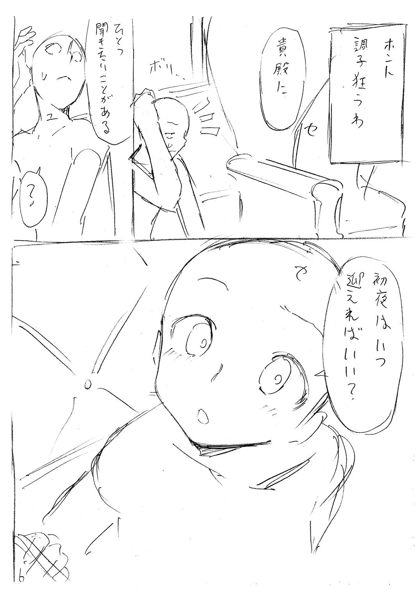

| 文句の付けようがないラブコメ 6 | |
| 鈴木大輔 | |
この本は縦書きでレイアウトされています。
また、ご覧になる機種により、表示の差が認められることがあります。
 ダッシュエックス文庫DIGITAL
ダッシュエックス文庫DIGITAL
文句の付けようがないラブコメ ６
鈴木大輔
始めに記す。これは茶番だ。
少女Ａはただひとりの生き残りだ。
数限りなくいた、彼女と同じような境遇の被験者たち――その中で唯一〝成功〟し、満足な結果を得ることができたのは、Ａのみだった。
まずはＡの生まれた世界について語らねばならない。
ひとことで言って、その世界は壊れかけていた。人口の爆発的な増加、それに伴う環境の破壊。長期的な気候の大変動、はびこる疫病、そして戦争――崩壊の原因は枚挙にいとまがない。およそ『人間』に類似する存在が生態系の上位を占める世界であれば、おそらく必然的にたどり着くであろう、あるいはどこかで乗り越えねばならない、いわば試練のようなものである。
試練、と言ってしまうと、ずいぶんお気楽な響きではあるが。
なんならある種の陶酔さえもよおす、ヒロイックな物語すら想起させる、そんな語感すら持っているのだが。
無論そんなことはない。
有り体に言って、もしくは率直に表現して、世界のありさまは地獄絵図であった。
恐怖と絶望に満たされた、まさしく末期の状態が、世界を覆っていた。神も仏もいないことを人々は認めざるをえなかった。少なくとも彼らには超越者の救いの手が差し伸べられることはなかった。急速に、それでいて緩慢に――滅びに抵抗する程度にはまだ人々の気力は残されていた――破滅の時は近づきつつあった。
そう抵抗、である。
抵抗するからには、まだ可能性が残されていたということだ。
捨てる神あれば拾う神あり、と言う。人々の中には、知恵もあり、気概もあり、忍び寄る滅びに対して徹底的に抗おうとする一派も存在した。
何をしてでも世界を滅びから救いだそう、と考える彼らは『拾う神』であり、人類にとっては英雄たちであった。
そう。何をしてでもである。
英雄たちの存在は徹底的に秘匿された。
滅びに抗う彼らはきわめて合理的であった。世界を救う大仕事は、有象無象の多数決では決して果たせない、ということをよく識っていた。
彼らの元には世界中からあらゆる資産が集まってきた。金銭、人材、権力、その他もろもろ。彼らはひとり残らず無私であり、真摯であり、目的のためにはあらゆるものをなげうつ覚悟があった。痛烈な統一意思による純粋な行動――おそらく人類の歴史上、初めてなされた偉業だろう。あたかもそれ自身がひとつの生命体であるかのように動く、完璧な組織。それこそが英雄たちの実像であった。
彼らは迅速に行動した。
十分な議論と検討の結果、ひとつの道筋が導き出された。その時代、彼らの科学技術は奇形的なまでに進歩し、世界を編み上げている真実にかなりの精度で肉薄していた。具体的には世界の成り立ちを解き明かし、再構築するという試みに、理論上は手が届く範囲にまで彼らは達していたのだ。
ただし、そのためには多くの実験と実践が必要であった。彼らが手にしていたのはあくまでも理論であり、再現性のない理論は空想と同義だ。また彼らには何より時間が足りなかった。滅びは背後に忍び寄っている。求められるのは速度であり、正確さや精密さではなく、まして倫理などはお呼びでなかった。
研究は急速に進んだ。世界を救うという結果に至る道は細く、蜘蛛の糸のように頼りなかったが、英雄たちは着実にそれをたぐり寄せていった。
こうして少女Ａは生まれた。
彼女こそ英雄の中の英雄であった。奇跡であり、希望であった。ただしひとつだけ、決定的な不運が彼女にはあった。彼女は自ら望んで英雄になったわけではなかったのだ。
Ａは被験体であった。
当時、Ａと同じ立場の子供たちは無数に存在した。わずかでも可能性ありと認められた子供たちが、合法非合法を問わず世界中から集められ、英雄たちの壮大かつ崇高な実験に参加した。
否。
参加した、という表現はいささかまろやかすぎる。子供たちの立場はマウスやモルモットと変わらない。あらゆる手段で身体と精神を弄られるのが彼らに与えられた仕事であった。一例を挙げると『極限の状況下における、脳波と幻覚との相関性、および身体的特性の獲得の可能性』という実験がある。内容は文字どおりだ。子供たちを限界ぎりぎりの状況にさらし、心と身体の変化を観察する。極限の状況下を再現する方法も様々だった。最先端の生命維持装置を取り付けた状態で、足のつま先から少しずつ肉と骨を神経を削り取っていき、性器、内臓、脊髄、と順番に除去していくとか。十人分の子供の脳みそを生きたまま連結させ、複数の人格が同居した合成人間を作り上げ、彼らが正気を失っていく様を記録していくとか。
冗談でも遊びでもない。
いずれも真剣きわまる試みだった。英雄たちには世界の命運が掛かっている。世界はすなわちすべてである。彼ら自身や、彼らの家族の命もむろん含まれる。完全に、まったくの正常な意識のもと、数々の実験は行われた。
もちろん英雄たちも生身の人間であり、自らの『非人道的な行為』に耐えられず、脱落していく者たちは後を絶たなかった。脱落はすなわち死を意味している。英雄たちにとっても、被験体たちにとっても、数々の試みは命がけであった。
すなわち無数の屍の上にＡは生まれた。
気づいたときＡはそこにいた。
『そこ』とは一体どこか？
長らくＡには『そこ』がどこであるのか、とんと理解がおよばなかった。あえて呼ぶなら『そこ』は図書館であった。本と、本棚。その場所にあるものは、ほとんどそのふたつのみ。整然と、ある種の数式じみて並んでいる、どこまでもつづく本と本棚の列。Ａの知る限り（その知識をいつどこで身につけたかもわからないのだが）、そういう場所につけられる名前はひとつしかない（まさか本屋さんではあるまい、ということぐらいはＡにも理解できた）。
さて、Ａはそこにいることに気づいた。
気づいたが、それ以上のことはなにもわからない。
なぜならＡには記憶がなかったのである。膨大な、しかもひどく偏った知識だけは豊富にあったのだが、他のことは一切わからなかった。
Ａは途方に暮れた。
なにせやることがない。『そこ』には本と本棚と、あとは少しばかり生活していくのに必要ないくつかの品物（ベッドとか食器とかソファーとか）ぐらいしかなかったのだ。
仕方なく、Ａは自分にできる、ほとんどただひとつのことをやることにした――すなわち読書である。
来る日も来る日も（そもそも『日』という概念が『そこ』に存在したのかは怪しいが）、Ａは本を読んだ。
本を読み、経験せざる知識をため込んでいった。
図書館には果てがなかった。
読み続けても読み続けても、本は次から次へと現れた。どれだけ熱心に読破したつもりでも、次の、そのまた次の本が、棚には並んでいく。本はいつでも新鮮な知識を与えてくれたが、やがて『新鮮な知識を与えてくれる』という現象そのものが新鮮ではなくなってしまった。
Ａは退屈した。
退屈し、ふて腐れ、それでもやることといえば読書しかなく、渋々ながらひたすら本を読みあさった。時にはボイコットを試み、ソファーに寝そべってひたすら自分がここにいる意味を考える時間もあったが、それでもやはり、けっきょくは読書に戻ってくるしか術がないのであった。
どれほどの時間が流れたろう。
己の存在に、Ａが完全無欠なまでに倦んだころ。ようやく彼女とは別の人格、Ｂが登場するのである。
†
「わたしはね、ときどき思うのですよ」
桐島ハルコはため息をついた。
「この世でもっとも不幸な存在はこのわたしではないかと。いいえむしろ確信しています。この世でもっとも不幸な存在はこのわたし、桐島ハルコです。これはもう断言します。異論は認めません」
「ほほーう」
話に乗ってきたのはクルミだ。
テーブルに肘をつき、ティーカップに口をつけながら、大げさに目を見開いている。その表情はいちおう笑ってはいるが、『あーハイハイまた始まった』という空気を隠そうともしない。
「オーケー聞こうじゃないかハルコちゃん。どうしてユーはそう思うんだい？ ホワーイ、ドゥーユーシンクソー？」
「お答えしましょう」
ハルコは胸を張って、
「その理由はただひとつ。わたしとお兄さまが一度も結ばれたことがない、という点にあります。数限りなく人生をくり返してきましたが、わたしとお兄さまが結婚したり、肉体関係を結んだりするトゥルーエンディングには恵まれませんでした。一度もですよ？ ただの一度もです。これは明らかに異常です。世界が破綻している証拠と言ってもさしつかえありません」
「ハルコちゃんってさあ」
笑いながらクルミ、
「ほんっとキャラが変わらないよね昔から。そこはわたし、心の底から尊敬します」
「ほほう。いい心がけですねクルミさん。わたしはあなたのことが基本的に嫌いでしたが、そういう素直な点は評価してあげなくもありません。ごほうびにアメちゃんをあげましょう。紅茶味とコーヒー味、どちらを選んでもいいですよ」
「ごほうびは要らないからさ、わたしの愚痴も聞いてもらっていい？」
「特別に聞いてさしあげます」
「わたしもトゥルーエンドがほしい！」
どんっ！
テーブルを拳で叩き、クルミは力説する。
「ハルコちゃんはそう言うけどさあ、わたしだってぜんぜん恵まれてませんよ？ ユウキくんとあーんなことやこーんなことするエンディング、たまには経験してみたかったですよ？ わたしだってさあ、ハルコちゃんほどじゃないかもだけど、ユウキくんとはけっこう近い位置にいたわけですよ。おいしいポジションだったわけですよ」
ぐいっ、とクルミは酒をあおる。
いつの間にか彼女の手にあったのは、琥珀色の液体に満たされたウイスキーグラスだ。ドライフルーツにスパイスを振りかけたような芳香が、たちまち周囲に立ちこめる――周囲といっても、彼女たちを取り囲んでいるのは無味無色の虚無なのだが。
「ほら、放課後の学校でふたりきりとかさあ、そういうシチュエーションは腐るほどあったわけじゃん。てことはさ、普通はさ、恋のアバンチュール的なさ、そういう流れがたまにはあってもよかったわけじゃん？ なのに一度もちゅっちゅとか、きゃっきゃうふふとか、そういう展開にならなかったわけですよ。これっておかしくない？ おかしくね？ おかしいよね？」
「それは単にあなたに度胸が足りなかっただけでは？」
「なにおう？」
「だってそうでしょう」
ハルコは鼻を鳴らして、
「あなたにはチャンスがあったわけですいくらでも。ごく普通の、しかしごく近しい同級生としてのポジションを獲得し、お兄さまに迫ることができる立場だったわけです。なのにクルミさん、あなたはみすみすそのチャンスを棒に振り続けてきました」
「んなことないよ。けっこう努力したよわたしだって」
「ほほう？ 放課後に延々とくっちゃべりながらホチキスで資料を作ることが、あなたにとっては努力だったと言いたいのですか。ほほう」
「わたしはハルコちゃんとちがってシャイなの。内気な女の子なの。そういう奥ゆかしいアプローチしかできないの。これはもう仕方ないことなの」
「それを言うなら、わたしなんてクルミさんとちがって血の繫がった兄妹なわけですよ、お兄さまとは。これはもうはっきり言いますが致命的なハンデですよ？ それをわたしは常に乗り越えようとしたんですよ？ この涙ぐましい努力をもっとほめてもらってもいいと思います」
「涙ぐましい努力ねえ......あーそういえばさ、こういうこともあったね。ハルコちゃんが本格的にお兄さまラブになってた時にさ、ユウキくんと結ばれそうになったこと」
「ほうほう、そのシチュエーションを持ち出してくるとは。あなた目の付けどころがいいですねクルミさん。そう、あの時はあと一歩のところでした。お兄さまに睡眠薬を飲ませて、鉄の鎖と手錠でがんじがらめにして、完璧なセキュリティをほどこした地下室に閉じ込めて......わたしの愛はまさに成就する寸前でした。あれは本当に惜しかったです」
「いや犯罪じゃん完全に」
「なにおう？」
「まあまあお二人とも」
別の声がした。
紅茶のおかわりを淹れてきたおチヨである。
「とりあえず新しいお茶を飲んで、心を落ち着けてはいかがです？ 活きのいいファーストフラッシュを用意いたしましたので、どうぞご賞味を」
とぷとぷとぷ。
ティーポットから注がれる褐色の液体が、香りのよい湯気を立てる。それを眺めながらクルミが呆れ声で、
「おチヨさんってさあ」
「はい？」
「律儀だよねえ」
紅茶のカップをくんくん嗅いで、
「ここってそういう世界じゃないんだからさ、もっと普通に出せばいいのに。あ、ちなみに今のわたしはミルクとお砂糖をたっぷり入れたい気分なので」
と言って、クルミは右と左の手のひらを開く。
と見えた瞬間にはもう、彼女の手の中にはそれぞれ、ミルクと砂糖のポーションが握られている。
「これだから庶民は」
ティーカップに口を付けながらハルコが鼻をならす。
「情緒のないことです。優雅を楽しむには手順が必要なのですよ。わたしをご覧なさい、血筋に裏打ちされた所作の、この美しさ」
「いーの。わたしは効率厨なの」
「まあまあおふたりとも」
にこにこ顔でなだめながら、おチヨは焼きたてのクッキーを用意する。
「わたしはこういう性分ですので、人間として生きていたころのクセが抜けていないだけですから。どうかケンカはなさいませんよう」
「まーケンカつってもねえ？」
「じゃれ合っているだけです」
「どうせここにはわたしらしかいないんだからさ」
「ええまったく。ケンカと呼ぶのもおこがましい」
クルミが言い、ハルコが肯定する。
おチヨがにこりと微笑んで、
「おっしゃるとおり。ここにはわたしたちしかいないのです。機会は無限にあり、可能性のまがい物は無限にあり、かといって成すべきことがあるわけでもない。行き詰まりきったわたしたちが存在するだけの、なんともさみしいステージです」
「ある種の夢うつつです」
「しかもぜったい醒めないやつね」
倦怠感あふれる空気が満ちる。
なんでもありそうで何もない、まさに行き詰まりきった果ての、いわばお決まりの構図。
「では」
おチヨが席につき、紅茶を手にとって、
「始めましょうか。他にすることもありませんし」
「ま、しょうがないよね」
「気は進みませんけどね」
「まあ、終わりが近いからね」
「ええ、終わりが近いですから」
「こういう反省会もたまにはいいよね」
「はい。たまにはいいでしょう」
クルミもハルコも同意する。
おチヨがにこりと微笑んで、
「辟易するのを通り越して、ちょっとやみつきになるほどくり返してはいますが――始めましょう今回も。世界を解体し、白日の下にさらす作業を」
昔々、あるところに神様がいました。
神様はなにしろ神様なので、不思議な力を持っていました。なんと、神様は世界のけがれを綺麗にして、世界の形を保つことができるという！ これはとてもすごいことなのです。なにせ、神様がいないと世界は成り立たないのですから。
当然、神様はずっとその力を使い続けていなければなりません。そうしないと世界は滅びてしまいますので。
では、そのためには一体どうすればいいのか？
神様がずっと力を使い続けていられるためには、一体なにをすればいいのか？
これは悩ましい問題でした。なにしろ神様は元々ただの人間だったので、ずっと力を使い続けるのはちょっと無理がありました。何か方法を考えねばならない。考えなければ世界は滅びてしまう。
この問題はとても悩ましく、解決するのは一筋縄じゃいきませんでした。ですがさすがは人類。とても悩ましい問題を解決する方法を、彼らはついに編み出したのです。
Ａにとって、Ｂは唐突に出現した異物であった。
彼はある時、ふいにＡの目の前に現れた。
「よう」
と彼はあいさつした。
Ａはあいさつを返さなかった。なぜならＡは呆気にとられていた。彼女のいる〝ここ〟は、ずっとひとりだけのものだった。本と、本棚と、それ以外のこまごましたわずかな物、それだけしかない世界で、Ａはずっと退屈に倦みながら存在し続けていくのだ、とばかり思っていたのだ。
「お邪魔しますよ、っと」
彼――すなわちＢは、呆気にとられるＡを尻目にソファーに腰掛けた。それから手近にある本を取り、ぱらりぱらりとページをめくり始めた。
Ａはまだ呆気にとられていた。
異物だ。男だ。少年だ。
少年？
ああそうだ――とそこでＡは気づく。いや、思い出した。そういえば自分は女であり、少女であった。性別や年齢などとうの昔に忘れてしまっていた。異物という、異性という、新しすぎる刺激に、Ａの自我がたちまち活性化を始める。
それでもＡがＢに問いを投げかけるまで、かなりの時間が掛かった。果たしてどれほどの時間であったか――そもそも時間という概念に意味があるのかどうかも定かでない世界であったが――ともあれ、とてもとても迷いに迷った果てに、Ａは訊いてみた。唐突に出現した異物であるＢが、いったい何者であるかを。
「そうだなあ」
Ｂは、ぱらりぱらりとめくっていた本を閉じる。そして「ふうむ」と考え始めた。
妙な話ではあった。Ａの投げかけた問いは、それほど難しいものだったのだろうか？ 別に哲学的な意味もないし、答え方を間違えればとんでもない目にあう、というわけでもあるまいに。
だがＡはすぐに納得した。時間などさして問題ではなかった。そもそもＡの方こそ、問いを投げかけるまでにずいぶん長い時間をかけたはずだ。そしてＢはＡがずっと迷っていた間、いちどもＡを急かすことがなかったから、彼もまたみずから急くことがないのは当然と思われた。
「その前にさ」
Ｂは言った。
「俺からもちょっといいか？」
どうやら、彼からも何かしら主張したいことがあるらしい。だったら長い長い沈黙の間にでも、彼がぱらりぱらりと本をめくっている間にでも主張してくれればよかったのに、とＡは思わなくもなかったが、特に口にはしなかった。そう、この少年は急かさないのだ。そしてＡもまた、急かす必要がない。
いったい何を主張したいのか？
Ａは問うた。
Ｂはこう言った。
「お前さ。俺と結婚しねえ？」
――恐るべき事実である。
時間にさしたる意味がなく、おそらく空間にも意味がないであろうこの場所、この瞬間で、そもそもＡのみしか自我が存在しなかったこの世界で。いきなり登場したかと思いきや、ろくに意思の疎通も交わさぬままにプロポーズである。前言を撤回せねばなるまい。この少年、とんでもない急かしっぷりだ。
だがそれでもＡはこう答えた。
はい。よろしくお願いします。と。
「おおう」
Ｂはそっくりかえって驚いた。
「すげえ。ノータイムだ。迷いなしだ。いきなりイエスがもらえるとは思わんかった。いやすげえなお前」
ひどく感心されたが、Ａにとってはむしろ自明の理であった。
だって男と女だ。ここにいるのはたったふたりだ。であれば、結婚するのはごく普通のことではあるまいか。いつの世もいつの時代も、性別の異なる者同士はつがいになるものだ。数限りなく本を読んできたＡだから、その点はまったくもって確信ができた。ここでプロポーズされたらイエスと答えもするだろう。
ただし、である。
自明であると同時に意味不明だ。
そもそも結婚という制度にどれほどの意味がある？ 自我が活動する舞台があり、現実に営む社会生活があり、数かぞえきれぬ他者が、無機物有機物を問わず、無意思有意思を問わず、普遍的に存在してこそ、雄と雌がつがいを組む意味があるのではないだろうか？
『ここ』にはそのいずれも存在しないではないか。結婚したとして、それがいったい何になるのだろう？
......という意味のことを、ＡはＢに説明した。
Ｂはこう応えた。
「ま、そうだよな」
そして彼は笑ったようである。
この場所、この瞬間においては、いわば虚数的な存在であるＢにとって、そしてもちろんＡにとっても、笑いをふくむ喜怒哀楽はすべて、ごくごく記号的な、言ってみれば儀礼的な仕草でしかなかったが。それはそれ、これはこれ。意味はなくとも意思は伝わる。
ともあれ彼は笑った。
決して嫌な笑みではなかった。むしろさわやかな、あちゃあと額を叩いて今にもおどけそうな、茶目っ気のある笑みだった。
「さあて。こっからは話が長くなるぞ」
ソファーにどっしり腰掛けて、Ｂは言う。
何が長くなるのか、とＡは問うた。Ｂはやはり笑って答えた。
「だってさ。俺が結婚を申し込んで、お前は受け入れてくれたけど、でもそれだけなんだよ。お前の言うとおりだ、これじゃあ結婚したって意味なんてない。だから俺たちが結婚したことに意味を持たせなきゃ」
なるほどその通りだ。
Ａは納得した。いきなり登場して好き勝手に世界をかき回すＢではあるが、むしろ筋は通っている男のようだ。
しかしはてさて。一体どうすれば意味なんて持たせることができるのだろう？ Ａにはとんと見当がつかない。Ｂには何かしら腹案があるのだろうか。
「そうだなあ」
Ｂはあごを撫でて考え、そして言った。
「この世界にいろんなものを足していこう」
はて？
Ａは首をひねった。
いろんなものを足す？ この世界に？
足すとはどういうことだろう。この世界、とは何を指すのだろう。
「お前の言うとおりだよ。『ここ』には形も意味もない。ただし可能性らしきもの、っていうか可能性のまがいものかな。そいつはほとんど無限大にある。言い方を変えれば、今から世界を作っていく、ってことだよ」
わかるような、わからないような。
Ｂの言うことはＡには難しい。言っていることはわかるが、言っている意味はわかるのだが、いや、やっぱりよくわからない。さすがは異物。何を考えているのやら。
「いいよわからなくても」
Ｂは笑った。
「わからないなりにいっこずつやっていこうぜ。そうすりゃいずれ何かがわかってくる。そういうもんなんだよ。まずは少しずつだ」
そういうものか。
よくわからないが、わからないなりにＡは納得した。賛成する理由もないが、反対する理由もなさそうである。なによりＡは、不思議な異物であるＢに興味があった。
それで？
いったい何をすればいい？
「そうだなあ」
Ｂは考えた。
ゆっくり彼は考えた。Ｂは決して急がないし、急がせない。
「じゃあこうしよう」
Ｂは言った。彼がいつもそうするように、やっぱり笑いながら。
「名前をつけようぜ。お前のさ」
†
「まずはわたしの意見を述べます」
ここは〝反省会〟の会場である。
ハルコと、クルミと、おチヨがいて、テーブルと、ティーセットと、あとはただ白、白、白、白。高さも奥行きもない、空っぽの虚無が、どこまでもどこまでも広がっている。
「この世界は茶番である、ということです」
「そのココロは？」
クルミが訊くとハルコが応じて、
「言葉どおりの意味です。答えがない。結末がない。つまり意味がない。意味がないことはすべて茶番です。過程だけが存在する、致命的に矛盾をはらんだ世界です」
「いいじゃん過程だけでも。過程そのものが答えであり、結末だよ」
「詭弁です」
「でも事実だよ」
「認めます」
ハルコはあっさり頷いた。
「ゆえにこそまさしく茶番なのです。過程が答えであるなどという惨めな慰めがなければ、我々は自らを納得させることすらできない。これが茶番でなければ何なのでしょう」
「まあねー」
今度はクルミがあっさり頷く。
「ひっどい茶番だよ。何万回も、何百万回も続けたって変わらない――ていうか、これまで何回くり返したんだっけ？ わたしらのコレ」
「さてどうだったでしょう。二千万は越えたと記憶していますが」
「そんな少ない？ もっとあるでしょ？」
「千億とんで六億と十七万八千四百五十一です」
おチヨがさりげなく補足する。
「おおーさすが」「よく覚えていられますねえ」クルミとハルコは呆れ半分、感心半分の拍手を送る。
「わたしは意外と楽しんでおりますよ」
ティーカップに口を付けながら、おチヨ。
「このわたしという自我、らしきものが、これだけの『くり返し』を、この時点に至るまで続けてこられたということ。これはちょっとした奇跡です。結末がいつも最悪になる、という一点さえ除けば、これほど恵まれた立場もないでしょう」
「えー？ そうかなあ？」
「ええそうですよ」
顔をしかめるクルミに、おチヨはやんわりと、
「だって考えてもみてください。我々の置かれた定めは、いわば永遠の命を手にしているようなものではありませんか。およそ意識と呼ばれるものを保有している存在には、本来であれば決して届かない役割なのです。自らの幸運に感謝してもいいぐらいです」
「またまたあ。心にもないこと口にしちゃってえ」
「よろしいではありませんか。ここは反省会の現場ですからね、いわゆるブレインストーミングですよ」
「脳みそなんて意味ないけどね、わたしたちには」
「比喩表現にそういう突っ込みをされましても」
ニコニコしたまま困り顔をするおチヨ。
クルミは肩をすくめて、
「そもそもさ、わたしらの意識ってやつが、どのていど確かなものかも怪しいじゃん。うたかたの存在っていうかさ、そもそも実在自体があやふやっていうかさ」
「我思うゆえに我あり、ということでよろしいではありませんか」
「悟りってやつ？」
「悟りとヤケクソは同義ですよ。あとは気持ちの問題です」
「おチヨさんってそういうところあるよね」
「それが役割ですから」
ジト目をするクルミ。
ニコニコ顔で受け流すおチヨ。
「役割といえば」
ぴりぴりし始めた空気に割って入ったのはハルコである。
「我々に与えられた〝裁定者〟という立場ですが。まことにもって奇妙な存在であると思いませんか」
「思うね」
「思います」
同意するクルミとおチヨ。
ハルコは続けて、
「おそらく合議制の存在なのですねわたしたち三人は。司法、立法、行政。東方の三賢者、あるいは鼎の三脚。およそバランスというものを取り得る最小の数、それが三です。わたしたちはその三に選ばれた。あるいはその三たりうるために創り出された。そうは思いませんかクルミさん」
「条件つきで同意」
「条件とは？」
「目的がわかんねっす」
疑義を呈して、ぱちん、と指を鳴らすクルミ。たちまち手に握られたのはよく冷えた生ビールのジョッキ。「また飲むのですか」というハルコの苦情を「まーいーじゃん」と受け流して、
「とにかくわかんないんだよね。どこの誰がわたしらを創り出したんだか――いやまあ神様なんだろうけどさ、それでもやっぱわかんない。裁定者なんてもんがそもそも必要なのかな？ いなくてもいいじゃん別に」
「よくはありませんよ。わたしたちという、この世界の成り立ちをあるていど俯瞰できる存在がいなければ、こうして世界を考察することさえできないわけですから」
「えーなに？ ハルコちゃん揚げ足取り？」
「我思うゆえに我あり、なのでしょう？」
「まーなんにせよさ」
ぐびぐび。
ぷっはあ。
ジョッキのビールを一気に飲み干して、
「我々って元々は人間なんだろうから。人間が想像できる限界は超えられないっていうか。でもってそこが納得いかないというか」
「納得いかないとはどのあたりが？」
「だって意味ないじゃん。ハルコちゃんの言うとおりだよ。茶番なんだよ本当に。わたしたちがやってることはぜんぶ。こりゃどうしようもないね。行き詰まりにも程があるってなもんよ。どーにもならんっすよこれは」
「『いいじゃん過程だけでも。過程そのものが答えであり、結末だよ』......一字一句違わず、先ほどクルミさんが仰ったセリフですが？」
「えー。揚げ足取りじゃーん」
ぶーぶーとブーイング。
澄ました顔で紅茶をすするハルコ。
「いやしかしホント勘弁してほしいわー」
ぱちん、と指を鳴らし、ビールのお代わりを手にしながら、
「我々っていつまでこんなこと続けるんだろね？ 何度も同じことくり返してさー。ぜったいにクリアできないゲームをさー」
「いいではありませんか」
とハルコ。
「おかげ様で、我々は神に次ぐ存在でいられます。クルミさんがそうやって好きなだけビールを飲めるのは、普通の人間には決してできない芸当でしょう？」
「えー？ でもこういう幕間のさ、一瞬の束の間のさ、うたた寝してる間に見る夢のようなさ、そういうものなわけじゃん、わたしが飲んでるこのビールもさ。気づいたら目が覚めて、何もかも消えてなくなる。ある時は茶番の登場人物として、ある時は裁定者として――どこかの誰かさんから与えられた役割を、ひたっすらに演じ続ける。こんなのが神に次ぐ存在と言われてもねえ」
「人生はおしなべて泡沫に等しいものです」
「我々のコレが人生と呼んでいいものかどうか微妙だけどね」
「それでも我々はこうしていられる。何億回もくり返す人生は、ヒトの意識にとってもはや無限に等しい。無限はすなわち永久です。まあ生きていると定義していいものかどうかは甚だあやしいですが、それでも確かにこうして存在していられる。誰もが憧れる永遠の命を、なんと我々はこの手にしているのです。恵まれていますよ。こんな恵まれた茶番は他にないと断言できます」
「わたし、できればこのゲームから降りたいんですけど」
「わたしもです。お兄さまと結ばれるフラグが絶対に立たないゲームなんて、クソゲーかどうか以前に不条理でしょう？」
「何億回くり返してもその点がブレないハルコちゃんをわたしは評価します」
やれやれ、とため息をつくふたり。
気だるげで粘ついた空気が、テーブルの周囲に重く漂う。
「どうしても話題はループしますよね」
新たな紅茶を淹れながらおチヨが微笑む。
茶葉をミルクでざっくり煮出し、砂糖とシナモンをたっぷり注ぎ込んだチャイだ。濃厚な香りがうつろな空間に、それでも豊潤に満ちていく。
「行き詰まっているのですからその点は甘受しましょう。我々はそもそもそういう存在なのですから」
「達観してるねえ」
「もともとそういうキャラクターづけがされていますからね。それとお二人に比べて、わたしは一回の人生が長い傾向にあります。基本的には我が主にお付き合いして、千年の時を生きるわけですから」
「ご苦労様です」
「ご愁傷様です」
クルミとハルコがそろって頭を下げる。システム上不可避な構造になっているとはいえ、よくこのメイドの頭はおかしくならないものだ。時間のものさしで測るならば、果てしなく繰り返すうんざりなゲームを、おチヨはクルミとハルコの何十倍も経験していることになる。気が遠くなりすぎて正気を保つしかない現状の、そのまたずっとずっと先に、彼女の人格は屹立している。おチヨの見かけ上の年齢が三人の中でもっとも上であることも、これらの要素と無関係ではあるまい。合議制と自認している彼女たちの中でも、おチヨは一段と際立った存在であった。
クルミとハルコが好き勝手なことを言い合う。
それらをおチヨがなにかしらの形にまとめる。
彼女たち三人の会合は、主に右のように進行する。
「バランス」
不意におチヨが言った。
「というものについて考えてみませんか」
「そのココロは？」とクルミ。
「恐らくそれこそが、我々の存在を定義する鍵になるからです」
チャイに砂糖を足しながらおチヨ。
彼女はわりと甘党である。と設定されている。
「我々三人は、それぞれが独立して、あるいは共謀して、千億とんで六億と十七万八千四百五十一もの回数を重ねたゲームの調停役を担ってきました。始めから敗北が決まっているゲームを、正しく敗北に導くために」
「ひっどい話だよねえ」
「ええ、ヘドが出るほどひどい。ですがそれこそがまさしく正しい姿なのでしょう。我々のこの舞台裏は、舞台裏であることまで含めて、象徴的な現象であり、存在なのです」
「......うーんごめん。わたしってあまり頭がいい設定に作られてないので。哲学的な話はちょっと」
「失礼いたしました。ですがクルミさん、おそらく難しい話ではないのですよ。きっと答え自体は簡単なのです。とてつもない大回りをしたあげくに、答えはあきれるほど身近にある。ありがちな話ですよむしろ」
「いや。やっぱわからんので。バトンタッチ。ハルコちゃんに任せるわ」
「任されました」とハルコ。
「このわたし、桐島ハルコと名付けられた存在は、折に触れて世界の秘密を暴かんとする役割を与えられてきました。我々三人において、おチヨさんがいわば筆頭というべき存在であることに異議は唱えませんが、それでも先を越されるのは不愉快です」
「あら。それはまた失礼を」
「とはいえ不愉快ながら、一考の価値ありと認めます。これまでの話を総合するに、おチヨさんには答えが見えている、という解釈でよろしいでしょうか？」
「はい」
あっさりメイドは頷いた。
「ただし正解である保証はありませんよ？ むしろ仮説なり推測なりを、本当に正しい解であると証明すること。それこそが我々に課せられた役割であると、わたしは考えているのですが。お二人の考えは如何？」
「異議なし」
「同じく」
クルミとハルコが賛成する。
それを確認してからおチヨは言う。
「では紐解いていきましょうこの世界を。暴かれた先には絶望なり失望なりしか残らないでしょうが、それでも何の結果も出ないよりはマシです。......ですがその前に焼きたてのスコーンなどいかがですか？ ええ、どうせなら優雅に振る舞いたいのですよ。おそらくはこれが我々にとって最後の〝反省会〟になるでしょうから」
昔々、あるところにＣという少女がいました。
Ｃは貧しい生まれでした。貧しい生まれということは、盗みや騙りや殺しといった出来事が日常茶飯事であり、Ｃもまたそれらに馴染んで育ったということです。しかしＣにとって幸いなことに、彼女には生まれながらにして周囲より優れている点がいくつもありました。頭脳、身体能力、そして容姿。おかげで彼女が大人たちから搾取される期間はとても短く、長じるにつれてたちまち搾取する側に立つことができました。
されど上には上がいるのが世の常。
ほどなくして、彼女はより強くてより大きな者たちに目を付けられ、買われることになりました。売られる側として生まれ、売る側に育ち、そしてまた売られる側に立たされる。Ｃは人生の空しさをあらためて知り、ひとつまた成長しながらも、ふたたび下の立場に堕ちることとなりました。
さて、Ｃが売られた先で求められた仕事は奇妙なものでした。
Ｃの仕事は、とある少女の護衛と、身の回りの世話でした。Ｃの主となったその少女は、Ｃよりも美しく、Ｃにとっては雲の上の存在と言っていいほど高貴な生まれで、大人たちから大切に大切に扱われていました。
Ｃは初め、自分にこんな仕事がつとまるのか疑問に思っていました。彼女は貧しい生まれであり、盗みや騙りや殺しが日常茶飯事の世界に生きていたのに、果たして高度に貴族的な社会になじんで仕事ができるでしょうか？
ですがＣにとって意外なことに、彼女はその仕事に向いていました。権謀術数の跋扈する貴族社会の中で自らの立場を確立していく作業、つまりは政治の面において、Ｃには才能があったのです。ことさらＣが身につけてきた、面従腹背の笑顔が役に立ちました。護衛と身の回りの世話とはいえ貴人のそばにつくわけですから、笑顔は裏側で暗躍するために必須の素養と言えます。Ｃは才能を存分に発揮し、政治の舞台で思うまま辣腕をふるい、密かに恐れられる存在となりました。
何より思いがけなかったのは、彼女の主となった少女と心を通じ合わせることができた、ということでした。主は聡明なゆえに、Ｃを身分ではなく、その人となりで見てくれましたし、Ｃとは年齢もさほど離れていませんでした。また貴族社会において主の立場は必ずしも安定したものではありませんでしたから、Ｃにとってはもとより共感を覚えやすい相手でもあったのです。売られた先で与えられる人生などＣにとってはまっぴらであり、いずれ背反するつもりでいたのですが、主と接しているうちに気が変わりました。主を護衛し、身の回りの世話をする仕事をまっとうしよう。そして主をずっと支えていこう――年月が経つにつれ、そんな風に考えるようになっていました。
そんなＣにふたたび転機が訪れました。
彼女の主が生贄として捧げられることになったのです。
それはとても名誉なことでした。なぜなら彼女の主は世界を救うために身をなげうつのですから。人々はみな主を称え、誰もが世界の救済を主に期待し、神にも等しい存在として崇め奉りました。主は圧倒的な多数の希望を背負って、美談に彩られたヒロイズムに背中を押される形で、世界を救う立場に足を踏み出すしかありませんでした。
ですがもちろん、そんな事情はくそくらえでした。Ｃにとって名誉など豚の餌以下の価値しかありません。他人を生贄に差し出して利益を得る弱肉強食の理屈は望むところでしたが、その対象が自分にとって大切なものなら話は別です。
こうしてＣは、主に付き従って生贄に捧げられる道を選びました。主の護衛と身の回りの世話をするのが彼女本来の仕事。必然であり、自然な流れだったと言えるでしょう。もちろんＣのねらいは、機会をうかがって主を救い出すこと。決して楽観ができる状況でないことは重々に承知していましたが、主を見捨てないためにはそれ以外に方法がありませんでした。
もちろんこの時は知るよしもなかったのです。この世に生まれたことを心から後悔するような悪夢の、これは始まりにすぎなかったことを。
「名前をつけようぜ。お前のさ」
衝撃的な発言であった。
名前。
名前か。
Ａは懐かしい気持ちでその単語を嚙みしめた。
彼女の主たる営み――どこまでもつづく本棚から書籍を読みあさる行為は、本来であれば名前にあふれているはずだ。名前。固有名詞。物事に意味を与えて固定する、特別で、当たり前なアクション。なのにこうしてあらためて考えると、ひどく新鮮な。
そうだ。
そうであった。
なにがしかが存在し、存在を観測するなにがしかが存在するならば、自分とそれ以外を区別するために名前が必要なのだった。そんな自明の理まで、Ａはとんと忘れていた。
「だろ？」
理解を促すようにＢは言い足す。
「まずは名前をつけなきゃならんのよ、お前にさ。そうしないと何も始まらん。プロポーズだって何の意味もなくなっちまう。俺とお前に区別ってもんがないとさ、結婚ってのはできないんだ。わかる？」
いちいちごもっともである。
Ａは大いに納得した。よかろう。では名前をつけよう。ＡとそしてＢと。ここに存在する人格――と呼んでいいのか定かでないが、仮にそう呼ぶとして――のすべてに意味を与えて固定しよう。結婚という高度な概念を達成するために、その行為は是が非でも必要なはずであった。
そうと決まれば善は急げ。
名前はさっそくにでもつけねばならない。
しかしはて、名前とはどのようにつけたらいいのだろう？
Ａには膨大な知識がある。あるが、『知識を使う』というそれ自体からして、彼女にとってはとてつもない大事業なのであった。『ここ』における彼女は、いわばデータベースなのである。データそれ自体は単なる情報の羅列にすぎず、ただの羅列に意味を持たせることがすなわち――
いや。
ごたくはいい。
名前だ名前。名前をつけよう名前を。しかし名前？ 何をどうつけたらいい？ 意味のある音、すなわち単語であればいくつでも思い浮かぶ。それこそ膨大な数を挙げることができる。だがそれだけだ。『名前をつける』と決めた瞬間から、Ａの機能は急激に活性化を始めた。始めたがしかし、情報に方向性がつかない。一気にあふれ出し、際限がなく、とりとめがなく、コントロールができない。
滅多にない――というより絶無であった新しい刺激に、つまりＡは興奮していたのだ。
その興奮にＢが水を差す。
「でもその前にさ」
はやるＡを押しとどめて、
「とりあえずしゃべってみない？」
......。
............。
はて？
しゃべる？
ふたたび事態はＡの許容範囲を超えた。
しゃべる。
しゃべるとは何であったろう。
Ａはすぐさまその言葉を検索した。口に出すこと。言葉を、喉と舌とくちびるを使って、誰かに伝えること。意思と意思の疎通。
ああそうだ。そうであった。
言葉とは本来、語られることによって意味をなすものであった。複数の他者が存在して初めて言葉は生まれ、生きて、命を与えられるものであった。あろうことかＡは例によって、そんな簡単なことさえ忘れていた。
Ａは慌てた。
そうだしゃべらねばならない。
そこでまたはたと気づく。Ａはしゃべっていない。言葉を口に出していない。だがＢにはしゃべらずとも意思が伝わっていたようだ。Ｂとはいったい何者なのだろう？ どこから来て、何をしようとしているのだろう？ いや、そもそも『ここ』とはどこなのか？ 自分とは一体なんであったのか？
「あのな。物事には順序ってもんがあるんだ」
Ｂは苦笑いしたようだ。
あせり、混乱するＡを、まるで子供が親にそうするように、ゆっくり諭しながら、
「急がなくていい。慌てなくていい。やれる範囲でいいんだ。ていうか何もできなくたっていい。こうして俺とお前が存在を確認し合えてるだけで、十分に価値があるんだから。でも俺は欲張りだからさ、できればお前と仲良くしたいと思ってるわけなんだな。だからお前にこうやってアクセスしてるんだよ。わかるか？」
わかる。
ような、わからないような。
しかしそれにしても順序。順序ときたものだ。
ああ何ということか。
もはや何度目であろう、前提となる概念をまたしても忘れていたことに気づかされるのは。秩序だてて、順番に、物事は運ばれるべきなのだ。Ａは打ちひしがれた。打ちひしがれることもまた、それ自体が新鮮な体験であった。連続する新鮮な体験はＡを惑わせる。当惑させる。惑乱させる。
しかしその一方でＡは冷静に考える。
物事には順序がある。それは理解できる。だがしかし、出会い頭にいきなり結婚を申し込んできた男が言うことではあるまい。Ａの知っているかぎり、結婚ほど順序だった手続きの必要なものは他にないと思われる。なのにＢは、この上なく順序を破っているように見受けられるのだが。
「いいんだよ」
Ａの疑問にＢは堂々と答えた。
「とりあえず最初に一発どでかいのをかますんだよ。出会い頭ってのはそれでいいんだ。順序を破ってナンボなんだ。むしろ俺がお前に結婚を申し込むには、順序を破る方が自然とさえ言える。なんせイレギュラーな出来事なんだから、普通に物事を始めていちゃいけないんだよ。わかるか？」
わかる。
ような、わからないような。
さしあたり、Ｂがとても強く、ゆらぎのない人格であることは理解した。彼には自信があり、確信があるようだ。そしてここが肝心なところだが、彼は悪意や敵意をいささかも持っていないように見受けられる。
Ａは考えた。
悪意も敵意もない。ならば従ってよいのか？
目的も素性もわからない。なのに従ってよいのか？
Ａは深く考えた。考えることは不快ではなかった。むしろそれは好ましい部類に入る挙動であった。機能が本来の機能を発揮することは、満足と密接に連携している。眠っていた膨大な知識をかなり不器用に駆使しながら、Ａは深く深く考えた。
やがて結論は出た。
やってみよう。
まずはしゃべってみよう。言葉を音に出してＢに伝えてみよう。
Ａはついに決意し、しゃべってみようとして――そこでまた、例の事象がＡの身にふりかかった。
しゃべれないのだ。
意思を、言葉を、音に出してＢに伝えることができない。口と舌と喉を使って声を震わせる、それは理解している。だができない。身体的な欠陥がない限り、ほとんど本能的かつ自動的にできるはずなのに。迂遠きわまることながら、いまのＡにはそんなことすらできないのだった。
何度目になるか知れない失望がＡを覆った。まったくなんということか。しゃべる、ということはこんなに一大事であったのか。そんなことも忘れていたし、あるいは気づきすらしなかったのだ。よもやこんなにも、できないことが多すぎるなんて。
「ゆっくりでいいよ」
Ｂは言った。
事実、Ｂの語り口は悠然としたものであった。彼はのんびりと椅子に腰掛け、書物をつれづれにめくりながら、
「のんびりじっくりやってみればいい。何度も言うけど急がなくていい。いちばん大事なことはもう済ませてるからな。いくらでも俺は待てる」
いちばん大事なこと？
「俺がここにいる、ってことだ」
しれっと彼は言った。
「俺がここにいる、お前のそばにいる。それだけでいいんだ。それで十分なんだよ。だから俺は待てる。待てるっていうか、もう満たされている。だからなーんも気にすんな」
彼の言葉に甘えて、Ａはゆっくり取り組むことにした。
Ｂは宣言どおりのんびり書物のページをめくりながら、Ａの次なるアクションを待った。
そうして数年か、数十年か。
ＡとＢのいる〝ここ〟にとって、時間の概念はあってないようなものだったが、あえて尺度を与えるならそれだけの時間が経ったころ。
満を持してＡはしゃべった。「わかった。なまえをかんがえよう」と。
だがしかし。
返ってきた反応は、Ａが予想だにしていないものだった。
「お前はせっかちだなあ」
Ｂは呆れたのである。
満を持してＡがしゃべった『わかった。なまえをかんがえよう』という、天地開闢にも匹敵する大事件を受けての、大変に心外な発言であった。
「名前をつけようとは言ったけどさ。確かに」
Ｂは書物のページを閉じてＡを見る。説教の調子ではあったが、彼の声の調子はあくまでもやさしくて、それゆえＡは彼の話をきちんと聞くつもりになった。
「んでもな、名前をつけるなんてのは後だ後。その前にもっとやることがあるだろが、もっともっと他に」
もっと他に？
やることが？
「しゃべるんだよ。とにかくしゃべる」
しゃべったではないか。
たったいま。熟慮に熟慮を重ねて。声を出すという振る舞いを忘れきっていたのをどうにか思い出して、Ａは自らの意思を表明したはずではないか。
「いいや足りねえ」
Ｂは否定した。
「もっとだもっと。とりあえずしゃべる。しゃべってしゃべってしゃべり倒す。まずはそれから。物事には順序ってものがあるんだって」
だそうである。
繰り返すが、いきなり結婚を申し出てきた男のセリフとしてはいささか心外だ。いったい誰のせいでこんな事態になっていると心得ているのか。順序を主張するからには、もっと順序を踏んでくれればよいではないか。
せっかくがんばったのに。
ずいぶん久しぶりに努力して、しゃべるという大事業に挑戦したのに。
Ａはもやもやした気分を覚えた。有り体にいって、彼女は少しむっとしたのだ。
「あ、それ。それだよ。いいぜそれ」
ところがＢは、我が意を得たりとよろこんで、
「欲しいのはそれだ。必要なのはそれだ。感情だよ。感情と、その表現なんだ。不器用でいいから言葉で伝えるんだ。それがお前をお前にしてくれるから」
わかる、ような、わからないような。
いやだがしかし、これはまだ理解可能な範囲の主張だった。なるほど、がんばったとはいえＡの発言は『わかった。なまえをかんがえよう』だけである。そして彼の言うとおり、確かにせっかちであったかもしれない。いざ名前を考えるにしても、何もないところからでは取っかかりがなさすぎる。ＡはＢのことをよく知らず、そもそもＡは自分自身のことすらよく知らない。『名前を決める』という高度な事業を達成するには、いささか足りないことが多すぎる。
「いいよ焦らなくて」
Ｂはやさしかった。
「いきなりしゃべれ、つっても簡単じゃない。むしろお前はよくがんばった。がんばって慣れないことをちゃんとやってくれた。俺はそれがうれしい」
そうか。
うれしいのか。
Ａは不思議な気持ちになった。あたたかく、やわらかく、えもいわれない気持ちだった。悪くない気持ちである。いやむしろ、かなり心地よい気持ちである。
「というわけでしゃべろうぜ」
Ｂが促した。
「最初のステップは完了だ。次のステップに進もう。さあしゃべろう。すぐしゃべろう。今しゃべろう」
Ａはふたたび不思議な気持ちになった。
むっとする気分は先ほど経験したが、それとも少しちがう。『お前はせっかちだ』とＢは言うが、せっかちなのはやはり彼の方ではないか――そう反論してみたい一方で、彼がＡに対して何を求めてくるのか、純粋な興味もある。おおむね相反するこれらの気持ちをなんと名付けたらいいものか。
いずれにせよ黙っているわけにもいくまい。
Ａは正直に答えた――何をしゃべればいいのかわからない、なにせＢはいきなり現れていきなり様々なことを求めてきているわけで、急にそれらのすべてに応じろと言われても無理な話である。ましてＡは最初の言葉をしゃべるまでに数年か数十年かを掛けているのだし、これで流暢にしゃべることができたらむしろ不自然であろう。
「それもそうだなあ」
Ｂは肯定した。
Ａは奇妙に思った。Ｂの肯定には、あらかじめＡの返答を予想していたような空気があったからだ。
「じゃあ俺がレクチャーするわ。任せてもらっていいか？」
願ってもない。
むしろ最初からそうしてほしかった。Ａよりも明らかに、Ｂの方がコミュニケーションの能力が高そうであった。上位に立つ者は自らを任じて、下位の者を正しく導いてほしいものである。
「すまんすまんうっかりしてた。じゃあ俺がお前に何をしゃべるべきか指示を出すんで、お前は俺の指示どおりにしゃべってくれ。もちろん初心者のお前に気をつかって、なるべく簡単な指示にする。それでいいか？」
異存はない。
Ａは少し余裕のある気持ちでＢの指示を待った。こうなればしめたものだ。単純な作業はＡの得意分野だった。Ｂがびっくり仰天するような成果を、きっとあげてみせるにちがいない。
「じゃあいくぞ？ 準備はいいか？」
問題ない。
いつでも来るといい。
「俺のあとにつづいて真似してみてくれ。まずは『好き』」
「すき」
難なくしゃべることができた。
これならやれそうである。Ａは自信満々で次の指示を待つ。
「じゃあ『気に入った』。これはいけるか？」
「きにいった」
「よしよしいいぞ。次は『ずっと一緒にいたい』」
「ずっといっしょにいたい」
「上手い上手い。じゃあ次は『愛している』」
「あいしてる」
「『離れたくない』」
「はなれたくない」
「『抱いて』」
「だいて」
「『ぎゅっとして』」
「ぎゅっとして」
「『もっともっとぎゅっとして』」
「もっともっとぎゅっとして」
「もっともっともーっと、ぎゅっとして」
「............」
なんだか変だ。
Ａの中に奇妙な気持ちが湧いた。これ以上は続けたくない。おかしくないかこれは？ Ｂの求めに応じることの、この釈然としなさは何なのだろう？ 決して嫌ではないのだが、やっぱり嫌だ。
「ん？ どうした？ まだレッスンは終わってないぞ？」
Ｂがほれほれと促してくる。
Ａは自分の気持ちを正直に説明すると、Ｂは「あちゃあ」と言って、
「うーんしまった、不覚だ。いたいけな少女に破廉恥な行為をしていることが、早くもばれてしまったな。しくじった」
しくじった？
なにが？
ＡはＢの言うことがすぐには理解できず、しばし思考にふけった。何年にもわたってデータベースを検索し、Ｂの言葉の意味を何度も何度も検討した。
やがて結論は出た。なるほど、Ｂの行為は、Ａを辱めるものであったらしい。しかもＢはＡを辱めることによって、ある種の快楽を得ようとしていたようだ、ということも徐々にわかってきた。
Ａは憤激した。
いたいけな少女に破廉恥な行為をするとは何事か。ましてその行為から快楽を得ようとするなど、倒錯した感覚と断言せざるを得ない。よって、ＡはＢに対して徹底した抗議を敢行する。これは警告ではない。繰り返す。これは警告ではない。
「おう！」
Ａが思考にふけっている間、Ｂはソファーに腰掛けて本を読みながらＡの反応を待っていたが、彼女の憤激と抗議を見て大いによろこび、
「いいねその反応！」
と言った。
いいね、ではない。
Ａは憤激しているのだ。警告もしているのだ。まあもっとも、データベースを総ざらえした結果として彼女はそうしているだけで、意思表示に真剣さが足りないのは如何ともしがたい。Ｂがその点を看破した上で余裕ある態度を取っているのであれば、対抗するのは困難であると言えた。
「まあまあ。いいじゃんか」
気にした風もなくＢは言う。
「倒錯も破廉恥も大いに結構。辱めるのも辱められるのもぜんぜんいい。お前が怒るのも大歓迎だ。いいねいいね。そうこなくっちゃ」
なにがだ。
Ａにはわからない。どうにもこうにも、Ｂの語ることはＡにとって不可解すぎて、いちいち混乱をきたしてしまう。
なにがいいのだ？
なにがそうこなくっちゃなのだ？
「だってさ、結婚するってのはそういうことだぜ？」
Ｂは言った。
「倒錯も破廉恥も辱めも、お互いの深いところまで入り込んで、はじめて成立するもんなんだ。土足で入り込んだり、礼儀正しく入り込んだり、探り合いながら入り込んだりして、反応したり、反応されたりする。それが男と女の付き合いってもんだ。別の言い方をするなら、裸の姿を見せ合う、ってこった。わかるか？」
わからない。
が、わかる気もする。
理性的にはわからないのだが、直感的にはわかる、ような。そうでもないような。
Ａは考えることにした。データベースを検索する。そして数年にわたって検討した結果、Ｂの発言には一定の正確性が存在することを突き止めた。なるほど、彼の発言は真実の近似値と呼んでよさそうである。結婚という現象には彼が主張するごとき一面があるようだ。
とはいえ、である。
Ｂの語る結婚観は、いささか突飛というか、かなり極端というか。
「いいんだよ」
Ａの疑問をＢは一蹴した。
「言っただろ？ とりあえず最初に一発どでかいのをかますって。俺らの出会いはそれでいい。気にすんな」
無茶を言う。
気にするに決まっている。こんな状況で、こんなことをされて。何年も何年も考えさせられて。次から次へと新しいことをされて。
「気になるか？ いいね」
Ｂはよろこんだ。
何をよろこんでいるのかＡには理解不能だ。この男は何なのだろう。何をしようとしているのだろう。ああもうわからない。わからないわからない。
「さて、じゃあレッスンを続けるか」
わからないが、不快かと言われればそれもちがう。むしろＢが何を考えているのか、何をしようとしているのか、気になる。とても気になる。数式じみて並んでいる本と本棚の列、テーブルとソファーなどの最低限の家具、その中にあって、Ｂの存在はとても異質で、輝いて見える。
知りたい。
先を見てみたい。
Ｂが何を考え、何をしようとしているのか。
「俺のあとにつづいて真似してみてくれ。まずは『好き』」
またしても辱めを試みてくるＢを見て、Ａは予想する。おそらく、いや間違いなく、名前が決まるのはまだ先の話になりそうだ。
昔々、あるところにＤという少女がいました。
Ｄは豊かな家の生まれであり、同時に豊かな才能の持ち主でもありました。豊かな生まれということは、ありあまる財に恵まれたということであり、財には血なまぐさいしがらみがつきものです。Ｄの周囲には常に欲望が渦巻き、金に目のくらんだ亡者たちがうごめいていましたが、彼女は持ち前の聡明さをもってそれらを退け、自らの立場を保ち、権域を広げるだけの器量がありました。才能だけでなく見た目にも恵まれていた彼女は、若くして富も名声もほしいままにし、誰もがうらやむ人生を謳歌している――ように見えました。
見えただけです。
事実は異なりました。
天は二物を与えず、という言葉は大噓であり、二物も三物も四物も与えられた人物はいくらでも存在しますが（Ｄがまさにその典型です）、あらゆる物を与えられた完全者もまた存在し得ません。
Ｄに与えられなかったものは、ごく普通の恋でした。
彼女は愛すべきではない人を、決して結ばれてはならない人を、好きになってしまいました。それはＤにとってただ一つ恵まれなかった、負の才能とも呼ぶべきものでした。彼女の懊悩は深く、さりとて解決できるものでもなく、身を焦がす恋心を遠ざけるより道がありませんでした。道化を演じ、明るい笑顔の仮面をかぶり、周囲から「あれはああいう人だから」と苦笑されることによって、自らの均衡をかろうじて保っていたのです。
たったひとつ足りないものは、不幸にも、Ｄにとってのすべてだったのです。
Ｄは運命を受け入れました。
愛すべき人にただ尽くす、見返りはなにも求めない。それが彼女にとってのすべてとなりました。死ぬまでそうして生きていく道を彼女は選び、賢く一途であった彼女は、その道を決して外れるまいと誓ったのです。表に出す言葉や態度とは裏腹に、彼女は自らの決意に真摯であり、誠実でありました。まだほんの十歳ほどでしかなかった少女の、それはおそらく奇跡的な生き方でありました。
一方そのころ、世界は滅亡の危機にさらされていました。多くの情報を知りうる立場にあったＤは、危機をいち早く察していましたが、さすがの彼女をもってしても世界を滅亡から救うのは困難でした。彼女は出身家の立場と、その財力をふるって、世界を救う計画を立てる側（九十九機関、とそれは呼ばれていました）にいましたが、あらゆる状況を精査して弾き出した計画は、せいぜい万に一つも成功すれば御の字、といったところでした。
さらに一方では別の問題も持ち上がっていました。Ｄが恋した相手が、世界を救う計画の生贄として非常に高い適性を示しており、計画の遂行に不可欠な存在としてピックアップされていたのです。
Ｄは悩みませんでした。
というより悩める立場にありませんでした。なぜならＤもまた、生贄として決して低くない適性を示していたからです。
万に一つも成功すれば御の字の計画を、さらに成功率の低いものにするわけにはいきません。また生贄を選別する側として私情を挟むことも許されません。Ｄはここでも運命を受け入れました。賢い彼女が熟慮した上で他に選択肢がないのですから、それはいわば必然のことでした。
こうしてＤもまた、生贄の祭壇に登る運びとなったのです。彼女が恋をした相手――彼女の血の繫がった兄とともに。
「千年、という数字の意味について考えてみましょう」
焼きたてのスコーンをテーブルに並べながら、おチヨが問題提起する。
「意味？」
クルミが首をかしげて、
「時間の長さの概念じゃなくて？ 意味を考える？」
「多くの場合において」
ジャムを選びながら答えたのはハルコだ。
「神は千年を生きているという〝設定〟になっていました。その数字に果たして意味はあるのか――おチヨさんが言いたいのはそういうことでは？」
「そんなの決まってるじゃん」
クルミはくちびるを尖らせて、
「意味なんてないっての。一万とか二万ならともかくさ、千億を超えてるわけよ、我々が経験してきた『これ』は。つまり普通の人間から見た場合さ、ほとんどあらゆる可能性を網羅できるってことじゃん。だから十年でもよかったし百年でもよかった。なんなら一万年生きてる設定でもよかった。なのにずっと〝千年を生きている〟って設定が続いてきたのは、ただの一度も外れずに続いてきたのは、これはもうね、はっきり言いますけどね。意味なんてないんだよ絶対」
「意味がないと？」
「そうだよハルコちゃん」
「ですがたまたま、ということはないはずですよね？ 偶然にしては数が多すぎる。それこそクルミさんの言葉を借りるなら、千億を超えているわけですから。試行回数が」
「偶然の一致ではありえない、だから意味もあるはずだ、って言いたいんだよねハルコちゃんは。もちろん偶然ではありえないんだけどさ、でも意味があるか、って言われたら、それはちょっと違うかな。意味はあるけど無意味なんだよ」
「へえ、哲学的なことを口にするではありませんか。その手の仕事はあなた向きではないものとばかり」
「哲学なんかじゃないって。ただの言葉あそび」
「わたしの私見を述べさせていただくなら」
おチヨが割って入る。
「千年という数字に意味はありません。ただし意義はあります」
「そのココロは？」
「枠組みを設定しておかないと形が作れないのです。無限に等しい可能性が選択可能な状況は、茫洋としすぎてかえって何も定まらない」
スコーンをふたつに割りながらおチヨ。空虚な空間に、バターと砂糖と小麦粉の焦げる香りが、これだけはひどく現実味を帯びて漂う。
「具体的な意味があるのかと問われればおそらく否定されるのでしょうが、しかし便宜的な要素はおしなべて必要なのですよ。張り子の世界に現実味を与える、いわばおまじないのようなものですね。数学の問題でＸやＹをかりそめの値として使うのと同じです。クルミさんの言うとおり、十年でも百年でも一万年でも構わない。ただし、数字は固定されている方が楽なのです。単純な理屈です」
「ははあ。なるほど」
「ただでさえ舞台装置は乱数的に振り回され続けています。記号ばかりで数字の入っていない数式は難易度も跳ね上がる。ですから本能的なものだと思いますよ、千年という数字が設定されているのは」
「本能っていうのは？ 誰の？」
「むろん神の」
おチヨはスコーンにたっぷりハチミツをかける。黄金色の蜜がスコーンにしみこんでいく様子は、見るだに食欲をそそる。
ちなみにクルミはサワークリーム派。
ハルコはアプリコットのジャムを少なめに添えている。
「それともうひとつ。前提として確認しておかねばならないことがあります。我々にとっては今さらな話ではありますが」
「聞きますよん。反省会は確認を重ねる作業だからね」
「では僭越ながら申し上げますが。我々三人は確固たる存在ではありません。それこそ茫洋たる可能性の海に漂う、いわば水草の切れ端のようなものです」
ナイフとフォークでスコーンを品良く口に運ぶ。おチヨの食べ方は慎ましい。ほとんど口を開けず、まるでテイスティングでもするように、丁寧に丁寧に味わう。
クルミの食べ方は豪快だ。スコーンひとつをほとんど丸呑みにする、もっしゃもっしゃと咀嚼する、すぐさま次のスコーンにサワークリームをたっぷりかける。品もなければ際限もない。ただし誰より美味そうに食べる。
ハルコは我が道を行く。スコーンにジャムを付けたはいいが、紅茶の香りばかり楽しんでいる。というより、スコーンとジャムと紅茶の香りをカクテルにして、食べる前から余韻を楽しんでいる様子だ。
三者三様。
確固たる存在ではない、とおチヨは言うが。これぞ確固たる個性ではないのか。
「いいえ」
おチヨは否定する。
「もはや原型を留めてないのです我々は。そもそも元となる設定自体が複雑に入り混じっているようですからね。まあ千年もくり返していれば無理もないのですが」
「肯定します」
同意したのはハルコだ。
「我々三人は裁定者として、俯瞰的な立場で物事を判断できる立場にありますが。それもあくまで比較の問題です。星の数ほど生まれては消えた人格たちに比べれば割とマシ、という程度のものです。真実を確かに知覚しうるわけでなければ、どの立場も似たようなもの。いわゆる五十歩百歩です」
「ええ、おっしゃる通りですハルコさん。もはや覚えている、覚えていない、の次元ですらないのですね」
「そう考えるのが妥当でしょうおチヨさん。そもそも我々は、そもそも我々であったはずの我々である、と定義していいものかどうかすら怪しいもので」
「ははあ。哲学だねえ」
他のふたりの会話を聞いて、クルミは感心する。
「でもごめん、わたしにはちょっと難しくてついていけないんで。もうちょっと簡単に、わかりやすく説明してもらえると助かるっす」
「難題ですねそれは」
ハルコがあごを撫でて、
「言葉の通じない赤ん坊と意思の疎通を試みるのに似ています。不可能とは言いませんが、大変にめんどうくさい仕事ですね」
「すいませんね赤ん坊なみの理解力しかなくて。でもそういう設定なんで。賢くあらせられるハルコさまから、バカでもわかるような説明をお願いできませんかねえ」
「元ネタはあった、ということです」
ジャムをぺろりと舐めながら、
「我々三人の原型となった人物と、それに付随する物語は、おそらく事の始まりの段階で存在していたのです。誰かがそれをパクって我々三人を形作っている」
「肯定します」
おチヨが後を引き継いで、
「付け加えるなら、おそらくパクった対象は我々だけに限りません。数多に形作られた世界のすべてに言えるでしょうね」
「んんん～？」
眉根を寄せてクルミは首をひねる。
「わたしにはまだ難しいなあ。パクったとかパクられたとか言われましても、どうにも実感が薄いっていうか。ぶっちゃけ具体性に乏しいというか」
「それです。まさにそこ」
「具体性に乏しいことがまさに本質かと」
「......だーかーらー。わかんないんだってそう言われても」
口々に畳みかけるハルコとおチヨに、クルミはお手上げのポーズだ。
「ではもう少し言葉を選びましょうか」
ハルコが思案して、
「わかりやすい表現として『パクった』という言葉を使いましたが。要するに我々も、世界そのものも、何かしらの模造であり、模倣であり、イミテーションである、ということです。しかもおそらくは、完全にコピーされたものではないのですね。意識的になのか無意識的になのかは不明ながら、様々なものを混ぜ合わせて我々は作られている。おそらくそこではもう、過去も未来も意味を持たないのでしょう。ある種の粘菌のように、生まれ、変化し、うごめいて、半永久的に生成され続ける――結局のところそれは、超越者は存在しても完全者は存在しない、と言い換えることもできるわけですが」
「前提として、我々は確固たる存在ではありませんから」
おチヨが補足する。
「いわば寄せ集めである我々にとって、起きている現象のすべてを正確に観測することは不可能です。もちろん、我々が人知を超えた権限を有していれば話はちがったのでしょうけど」
「そもそもこれらの推測は、始まりというものが存在した、という前提があっての話。ですがおそらく正解であろうと感じます。あくまでも直感ですが」
「往々にして直感は正しいものですよ。数式の話が少し出ましたが、証明される前に解が明らかであることは、決して珍しいことではありません」
「まったく同意です。おチヨさんとはこういうところで気が合いますねえ」
「ええ本当に。ハルコさんは理解が早くて助かります」
やいのやいのと意気投合する二人。
おいてけぼりのクルミは面白くない。
「タラレバが多すぎるんだよお」
三つめのスコーンに手をつけながらクルミが指摘する。
「あれを前提にして、これを前提にして、って話ばかりでさ。頭の悪いわたしには訳わからんのですよ。これじゃあ反省会にならんですよ。キミタチ頭は良いかもしれんけど教え方が下手なんだよう」
「そう言われましても」
ハルコが困った顔をする。
「では話を戻しましょう」
おチヨが取りなして、
「そもそもは『千年』という数字についての話でした。細かい話は置いておくとして、数字にさしたる意味はない、という流れまでは理解できていますね？ クルミさん」
「できてるよ。ていうかそれ言い出したのわたしだよ」
「その解釈をさらに大ざっぱに纏めますと、そもそも神は人間であった、ということになります」
「うん。わからん」
「わかりませんか」
「いやまあね、まったくわからんわけじゃないんだけどね」
クルミは顔をしかめて、
「というかですね、むしろわかっちゃうのが恐いっていうか。そこに手え出しちゃったらぜんぶお終いというか」
「ではやはり直感が働くのですね、クルミさんも」
「まあねー。むしろそういうのはわたしの仕事だからねー」
ぱくり。
三つめのスコーンを平らげて、
「いやでもちょっと待って。こいつは悪い流れですよ。わたしは頭悪いけど、直感だけは鋭い設定だからわかる。身も蓋もないよこりゃあ。ものすごいバッドエンドが待ってる気がするっていうか。どうにも救いがないような」
「ええ残念ながら。おそらくは」
「はあマジすか。参ったなあ」
クルミはお手上げのポーズだ。
「どうにもこうにもこれは。まずい展開になってきましたな」
「ええ残念ながら。まったくもって」
「我々だって元々は人間なんだからさあ。手加減してもらいたいんだよね、バッドエンド的なものはもうノーサンクス。千億回ですよ？ 普通なら破綻してるっすよ」
「さらに頭の痛い問題がありますよ」
四つめのスコーンを差し出しながら、おチヨは言う。
「神が破綻しない保証もまた、どこにもないということです。むしろ神の方が我々よりもはるかに多い負担を掛けられているでしょうから」
「神の破綻？」
「ええ。我々の認識している世界は、神によって成り立っています。我々の運命もそれなりに悲惨なものですが、神の背負った宿業は我々をはるかに上回る。千億どころではない、数字で表すのがバカらしいほどの宿業――まったくもって、これまで曲がりなりにもゲームをくり返してこれたのは奇跡です」
「ですがその奇跡も終焉が近づいています」
続けてハルコが言う。
「世界が救われるのが先か、はたまた――というわけです。まあ残念ながら、今のところ希望的な未来は期待しづらい状況にありますけどね。我々裁定者は同時に観測者でもありますからねえ。すべてではなくとも、あるいは証明までは至らずとも、大体のことは見えてしまうわけです。たとえ見たくはなくても」
「ふむん。そういう話ならわかる」
クルミが肯定する。
「しかしどうしたもんですかね？ 考えれば考えるほど絶望的な状況しか見えてこないわけですが。しかもその状況に、介入できるようでいてまったく介入できないという、我々の悲しい立場があるわけですが」
「仕方ありませんよ」とハルコ。「我々はそういう存在です。いわば批評家なのですね。決して創作者たりえない。そこには明確な壁が存在します。極めて不本意ながら、理論的に超えられない壁が」
「うんわかった。とりあえず飲まないとやってられない話なのはよくわかった」
ぱちり。
クルミが指を鳴らす。
同時にコニャックの古めかしい瓶がテーブルに現れる。コルクを切り、空になったティーカップにどばどば注ぎながら、
「で、頭の悪いわたしにはようわからんのですが。いったい我々が立たされているこの舞台は根本的に何なんすかね？ 何のために我々はこんな宿業っぽいものを背負って、回数さえ忘れるくらいの永劫を漂ってるんだろ？」
「わたしにひとつの仮説があります」
とおチヨ。
「いささか奇妙に聞こえる仮説とは思いますが。くり返し検討してみるに、現時点でもっとも正解に近そうに思えるのです。それこそ直感ですが」
「聞きますよん。そこはおチヨさんが得意としてるところだし」
「では申し上げます」
スコーンを食べ終え、口元をナプキンで拭う。
瞳には微笑をたたえている。彼女がずっと、千億回に至っても変えることのなかった、鉄壁の得意技だ。
「我々の立つこの舞台も、あるいは我々の存在そのものも――神の羞恥心の表れである、と考えているのですが。お二人のご意見は如何？」
†
ＡがＢという異物と遭遇して、どれほどの時間が経っただろうか。
情報がすべてであり、ゆえに情報にさしたる価値のない〝この世界〟においてすら、いささか無視しづらいだけの時が刻まれて。
ＡとＢは、いまだ変わらぬやり取りをつづけていた。
「よっしゃ復習するぞ」
Ｂは淡々と、しかし真剣に、Ａに対するリクエストを開始する。
「俺のあとにつづいてくれ。まずは『好き』」
「好き」
「次は『気に入った』」
「気に入った」
「いいね。次は『ずっと一緒にいたい』」
「ずっと一緒にいたい」
Ａは馬鹿ではない。むしろ叡智の塊であると言っていい。まして彼女にとって反復の作業は得意中の得意であった。本と本棚ぐらいしかない世界で、伊達に読書に明け暮れてきたわけではない。
「じゃあ次は『愛している』」
「愛している」
「『離れたくない』」
「離れたくない」
「いいねえ。大したもんだ」
Ｂは気をよくしたらしい。
Ａのパフォーマンスに、Ｂは称賛を惜しまなかった。が、ＡにしてみればＢの方こそ驚異的であった。Ａはそもそもそういう存在だからいいとして、Ｂの反復能力の高さはいったい何事だろう。彼はおそろしく根気強かった。別の言い方をするなら、彼はひどく優しかった。その優しさでもって、彼はＡに何かを為そうとしているようだった。Ａを辱めて楽しむだけではない、他の何かを。
「じゃあこっからが本番な。ちゃんとついてこいよ？」
「了解した」
「俺のあとに続いてくり返してくれ。『抱いて』」
「抱いて」
「『ぎゅっとして』」
「ぎゅっとして」
「『もっともっとぎゅっとして』」
「もっともっとぎゅっとして」
「『もっともっともーっと、ぎゅっとして』」
「もっともっともーっと、ぎゅっとして」
「よし！」
Ｂは納得したようだ。
彼は達成感に満ちていた。「ふう」と汗を拭い（肉体の存在しないここにおいて、その行為はあくまでも比喩的なものであるが、しかしＡは確かにＢが汗を拭う雰囲気を感じていた）、Ａに対して好意的な意思を示し、
「いやしかしやってみるもんだな。やっぱり継続は力なり、って言葉は真実だぜ。あれだけ無機質だったお前を、ここまで調教できるようになるなんてな。いやあ素晴らしい。自画自賛しちゃうよ俺」
調教？
Ａの中に違和感が芽生えた。さっそく検証する。調教という言葉の意味。その使用例。そこから導き出される結果。
Ａは憤激した。調教とは何事か。無礼ではないか。
「おっ!? いいねそれ！」
Ｂは喜んだ。
「何を喜ぶことがあるのだ」
Ａはおかんむりである。最初からそうだったが、Ｂの感覚はＡのそれとは甚だしくズレている。彼の言っていることは、十のうち九つぐらいは理解しかねる。
「そりゃ喜ぶよ。俺はそういうのが欲しかったんだから」
Ａの抗議を気にした様子もなくＢは言った。
「俺が何かを言って、お前がすぐに反応する。これが俺の成すべき事ってやつよ。それにこうやってお前としゃべることが――意思の疎通を図るだけじゃなくて、言葉に出して、会話することが。そいつが何より必要なんだよ。まずはそれが第一段階なんだ。最初からそう言ってただろ？」
そうだろうか。
言われてみればそんな気がしてきた。彼の当初からの提案はそういうものであった。というか今さらになって気づいたが、そうだ、確かにしゃべっている。Ａはいつのまにか、言葉に出して、Ｂの言葉に受け答えをしている。
Ａは叡智の塊である。が、それは必ずしも汎用性が高いことを意味しない。ひとつの事柄に特化しているからこそＡはＡたり得るのだ。そしてＢは、そんなＡを、少しずつ変えようとしている。
「俺もさあ。ようやく、ちょっとだけ、ここに慣れてきたよ」
感慨深げにＢは言う。
「お前とこうやってやり取りしてる間に、自分らしさってやつが何となく出てくるようになってきた。大変なんだよこの場所は。自分の形を保つだけでも一苦労なんだ。いやあ大変だったよここにたどり着くまで」
Ｂは嬉しそうだ。Ａも悪い気はしなかった。悪い気はしない、というのが、まさしく変化の証明であった。
さてそうなると、いよいよ時は来たのではあるまいか。名前を付けるという、当初の目的であった大事業である。ずいぶん長いことかかってしまったが、もはやこの機会をおいて他に最適なタイミングはあるまい。
と確信したのだが。
「待て待て。まだ早い」
Ｂの反応は否定的であった。
「お前は何もわかってない。名前ってやつはな、もっと深くて、意味があって、奥ゆかしいもんなんだ。簡単に決められると思ってもらっちゃ困る」
簡単？
この男は何を言うのか。今この瞬間にようやく達するまで、一体どれほどの手間と暇をかけてきたと？ 簡単などとよく言えたものだ。
「そう怒んなよ」
Ａの反論をＢは軽くかわして、
「まだまだお前はひよっこなんだよ。ちょっとばかり俺としゃべれるようになった、その程度の実力しかないわけだよ今は。ここで名前を決めようなんざあ、勇み足にもほどがあるってもんだぜ」
むむっ、とＡは不快に思う。
ひよっこ。ひよっこときたものだ。自慢ではないがＡは延々と、まったくもって延々と延々と、この場所で知識を蓄えてきたのだ。認識しうるあらゆる事柄を知ることができる立場にあるし、名前を選択する能力は最先端をいくはずだ。
「ほほう？ じゃあ実際問題としてさ、お前は今この瞬間に、お前の名前をつけられるのか？ 適当な名前じゃないぞ？ ちゃんとした名前だ。お前にふさわしい、お前でしかありえない、お前だけの名前をだ。どうよ？ つけられるか？」
むむっ、とＡは尻込みした。
名前。ネーミング。意味づけ、あるいは定義づけ。果たして意味をつけたり、定義づけるに足るだけの何かが、Ａには存在するのだろうか。Ａ自身、Ａが何者であるのかを知らないというのに。
「じゃあひとつテストをしよう」
Ｂが提案した。
「なあに簡単なテストだ。さっきまでお前とくり返してきた会話、あれをちょっとだけアレンジする。いわば第二段階だ。そのアレンジにお前がついてこれるかどうかで、お前の成長の度合いを測ってみる。どうだ？」
なるほど。
そういうことであれば挑戦するにやぶさかではない。成長の軌跡を検証するのは、確かに必要と思われる。むしろ積極的に試みたいところだ。
「よし。じゃあいくぞ？ 準備はいいか？」
いつでも。
どんと来るがいい。
「俺のあとにつづいてくれ。まずは『好き』」
「好き」
......はて？
Ａの記憶が確かなら（Ａの性質上、明らかに確かなのだが）これまでくり返されてきたＢの試みと、いささかも変化がないように見受けられる。こんなものとっくに楽勝だ。馬鹿にしてもらっては困る。
「オッケー、じゃあ次いくぞ。俺のあとにつづいてくれ」
どんと来るがいい。
楽勝なのはもはや確定的だ。こんな挑戦はあっさりクリアして、Ｂの鼻を明かしてやるとしよう――
「『あなたのことが好き』。ほれ、言ってみ？」
「............」
Ａは黙った。
あなたのことが好き。
あなたのことが好き。
あなたのことが――
「どうした？ リピートアフターミーだぜ？」
できない。
なんということか。『あなたのことが』という、たったそれだけの主語が添付されただけだというのに、この難易度の跳ね上がりっぷりは何事であろう。
「ヘイヘーイ。どうしたどうした。びびってんのか？」
びびってなどいない。たぶん。
だが何にせよ楽勝でなくなったのは確かだ。言葉の、コミュニケーションの、何という奥深さか。Ａは打ちひしがれた。ただひたすら本と本棚と過ごしてきたというのに、およそ意識と呼べるものが到達しうる深層に至っている存在がＡであるはずなのに、こんな簡単に思えることが、できない。
なんということか。
ああなんということか。
「......よしよし。いいぞいいぞ」
だがしかし。
自己の限界にもがき苦しむＡを尻目に、Ｂはそれを肯定するのだ。
いいぞいいぞ、だと？
一体なにがいいというのだ。
「らしくなってきたじゃんか」
Ｂは言った。
「お前は打ちひしがれてるみたいだけど、ぜんぜん悪いことじゃないからな？ むしろ俺が欲しいのはそれだからな？」
彼の言葉はいつもＡを戸惑わせる。
今回は特にそうだ。Ａがこれほど弱り果てているのに（Ｂのせいでだ！）、Ｂは逆に喜んですらいるという。まったくもって理解しがたい。
「んなこたねえよ。簡単だ」
Ｂは言う。
「そもそもな、名前をつけるには個性が必要なんだよ。意味、って言い換えてもいいけどな。そのためにはお前が、お前自身を何者なのか決めなきゃならん。決めるまではいかなくても、取っかかりとか方針ぐらいはないとだめだ。なんでかというとだな、お前にはそれだけの能力も、権利も、必要もあるからだ。わかるか？」
わかる。
ような、わからないような。
しかしなるほど『何者であるか』。それが確定しないことには名前をつけられないのだ。過去も未来も意味のない、おおむね時が止まったこの場所で、いつしか存在し、存在にさしたる疑問も抱かなかったＡには、名前を選ぶ力はあっても、名前を決めるだけのポテンシャルはなかったのである。
「さて。そんじゃ再チャレンジだ」
Ｂはさらに言った。
「『あなたのことが好き』。ほれ、言ってみ？」
いやそれは。
待ってほしい。そんな急に。進化を促さないでほしい。
まったくの素人に、無理無体なことを求めないでほしい。
「なに言ってんだ。結婚してんだぞ俺たち？ 素人もなにもあったもんかよ。むしろ男女の付き合いでいったら玄人だよ」
それはそうなのだが。
プロポーズをされて、なぜか受け入れてしまったのだが。しかしそれはいわばアクシデントの結果であって、およそ順当な流れによるものとは言いがたくて。
「でも俺たち、ふたりきりでずっとここにいるんだぜ？ こんな付き合いかた、はっきり言って究極だぜ？ てことはこの程度のチャレンジはむしろイージーなミッションだとは思わないか？ 思うだろ？ だったらほれ、言ってみ？」
押してくる。
その押しに反発するだけの根拠、あるいは意思を、Ａは掘り起こすことができなかった。Ｂは気長で根気強いが、時によってこのような性急さを表に出してくる人格であるらしい。これぞコミュニケーションにおける駆け引きであるとＡが気づくのは、もっと後になってからのことである。
「ほれ言ってみ。ほれほれ」
Ａは極度に惑乱した。
Ｂのことを『あなた』と呼ぶのはおそろしく抵抗があった。その抵抗が何を源としているのか判然としなかったが、おそらくは羞恥心と呼ばれるものであろうという推測は成り立った。成り立ったが、かといって最適解が見つかるわけでもない。だがどうにかしてこの場を乗り切らねばならない。要求を黙殺することもできるのだが、その選択肢を採るのはもっと抵抗がある。
惑乱したままＡは考えた。
彼女の経験の蓄積は、この時点で既にかなりのレベルに達していた。初めは何年も、何十年も掛かっていたことが、今では革新的な速度で実現することが可能となっている。経験を積まなければ決して得られない、直感と呼ばれる能力だ。
その先鋭的な力がいま、Ａに働いた。直感というよりは走馬燈と呼ばれるものに近かったかもしれないが、いずれにせよ彼女はこの場におよんで、ひとつの画期的な進歩を果たすことになる。
「き」
迷いながらも。
苦しみながらも。
正しいのか否かわからないながらも。
Ｂの要求に、Ａはこう応じた。
「貴殿のことが好きだ」
「――――」
空白があった。
一方的にＡを惑わすばかりだったＢが、おどろいている。
おどろいて沈黙し、ややあって、
「おお！」
と言った。
「いいね！ なんかそれは個性っぽい！」
と喜びもした。
Ａはかつてない気持ちを味わった。
個性。
個性か。これがそうなのか。
Ｂのことを『あなた』と表現することに抵抗があり（『あなた』という言葉には伴侶や夫という意味もふくまれることが、検索結果から判明している）、端的に言って苦し紛れに彼を『貴殿』という言葉で表現したのだが。どうやら不正解ではなかったらしい。その証拠に、Ｂがこんな反応で喜ぶのは初めてのことだ。
Ａは優越感を覚えた。
一方的に振り回してくるばかりだったＢをこの瞬間、わずかながらも上回ることができたらしい。検索と検討を重ねた結果『一本取った』という慣用句を使用するのが、この場合は最適解に思われる。
さあどうだ。
優越感にひたりながらＡは主張した。
お望みであった個性を、こうして獲得することができた。いよいよ名前をつけるという大事業が可能になったと、ここまで来れば断言して差し支えあるまい。
さあつけよう。
名前を今すぐつけよう。
「待て待て」
はやるＡをＢはやんわり抑えた。
「お前は頭はいいはずなのにそういうところがいかん。焦るな焦るな。まだまだぜんぜん足りてない。お前の個性はまだ上っ面の上滑りだ。肌触りも手触りもない、実態も実感もない、生まれたてのひよっこだ。名前をつけるなんて、まだまだ」
なにを言うか。
Ａは憤激した。
これだけの実績を上げている自分に対してなんたる侮辱。過小評価にも程がある。そもそもにおいて、名前の類例など検索すればいくらでも出てくるのだ。それらを逐一検証していき、最適解を導き出すのも不可能ではないはず。Ｂの主張は、あまりにも偏重が過ぎるのではないか。反省と改善を強く求めたい。
「ダメだな」
Ａの主張をＢは一蹴した。
「急いては事をし損じるぜ。大事な話なんだからさ、ローラー作戦でしらみつぶしに最適解を、って考え方は感心しねえな。そんなことしなくても、ちゃあんとその時が来れば見つかるからさ、お前の名前は」
などと言う。
ふむ、一理ある主張だ。しかし納得できない要素の方がはるかに多い。なるほど大事なことではあろうし、ここに至るまでに掛けた多大なコストを無駄にしないためにも慎重を要する案件であろう。しかし例えばである。名前の候補ぐらいは、そろそろ検討の俎上に乗せてもよいのではあるまいか。いざという時が来たとして、準備もなしに瞬間的に名前を決めてしまうことがあれば、それこそ『急いては事をし損じる』展開になることが予想されるのだが。
「だいじょうぶ」
しかしＢは主張を曲げなかった。
「俺を信じろ。その時になったら名前はちゃんと見つかる」
彼には自信があるようだった。
こうなると引き下がるより他ない。少なくともこの場合において、先達たるはＢである。いささか疑問は残るものの従うのがよかろう。彼に害意や敵意がないことは明らかであるし、妻は夫を信じるものだ。検索によれば。
「さて、そんじゃレッスンの続きでもするか？ お前もちゃんと進歩してることだし、そろそろ次のステップに進んでみるのもいいね。そうだなあ、俺たちは結婚してるんだから、夫婦生活をシミュレーションしてみるってのはどうだ？ その方向ならセクハラもやりたい放題だし――おっと口が滑った今のは忘れてくれ。つまりお前を適切に導いていくために、俺はあらゆる手段を講じる用意がある、って言いたかったんだ。というわけでさっそくやってみよう。準備はいいか？」
よかろう。
もとより徹底的に付き合うつもりはある。Ｂの導きが果たして何をもたらすのか、じっくり見極めてやろうではないか。
そういえば――と、ここで初めてＡは思った。
これまでずっと、Ａの名前をいかにして、いかなるものに決めるか論議してきたわけだが。彼女の前に突如として現れ、彼女を変化、あるいは進化させつづける彼の名は、そもそも何というのだろう？
昔々、あるところにＥという少女がいました。
Ｅはごく平凡な家の生まれでした。貧しくもなければ豊かでもない、ほどほどに円満な家庭のに育ち、時には家族と喧嘩をし、とはいえおおむね愛されて、少女は成長していきました。あたりさわりのない知能、あたりさわりのない身体、あたりさわりのない生活――Ｅは、彼女に世界を救う可能性がある、ということが明らかになるまで、まったくもって普通の、明るくて善良で可愛らしい少女でした。
あえて挙げるならひとつだけ。彼女は直感にすぐれていました。表情や仕草、環境や状況――彼女に与えられるあらゆる情報を、瞬時に解析し、解答を導き出す、そんな力に恵まれていたのです。ただしその力は、彼女にとってさほど有益には働きませんでした。九十九機関に徴収されたのはその力ゆえでしたし、彼女が恋した相手と一生結ばれることがないらしいことを悟ったのも、予知能力じみたその直感ゆえだったのです。
彼女が恋した相手は平凡ならぬ少年でした。
豊かな家に生まれ、豊かな才能に恵まれ、いささか不器用ながら、己の意志を貫き通す強靱な精神を持つ、輝かしい少年でした。彼と縁あって出会ったＥは、彼と接していくうち、自然と彼を好きになっていました。
ただしそれは実らぬ思いでありました。出会った最初から、Ｅはそのことを強く悟っていました。理由はＥにもわかりません。ただ彼女は、恋した相手がただならぬ運命を背負っていることのみを知り、自らは決して彼のとなりに並び立てないと知っていました。それはもう、どうしようもなく運命的で、悪魔的な現実でした。前世や生まれ変わりをＥは信じていませんでしたが、もしも信じていたならば彼女は楽になれたかもしれません。現実にはしかし逃避も許されず、諦めをつけることも叶わず、Ｅはただ自分の運命をひそかに呪い、それでも恋した相手のそばにいられる現実にささやかな幸せを嚙みしめつつ、あたりさわりのない日々を過ごしていました。
ほどなくして転機が訪れました。
Ｅが、世界を救うための生贄に捧げられることとなったのです。
奇しくも彼女が恋した相手と、その妹もまた、生贄として召し上げられていました。
そしてＥは収容された先の施設で、運命の歯車が大きな音を立てて動き始めるのを、持ち前の直感で捉えます。施設で目の当たりにしたいくつかの出来事が、彼女の直感を支える根拠となりました。
カギを握っているのは彼女が恋した少年でした。
少年は、Ｅが夢にも思わなかった、壮大かつ困難きわまる計画を、その身のうちに秘めていたのです。
それは大それた野望であり、夢物語でもありました。いっそ荒唐無稽な空想ですらあったかもしれません。ですがＥは迷わず少年の計画に乗りました。彼の計画と、そして彼自身を支えること。それこそが役割であると、彼女は悟ったのです。彼女が宿命的に生まれ持った、持ち前の直感でもって。
「羞恥心の表れぇ？ 神様のぉ？」
クルミが示した反応は、お世辞にも肯定的とは呼べなかった。
「相変わらずおチヨさんは難しいことを言いなさるねえ。羞恥心の表れとはなんぞいや？ 羞恥の対象は何になるの？ そもそも神様に恥ずかしいって気持ちがあるってのが前提だよね？ ていうかそれ、我々が立たされてるこの舞台と何の関係が？」
「状況を整理してみましょう」
おチヨは泰然と、
「この世界の茶番性。千年という時間設定の薄弱な意味。さしたる意義もなさそうな裁定者という存在――検証の末に導き出されたこれらの観察結果は、いずれもとある仮説の根拠となりえます」
「どんな仮説の？」
「神はそもそも人間であった、という仮説です」
「あーそれは言ってたねえ」
ティーカップに入れたコニャックをくゆらせながら、クルミ。
ぶどう由来の甘い香りが周囲に広がる。虚無に限りなく近いこの空間にあっても、それは確たる存在感で鼻腔をくすぐる。
「人間なら羞恥心ぐらいは抱くところでしょう、これだけの茶番をくり返してきたのですから。むしろまともな感性を持っているのであれば、羞恥心は抱いてしかるべきです。なにしろ千億回ですからね。ここまでくり返すと、もはや茶番を通り越して喜劇と呼ぶべきかもしれませんが」
「んーどうかなあ？ なんせ相手は神様だし。人間の考える常識を超えてる存在だろうし。羞恥心なんていう殊勝なものを、感じてくれるんですかねえ？」
「もともとは人間ですよ神も」
「それだって仮説の域を出ないでしょ？」
「有力な仮説です。極めて有力な」
おチヨはゆるがない。
クルミはコニャックをひと舐めして、
「まあわからなくもないよ、根拠がない話でもないしさ。しかしねえ、どうなんでしょうねえ」
「では否定されると？」
「いや。そういうわけじゃないんだけど。わたしあんまり頭よくないからさ、根拠がずらりと並んでいても、考える力が追いつかないっていうか」
「ご謙遜を。直感はむしろクルミさんのお家芸でしょう。わたしが捏ねた理屈をひとあし飛びで超えてしまうだけの才覚があなたにはある」
「まあねー。そこは得意技だけどさー」
「であればむしろ気づいてしかるべきでは？ というより口にしなかっただけで、わたしなどよりあなたの方が先に気づいていたのでは？ 我々が立たされている舞台の、脆弱さ所以の、抜こうとしてもどうしようもなく抜けない人間臭さに」
にこにこ微笑みながらおチヨは言う。
彼女の微笑みは武器である。刀であり、斧であり、矛である。ひと振るいがそのまま命取りになりかねない。振るわれた側のクルミは嫌そうな顔をして、
「おチヨさんってさあ」
「なんでしょう？」
「前から思ってたけど、ぜったい元々は育ちが悪いよね。笑い方がケンカ腰だもんね」
「はて。なんのことやら」
「ストリートとかスラム街のニオイがする。昔は相当やんちゃしてたタイプだよね。もう覚えてないかもだけどさ」
「直感力がおありと評価しましたが、どうやらわたしの買いかぶりだったようです。さしたる才能は持ち合わせていらっしゃらないようで」
「それはそれとして」
おチヨのしらばっくれはそれ以上相手にせず、
「わたしとしてはね、いちおう反論はしてみてるけどさ。正直それ、形だけの話ですからね。全員があっさり賛成してたら議論にならないし」
「ではクルミさんもお認めになると？」
「神はそもそも人間で、人間なら羞恥心を抱くのが当然で、我々がうんざりするほど裁定してきたゲームの舞台は、我々の存在自体をまるごとひっくるめて、すべてがその現れである、ってことだよね」
「はい。その理解でよろしいかと」
「神様には自制心があったんだよねきっと」
「はい。おそらく本来であれば、神の好き勝手に、いくらでも舞台を書き換えることができたはずです」
「でもそうはならなかった。もっとずっとお花畑みたいな、うんざりするような妄想に神様はいくらでも耽溺することができのに、決してそうはならなかった――うん、わかるよ。わたしも賛成。たぶん真実だよそれ」
クルミがうなずく。
うなずいてからしばし物思いにふけって、「ハルコちゃん」と話を向ける。
「あなたはどう思う？ 神様を考察することに関しては、あなたがいちばん得意だと思うんだけど」
「肯定しますよ」
淡々とハルコは応える。
「というより否定する根拠が見つかりません。消去法的に考えても、これまでの考察は真実に極めて近いものと推測されます。ただ――」
「ただ？」
「ここまではいわば、わたしにとっては予定調和です。問題の要はおそらくこの先にあります」
「そのココロは？」
「神とはいったい何者であるのか、という肝心な問いにまだ肉薄できていません」
「でもさー」
クルミは顔をしかめて、
「それって無理くない？ 解を導き出すための要素が決定的に足りてないよ。いわば不完全な数式の証明を求められているようなものでさ」
「ですが近づくことはできます。観測できない以上、確認することもできないわけですから、それを前提に話を進めることになりますが」
「ぜーんぜん構わないよ、反省会なんだしさ。あーだこーだ言いながら進めていくのが正しいありかたなんじゃない？」
「では遠慮なく」
ひと呼吸おいて、
「これはわたしにとって現在のところ、真実に限りなく近いであろう仮説なのですが。神はおそらく単一の存在ではありません」
「神様は何人もいるってこと？」
「いいえ。それとは少しちがいます」
「えー何どういうこと？ もったいぶらず教えてよー」
「クルミさん」
とハルコは指をさし、
「おそらくは、あなたもまた神なのです」
「......はい？」
「そしてまたわたしも」
ハルコは自らを指さし、次いでおチヨも指さして、
「この場にいる三人はみな神であると推定されます。正確には神そのものではなく、神の一部を担っているものであると」
「............」
クルミはポカンとしている。
おチヨは微笑みを崩さぬまま紅茶をすする。
「いやあ。それは。なんというか」
大仰に頭をかき、首を振り、
「なるほど大胆というか、突飛というか、変化球というか。わたしが神かあ。いやなるほど。へえ。ほほお」
「クルミさんはこの見解に否定的ですか？」
「わたしの見解を述べる前にさ。ハルコちゃんがその考えに至った根拠は？」
「この世界の茶番性。千年という時間設定の薄弱な意味。さしたる意義もなさそうな裁定者という存在。羞恥心の介在――これまで考察してきた要素、いずれも根拠たりえると思いませんか？」
「ちょっと足りなくない？ 根本がひっくり返るような仮説を提示するにしてはさ」
「もとより証明は不可能ですよ。くり返し述べているとおり、我々が解こうとしている命題は出題からして不完全なものですから」
「とはいえさあ」
「あえて根拠をあげるなら『もっとも自然な説だから』ということになりますかね」
ハルコはブレない。
それが彼女に与えられた役割だから、というのもあるが。
「もう少しくわしく見解を述べるなら『我々は巻き込まれたと同時に当事者でもあった』のではないかと。しかも我々だけでなく、さまざまな虚構まで取り込んで『神』という存在をなさしめている――のだと思われますが。こうなると解読のしようもありません。そもそも我々とて、どこまでが元ネタで、どこまでが創作であったか」
「いやあ。んーいやあ」
「おチヨさんは」
感嘆詞ばかりもらしているクルミから、話の向きを変えて、
「どう思われますか？ わたしの見解について」
「確かに大胆きわまる説ですが」
紅茶のカップを手のひらでいじりながら、
「肯定的です。証明はしづらいものの、ハルコさんのおっしゃるとおり自然な説に思われます。論拠を挙げよと言われれば『体感的なものであるから』と応えざるを得ないところが恐縮ですが」
「そっかあ。おチヨさんも肯定かあ」
「クルミさんの見解は異なるのですか？」
「いやあ」
なおも感嘆詞をもらして、
「いやそれがさ、困ったことにさ、わたしも肯定なんだよねその説に。むしろどうにかして反証を見つけ出そうとしてるんだけど――」
「見つからない？」
「うん」
あっさりうなずいて、
「神にもっとも近い存在の一群であろうと推測される我々の、その中でも直感で立場を保ってるわたしからするとさ。否定する根拠がないんだよね。むしろいろんなものの説明がついちゃう。我々が数限りなくくり返してきた悪夢の、矛盾というか、曖昧さというか、そういうものがさ」
「そうまさしく。悪夢なのですおそらくは」
おチヨが引き継いで、
「こうしている今も神は悪夢にうなされているのでしょう。我々はもちろん、なんなら世界のすべてを巻き込んで演じている茶番を、自ら演じ、演じたことによってズタボロになりながら、歯を食いしばって、それでもなお悪夢を見続けているのでしょう。そういう入れ子構造を成しているのです我々のステージは」
「おっしゃるとおり」
ハルコがさらに引き継ぎ、
「ここにいるのは我々だけ。機会は無限にあり、可能性のまがい物は無限にあり、かといって成すべきことがあるわけでもない。行き詰まりきったわたしたちが存在するだけの、なんともさみしいステージ――ある種の夢うつつ、です」
「しかもぜったい醒めないやつね」
クルミがさらに引き継ぐ。
「悪夢の始末に負えないところだよ。いずれ醒めるかもしれないけど、悪夢を見てるうちはそんなことわかんないもんね。夢と現実の区別なんてつかない。しかも困ったことに、夢と現実はたぶん同列なんだよね、我々のステージにおいては」
「ええ」
「おっしゃるとおり」
沈黙がおりた。
重い沈黙であった。おそらくは重力の概念も意味をなさないこの場においてさえ、空気に質量を感じてしまうほどの――だが無理もない。三人が三人、議論がここに至った末、同じことに思い至ったのだ。
「てことは」とクルミ。
「はい」とハルコ。
「おそらくは」とおチヨ。
そして彼女たちは天を仰ぎ見る。
上下左右に意味のないこの場における、それでもどこかにあるはずの『上部』を、同じ一点を。彼女たちは同時に見つめる。
「見てるってことか。今も神様は。我々を」
「ええ。今この場にいる我々もまた、神が体験している、そして演出している、悪夢の登場人物でしょうから」
「そういうことなのでしょうね」
意見が一致し、おチヨがさらに後をつづけて、
「そして我々がここまで世界の真実に近づけているということは、世界が綻び始めている証左であろうかと。さらには新たな仮説も成り立ちます。『神はもう壊れかけているのではないか』という仮説です」
「なにせ元は人間なのですから」
ハルコが後をひきついで、
「しかも我々が味わってきた、もう死にたいと思えるような業苦の何億倍も、神は経験してきているでしょうから。むしろ壊れてしかるべきでしょう」
「長かったねえここにたどり着くまで」
感慨深げにクルミが頰杖をついて、
「ここまで来たらもうほとんど真実だよ。我々の仕事はおおむね済んだと言っていいんじゃないかな。......とはいえこれは、ねえ？」
「終わりでしょうか」
「いいえ始まりでしょう」
「始まった瞬間がすなわち終わり、というパターンも多々ありますが」
「肯定したくないけど否定もしづらいねえ」
「いずれにせよここまではいわばおさらい、まとめのようなものです。結末なり結論なりが綴られねばなりません」
「ぼんやりこの場をつづけることもできるのでしょうけどね、それこそ永遠に」
「だけど我々の本意ではないし、役割でもないね」
「では肝心な問いに答えを出しましょうか」
「何回も考えたよね。千億にわたるゲームの中でも、こうした舞台裏でも」
「決して届かなかった」
「あるいは解を与えるのを恐れていた」
「いわば世界の最終定理」
沈黙。
先ほどよりもさらに重い、胃の中に鉛の塊を呑んだような。
「では答えを出しましょう」
座長格のおチヨが、表向きはあくまでも淡々と。
まるで呪いのようなその言葉を口にする。
「何の因果かこのような役割を振られてしまった我々の、これが最後の問いです――はたして神とはそもそも何者であるのか」
†
Ａは目覚めつつあった。
目覚めるとは何を指す？
それは覚醒である。卵から雛が孵るように、春になって木々が芽吹くように、きっかけを得て形を得る、あるいは本来の姿を取り戻す。Ｂの丹精こめた〝仕事〟によって、茫洋たる存在だったＡに、れっきとした意味が与えられようとしている。
Ｂの名は何というのだろう？
その問いを示すと、彼はにやりと笑った。
「ついに気づいたか。やるじゃん」
と言って褒めてくる。
Ａは気にくわない。どうもこの男、いつも上から目線なのが鼻につく。事実、彼の方がＡよりも立場が上なのだが、それでも気にくわないものは気にくわない。
「気にくわぬ」
なのでＡは率直に不快感を示した。するとＢは「いいね」と喜んで、
「その感じいいよ。ほんとにいい。らしくなってきたなあ。らしくなった、ってのはつまり、お前がお前の形を整えてきた、ってことなんだけどさ。うん、ほんとにいい。きっかけを得るとホント早いよなこういうのは」
やはり上から目線であった。
まあよい。Ｂに功績があるのは事実なのだ。彼からの刺激を受けて、何者でもなかったＡは何者かになろうとしている。これまではただ識るだけだった事柄も、今では実感として、自分の身の上に起きることとして、受け入れることができる。
たとえば孤独の意味を今のＡは知っている。もしもＢがいなくなったとしたら――それはとてもさびしい。唐突に現れた彼のことだ、その気になればきっと唐突に消えてしまうだろう。このタイミングでＡが苦言を呈しすぎると、Ｂが感情を損ねてしまう可能性が否定できない。
なので、さしあたりは、まあよい。
Ｂの無礼も広い心で許すとしよう。
それで？ 名前はなんというのだ？
「相変わらずせっかちだなあお前は」
せっかちなものか。
むしろ貴殿が迂遠すぎると言わざるを得ない。名前ぐらいは教えてくれてもいいではないか。これまでの経緯をかんがみるに、貴殿は初めから個性を獲得していたように見受けられる。上から目線はその証左だ。
ゆえにわたしは求める。
貴殿の名前を教えるべし。これはお願いではない。義務であり必然である。
「もうちょっと先の話にしようか」
正当な主張にもかかわらず、Ｂは求めに応じなかった。
「なぜだ。わたしにはわからぬ。説明を求める」
「まあまあ」
Ｂは曖昧にはぐらかす。Ａは不満であった。一体このようなやりとりをいつまでくり返すのか。慎重も度を超せば迂遠になるだろうに。
「まあそう言うなよ。お前はさっき大事なことを言った。覚えてるか？」
「なんの話かわからぬ。貴殿の質問は曖昧だ。もっと具体的に問い質してほしい」
「お前はさっき〝初めから個性を獲得していた〟って言ったよな？」
検索するまでもない。
つい先ほどの発言だ、もちろん覚えている。それがどうした？
「〝初め〟ってものがあるってことは、それまでの記録があり、過去があるってことだ。歴史があり、由来があり、時間の流れが存在するってことだ」
「............」
「お前にはもうこの質問をしてもいいだろう。お前には記憶があるか？」
ハッとさせられた。
記憶。
覚えていることのすべて。Ａの存在を綴る情報。
「どうだ？ なにか憶えてることあるか？」
記憶とは、時系列と密接な関係にあるものだ。並べて初めて意味をもつ。時間の概念とは無縁な状態にあったＡにとって、知識や情報は膨大に蓄えられているものの、記憶なるものはずいぶん縁遠い価値であった。
記憶が無いわけではない。
というより無いはずがない。Ａはどこかの時点で存在し、自己を認識できる知性を持っている。であれば必ず記憶はある。忘れているにしても理論上、どこかに必ずあるはずだ。ただしＡにとってそれはひどく遠いものだ。遠く、奥深く、ちょっとやそっとでは手が出せない。
「ふむ。そっか」
右の旨をＡが説明すると、Ｂはさもあらんという風に、
「まあそんなとこだろうな。忘れちまってるのも無理はない。というか忘れてるのが当然だ。お前は明らかにそういう状態にあった。おっと気にすることはねえぞ？ 今ここでなにも思い出せないからといって悲観すんな」
「悲観はしていない。ただハッとさせられただけだ。記憶というものそれ自体を忘れているという事実に、わたしは呆然としているが、しかしそれはそれだけの話だ。悲観という単語が意味するところの感情を、わたしはいささかも抱いてはいない」
「ならよし」
Ｂは笑ってさらに続ける。
「じゃあさ。俺がなんでゆっくり事を進めているか、ってこともわかってくれたか？」
「いいやわからぬ。なぜだ？」
「急がば回れ、じゃないけどな、あせっても仕方ないんだよ。いつも言ってるだろ？ つまりさ、ぜんぶ繫がってるってことなんだ。お前がしゃべれるようになること、お前が忘れている記憶を取り戻すこと、お前に名前が生まれること、これらはぜんぶつながっている。失われてるだけなんだ今は」
「貴殿の言っている意味がわからぬ」
「だいじょうぶ。そのうちわかるから。点が線になるようにぜんぶつながるんだよ。つながっていずれ輪になり球になる。すべてがひとつであり、ひとつはすべてであることが、そのうち明らかになる。だからだいじょうぶ」
本当だろうか？
Ａは疑義を抱いた。Ｂの主張はとほうもなく壮大に聞こえる。空想、あるいは妄想とさえ呼べそうな、頼りない主張に思える。すべてがつながり、ひとつになる？ 果たしてそんなことが現実となるのだろうか。
情報の海にただ浮かんでいたＡにとって、それはまさしく現実味のない話だった。
だが同時にこうも思うのだ。現実味、などという概念が自然に思考の流れとして出てくる現状こそ、まさに変化の証明である。かつてのＡであれば一笑に付したであろう、むしろ一顧だにせず黙殺していたであろう話にも、一考の価値がある気がしてくる。
「いいだろう」
Ｂの話をＡは受け入れた。
「貴殿を信じよう。貴殿はわたしにとって、あらゆる新たな可能性の具現である。貴殿が言うなら信じよう」
「おう。信じてくれ」
Ｂは自信満々に請け負った。
「じゃあ信じてもらったついでにレッスンもやっとくか。お前がお前になるための、スペシャル・セクシャルハラスメント・レッスンだ」
またそれか。
Ａはうんざりした。
もはや飽き飽きなのである。彼女はその性質上、かなり根気強い方だとは思うが、しかしＢが施してくるレッスンとやらには辟易していた。とにかくしつこいのだこの男は。あの手この手でＡを辱め、そのことで悦に入るという一連の行動を、決してやめようとはしない。すべてはＡのためであると彼は主張するが、はたして信じていいものかどうか。
「なんだ。不満なのか俺のレッスンが」
「不満である。むしろなぜ不満と思わないのか判断に苦しむ。わたしとて飽きることはあるのだ。なぜならわたしは一個の人格である。感情があり、物事に思いを馳せることができる。およそそういった存在であれば、単なる反復行動はもちろん、不埒な行為に対しては異を唱えるのが自然ではないか」
「まあそう言うなよ。新しいパターンを考えてきたんだ。お前がたちどころに赤面しちまうような、けっこうきわどいネタなんだぜ？ ここはひとつ俺の顔に免じて、ちょっくら付き合ってくれないか」
嬉々としてＢは言う。
Ａは嫌そうな顔をした。
冗談ではない。こんなものは茶番きわまる。もっと実のある時間の使い方が他にあるだろう。具体例をあげろと言われると対処に困るが、しかし現実問題、その手のレッスンに有意義さを感じることができない。わたしは、嫌だ。
するとＢはこう言った。
「それ。いいね」
「いいね？ なにがだ？」
「顔だよ。その嫌そうな顔」
最初、Ｂが何を言っているのかわからなかった。
が、次第に理解がＡの中に広がっていく。
「だって嫌そうな顔だぜ？ 格段の進歩だ。いいや進化と言っていいね。お前にはたったいま顔が生まれた。顔はすなわち人格だ。ペルソナはパーソンだ。わかるか？」
わかる。
そうわかるのだ。これまで考えたこともなかった。自分に姿があるのだ、ということを。だが今はわかる。自分には姿があってしかるべきなのだ。目で見て触れて、確かめられるカタチ、実存、定義づけられるべき何か、そういうものが当然あるはずなのだ。
途端、Ａの中に奇妙な気持ちが湧いた。
「こわい」
「ん？ 何が？」
「わたしはこわい」
「何がどうこわい？」
「わたしがわたしであるらしい、ということが。わたしが何者かであるらしいということ、あるいは何者かであることが暴かれようとしているということ。そのことに思い至ったこと、たったいま認識したこと――それらのすべてがこわい。とてもおそろしい」
「認識の不思議さ、ってやつよ」
Ｂは満足げだ。
「気づいた途端にこわくなる、とても自然なことだぜ。気づかなければ何もこわくない、これも自然なことだ。こわがるべきことはいくらでもありふれているのにな」
「まったくだ。今になってわたしは初めて気づかされた」
「こわい、ってことが今のお前にはわかる。そのこと自体もまたこわいよな」
「うむ、そうなのだ。貴殿は鋭いな。わたしのことを、わたしよりよくわかっている」
「まあな」
Ｂはいよいよ満足げだ。
Ａは少し安心した。なんだかんだでいつも、ＢはＡを安心させてくれる。不安を取り除き、進むべき道を指し示してくれる。
だが疑問が消えたわけではない。自分は何者であるのかという疑問――あるべき姿をわずかながら取り戻し、それゆえにのぞき込んでしまった深みの、なんと暗く深いことか。そうだ自分は異常なのだ。これまでは自分が異常であることにすら気づかなかったのに、今はそれがわかる。
「自我の芽生えだ」
Ｂは言った。
「お前はこれまで拒絶ってものをしてこなかったからな。すべてあるがまま、いいように使われてきた。お前はお前を取り戻さなきゃいけない」
「わたしが、わたしを取り戻す......？」
「そうすれば自ずと明らかになるよ。お前が何者なのか、俺がいったい何者なのか。お前が綴る、お前だけの物語が、お前をお前だけのお前にしてくれる。予言しよう。その時が来るのは遠い先じゃない。もうすぐそこだ」
「その時は、わたしの名前も......？」
「おうよ。その時が来たらお前にはもう名前がついている。というより、お前はもうとっくにお前なんだ。その手にまだ摑めていないだけで」
頼もしい言葉であった。
さすがは夫、さすがは婿である。正体不明でいきなりの結婚の申し込みであっても、Ｂの頼もしさはゆるぎがない。もっとも、何かが変わりつつあるＡにとって、彼の存在はいよいよもって謎めいてくるのだが。
「さあ次のステップだぜ。お前の記憶を呼び覚まそう」
「記憶？ わたしの？」
「そうだよ。お前には断片があるはずだ。よーく探ってみな？」
「探れ、と言われても。どうすればいいのか」
「だいじょうぶ。今のお前にならできる。そして綴るんだ、お前だけの物語を」
「わたしだけの物語......」
まるで魔法のようだった。
Ｂが何を言っているのか理解できない。できないはずなのにＡのどこかが悟っている。それは真実にして自明である。彼の言うとおり物語は必ずある。どこか、忘れ去ってしまった場所に、黴と埃にまみれて転がっている。
（どこだろう？）
念じてみる。それはきっとあるはず。
（どこだろう？）
集中する。きっとどこかに、手触りが、手がかりが。
（どこだろう？）
念じ、集中すると、情報の海の中に深く潜り込んでいく感触を得ることができる。Ａのすべてであった本と図書館の国は、今や血であり肉であり、隅々まで行き渡る神経そのものである。茫洋とした検索にも、海はさしたる抵抗なく応じてくれる。組織だったきめ細かさで、答えがある場所へと、遠い道のりながらも、しっかりした足取りで、確実に歩みを進めていく。
（――そもそもわたしは）
仮に時間として換算するなら数十年が経ったころ。
芽生えたばかりの自我は、その『芽生えたばかり』という部分が錯覚に過ぎないことを思い知る。情報の海を泳ぐうちに得られた結果は、確かにＡはかつて何者かであった、という事実だ。うずもれ、失われかけていただけで、確かにそこにあった真実だ。
（わたしはこんなところで何をしているのだろう？）
Ｂが掛けた魔法は、Ａを着実にどこかへ向けて導いていく。
今やＡは明白に起動し、彼女はあるべき姿へと立ち帰っていく。
昔々、あるところにＡという少女がいました。
Ａは生贄であり、依り代であり、人類にとって最後の希望でした。Ａはいずれ迎えるべき〝その時〟に向けて、着々と調整が進められていました。
昔々、あるところにＢという少年がいました。
Ｂもまた生贄であり、人類の未来を託された少年少女のひとりでした。Ｂは裕福な生まれであり、将来を嘱望されていた人材でもありましたが、九十九機関による厳格な峻別は一切の例外を認めませんでした。
そしてＡとＢは出会いました。
出会いは決して円満なものではありませんでした。Ａは〝施設〟において特別な存在であると認識されていて、人類を救済する計画の中心として、神にも等しいあつかいを受けていました。一方のＢは新参者であり、集められた少年少女たちの中でもあつかいは低く、ふたりの立場には天と地ほどの差がありました。
しかしながらＢは普通の少年ではありませんでした。
彼は、彼の妹と同じく聡明で、生命力と行動力に富み、なおかつ跳ねっ返りの性格でもありました。より正しく表現するなら、彼は他者から与えられた運命に大人しく従うほど物わかりのいい人物ではありませんでした。
Ａと最初に会った際、Ｂは珍妙な行動に出ました。
いきなり結婚を申し込んだのです。初対面の少女に対して、まだ年端もいかない少年が、生贄として明日をも知れぬ者同士にもかかわらず、生涯を添い遂げようと申し出たのです。
青天の霹靂でした。〝施設〟においても特別な存在だったＡ、九十九機関からもいわば最後の切り札と目されていた、人類を救えるかもしれない唯一の鍵――救世主に対しての、掟破りともいうべき求婚です。困惑を巻き起こし、大騒ぎに発展したことは言うまでもありません。
ただしそれはＡの周囲にいた者たちにとっての話です。
求婚された当人、Ａの反応はちがいました。
彼女はつばを吐かんばかりに顔をゆがめて応えました。「断る」とひとことだけ。
Ｂは不敵に笑って言いました。「でもきっとそうなるよ」と。
これがＡとＢの馴れ初めでした。
世界が滅びるほんの少し前の出来事です。
神は果たして何者か。
おチヨが発したその問いに、ハルコもクルミも沈黙を強いられる。
重い問いであった。なぜ重いか？ それは他でもない、およそ想定される答えの陰鬱さによる。これまでの考察が正しければという前提ながら――しかしそれはおそらく正しいと確信できる前提だ――、おそらく結論は、どうしようもなく救いがない。
「神は、我々のよく知っている人物ですよ」
口を開かないふたりに代わって、問いを発したおチヨ自身が言う。
「人物、と表現していいかどうか今となっては判然としませんが。しかしこれだけは断言できます。我々を高みから見下ろし、ゲームの成り行きを悪趣味に楽しんでいる、顔も名前も知らない超越者――そんなものは存在しません。重ねて言うのであれば、超常の力でもってゲームのルールを作り、世界の設定を仕立て上げた誰か、そのようなものも存在しません」
過去も未来もない、上下左右の存在すらあやしい空間である。
声が響く、という表現も、この場においては正しいとは言えまい。だがそれでもあえて表現するなら、おチヨの声は確かに響いた。この世に終末を告げる角笛のごとき、黄昏れた韻律でもって響き、そしてふたりの裁定者をひどく圧した。
「......いやあ」
先に沈黙を破ったのはクルミだった。
「うん。まあねえ。そういう結論になりそうだよねえ」
頭をかく。
かいて天を仰ぐ。上下左右もないこの場においてもやはり、こういう時はこんな仕草をするより他ない。
「わたしは肯定しませんよ」
眉根を険しくしてハルコが吐き捨てる。
「そんな結末、万に一つも認めることはできません。茶番の最たるを極めているではありませんか。我々の役割がいかにそれを観測し、裁定するものであるにしても、おいそれと認められるものではありません。ええまったく、馬鹿にするのも程があるでしょう、そんな結論は......」
「ですが導き出されてしまいました」
おチヨはあくまでも冷静である。
「それこそ血の滲むような努力で、粉骨砕身にこの世界を見届けてきて、ようやく見出した結論です。これを否定するのは、我々の存在意義を、これまでのすべてを否定するのに等しい」
「それでもわたしは肯定しません。永遠にお兄さまと結ばれないことよりも、なおいっそう許しがたい結論です」
「許す許さないの問題ではありませんよ現実は」
「だったら現実の方が間違っているのです。わたしは肯定しません」
「否定する、って言わないところがハルコちゃんのキャラだよねえ」
クルミが茶々を入れる。
「まあアレだよね、幸せの青い鳥ってあるじゃん？ あれの逆バージョンかな。探し探し求めてたどり着いた先は、いちばん最初の場所でした、みたいな。信じられないくらいの大回りをしてたんだねえわたしたちって」
「クルミさん。あなたは認めるのですかこのような結論を」
「認める認めないの問題じゃないもん。認識しちゃったからにはしょうがないって」
「それでもわたしは認めません」
暴れ出さないのは最後の自制心なのだろう。
ハルコは憤怒の表情を張り付かせ、握った拳を震わせながら声を絞り出す。彼女の『設定』は三人の中でもいちばんの年下であった。いかに鋭才を極めた『設定』だからといって、啞然とするべき事実を突きつけられた今、感情を乱さずにはいられない。
「存在してくれた方が少しは救いがあったよね。超越者」
ハルコに比べればいささか達観した様子で、クルミ。
「わたしらとは話の通じない、わたしらでは足元にもおよばない力を持った、わたしらとは何の利害関係もない誰かさんがいてさ。そいつが気慰みのお遊びでゲームを始めた、っていうならまだしも救いはあったっていうか。まあでも仕方ないよね」
「ええ仕方ないのは認めます。今にしてみれば結論を出すのが遅すぎたきらいはありますが、我々はもとより不自由な存在。可能性の限られた、いわば捨て石のようなものです。ですがこれはあまりにも――」
苦渋の表情で額をおさえるハルコだった。そんな彼女を「まあまあ」となぐさめながらクルミが提案する。
「そんじゃまあ、わかりやすくまとめるとしますか。先送りしてもしょうがないからね、結論は出ちゃってるわけだし。おチヨさんお願いできる？」
「では僭越ながら」
紅茶をひとくち含んでから、おチヨが姿勢を正す。
「我々は神の一部です。元々そうではなかったはずですが、いつしかそうなりました。そして我々の役割は、神が精神的な均衡を取るための機能の一部であると結論づけられます。もう少し情緒のある表現をするなら、物語が正気を保つための調律器、とでも言い換えましょうか」
「調律器ねえ。うん、ちょっとカッコイイかもね。できるなら誰かに代わってもらいたい役割だけどね」
「人の身体に五体があり、多数の臓器があるのと同じく、我々は神の一部分を担当しているわけです。どのような経緯をたどったのかは不明ですが、おそらくそれが最も効率のよいやり方であるという判断だったのでしょう」
「何人もの人間を寄せ集めてひとりの神様を作った、ってことか。どんな状況だったんだろねえ？ そんなえぐいやり方を採らなきゃいけなかった状況ってのは」
「想像はつきますよ。さぞかしそれは、のっぴきのならない、後先を考えられない、余裕のない状況だったのでしょう。たとえば世界が滅びそうな時とか」
「なるほど。世界が滅びそうならしょうがない」
「ええ、世界の救済は他のあらゆる事柄に優先されるでしょう。他ならぬ我々もまた世界の一部です。自分で自分を救うのは、いわば自明の理かと」
おチヨは微笑んで、
「とはいえ捨てたものではありませんよ？ 我々がこうして自己を認識しているということは、むしろまだ世界が滅んでいないことの証明とも言えるわけですから」
「終わってさえいなければ無限の未来と可能性が広がってる、って理屈か。でもどうなんだろね？ 千億回くり返してもまだ救われていないんだから、それはもう滅びよりもたちの悪い状況なんじゃないかな」
「ですがそれに賭けたのですよ、どこかの誰かが。限りなくゼロに等しい可能性の、かろうじてゼロでない部分に」
「ははあ。気の長い話もあったもんだねえ。できれば我々を巻き込むのはやめてほしかったけど」
「さてそれはどうでしょうか」
「というと？」
「これは推測というより憶測ですが」
おチヨは前置きして、
「我々はおそらく、自ら望んで今の立場に立ったのですよ」
「根拠は？」
「ありません。むしろわたしから訊きたいくらいですよクルミさん。あなたの直感はこの意見に対してどのような反応を示しているのか」
「うーん......」
クルミはあごを撫でる。
おチヨがつづける。
「我々はデジタルでいくらでも換えの利く存在ではなく、一個の人格であり、心なのです。どうしようもなくアナログな存在なのです。ＣＤはいくら再生しても劣化しませんが、レコードは再生するたびに劣化する」
「つまり？」
「我々はとっくに劣化しています。当初の我々ではなくなっている。記憶や知識、その他もろもろ。何を忘れてしまったのかも忘れてしまっているのですよ困ったことに。きっとかつての我々は理想に燃えていたのでしょう。地団駄を踏み、悔し涙を流していたことでしょう。ひるがえって今の我々はどうか？ 疲弊しきっています。自らの命運を呪い、千億のくり返しに倦みきっている」
「裁定者の我々でさえそんな有様じゃあ――」
「ええ。ただでさえゼロに等しい可能性が、いよいよ無に近づいていくでしょうね」
「困ったもんっすねえ」
「まったく」
ため息をつくふたり。
「とはいえ捨てたもんでもないか」
とりなすようにクルミが言う。
「別に我々はさ、事のあらましをすべて知ってるわけじゃないじゃん？ てことはさ、我々の気づいてない希望ってやつも、まだまだ残されてていいわけじゃん？ ていうか我々って神様の一部なわけじゃん？ 何にもないってことは何でもありってことじゃん？ つまり可能性はまだ残されてるってわけじゃん？ 我々が諦めたらそこで試合終了じゃん？ くじけずに前に進んでいかなきゃだめじゃん？」
「何を能天気な」
相変わらず苦渋の表情のままで、ハルコが指摘する。
「我々が見届けてきたうんざりする千億回、それすらもおそらくは始まりに過ぎないのですよ？ 終わりのない終わりを、我々はすでに迎えているのに等しいのですよ？ いつかどこかで誰かが指摘した通り、致命的なバグのせいで決してクリアできないゲームなんですよ？ こういうのを何と呼ぶか知っていますか？ 地獄というのです」
「でも希望はあるわけでしょ？ 理論上は」
「希望だけ持たされるのもまた地獄です。唾棄すべき千億が、泡沫の夢にも等しく、ほぼ無意味であったことを思うと、自ら命を絶つことができない不幸を呪うしかありません」
「でもゲームを続けてたらさ、それこそバグみたいな何かが起きて、もしかしたら愛するお兄さまと結ばれるエンディングなんかも迎えられるかもしれないじゃん」
「それを言われると弱いですね！ 仕方ありません、ゲームを続けるとしましょう」
「ブレないなあ」
クルミが笑う。
ハルコも笑う。
「ではそろそろ」
おチヨがまとめに入る。
「お開きにしましょうか。わたしたちにできることは反省会だけであり、次に生かすことすらできない茶番であり、不毛の極みでありますが。円周率をどこまで掘り下げても永久にすっきりした解が得られないのと同じく、受け入れるしかないこれは事実です。受け入れ、語り部としての責務をまっとうし、最後に神の名を告発して我々の役目を終えるとしましょう」
「神の名は？」
「神の名はいかに？」
「このゲームの源となった神の名、それは――」
†
記憶。
情報の海。
海に漂っている。Ａはいま、無限にも等しい膨大な情報に唯一アクセスできる存在として、虚構のうねりに揉まれている。時に激しく、時に穏やかに海はうねる。
記憶の断片。わたしだけの物語。それを探すためにわたしはここにいる。
わたしは泳ぐ。
砂漠から砂粒ひとつを探し出すような、それは気の遠くなる作業である。
森の中から葉の一枚を探し出すような、それは途方もない作業である。
「要はそれが真実ってことなんだが」
どこからかＢの声が聞こえる。
「お前は見つけなきゃいけない。お前を取り戻すために。お前がお前であるために。ようやくスタートラインに立つために。こいつは避けて通れない、いわば儀式みたいなもんだ。何者かになるための通過儀礼だ」
言われずともわかっている。
わたしはもうかつてのわたしではない。本と本棚に囲まれて、ただ情報だけを、その意味もわからず取り入れるだけだったわたしは、今はもういない。
真実。
興味もなかった、興味の意味さえ実感しなかった昔とはちがう。今はそれを、この手にして、確かなものにしたい。
Ａは探しつづける。失われた何かを求めつづける。
「すげえな髪。真っ白だ」
ぶしつけ、と言ってよかったはずです。
何しろそれは初対面でありました。そしてＡは少女でありました。おまけにＡは自らの容姿を、白いを通り越して透明な髪を、気に入ってはいたものの気にしてもいました。
要するにＢの指摘は、施設においても特別な存在だったＡにとって、触れるべからざる、逆鱗に触れるがごとき蛮行だったのです。
Ａは激怒しました。そしてＡ以上に、彼女の取り巻きたちが激怒しました。無礼きわまる新参者を生かしてはおかぬ、とばかりにいきり立ちました。
しかしＢは、それが意図的であるのかそうでないのか、周囲の激怒を気にするでもなく、こう続けました。
「でもいいな。きれいだ」
――何様だというのでしょう。
気にしていたことを指摘されて蒼白になっていたＡの顔は、今度は絵の具を塗ったように真っ赤に染まり、二の句が継げなくなってしまったのです。
ある。
手に触れることができる。断片。記憶の。
これか。これが記憶、これがわたしの過去か。置き忘れてきた、かつて一歩一歩を踏みしめてきた足跡か。わたしは確かにわたしであった。わたしは確かに何者かであった。そしてまたＢは、わたしのそばにいた何者かであった。
もっとだ。
もっとほしい。
もっとわたしを形作りたい。
Ａはなおも海をゆく。自らをさまよい求めて、さらに深みへ、深みへ。
施設においては九十九機関の定める秩序が物を言います。その秩序に照らし合わせて、Ｂは明らかに異分子であり、当然ながら彼はさっそくの懲罰を受けることとなりました。食事も水も抜かれたり、独房送りになったり、むち打ちを受けたり、まったくもってＡの目から見たらさんざんな目にＢは遭っていました。
しかしＢは懲りませんでした。そもそも懲罰といっても、Ｂは世界を救う計画の一端を担っていましたから、命の危険まではないわけで、命の危険さえなければどうということはない、というＢの態度はもっともであったのです。
Ｂは、積極的にＡに近づきました。
それはじつに愚直で、素朴で、それでいて捨て置くべからざる接触でした。
たとえばある日、Ｂはこんなことを言いました。
「なあなあ。酒でも飲まねえ？」
......何を言っているのだこの男は。
Ａは白い目でＢを見ました。彼らはまだ少年少女であり、とてもではありませんが飲酒が推奨される年齢ではないのです。
もっとも、不可能なことではないのも確かでした。施設においては外界のあらゆる倫理や法律が無意味であり、同時にいびつな形ながら、外界ではありえない自由も許されていました。酒はなるほど、飲もうと思えばいくらでも飲めるのです。九十九機関の便宜があれば、さぞかしいい酒が飲めることでしょう。
とはいえ、なぜ？
「いや別に。そんな難しい理由はねえよ。仲良くなるには酒を飲むのが手っ取り早い、そんだけの話だよ」
「わたしは貴殿と仲良くする気はないのだが」
「まあそう言うなって。とりあえず今日は俺のおごりってことで、ちょっとした酒を用意してるからさ。まずは飲んでみようぜ。な？」
Ｂは強引でした。同時に粘り強くもありました。
Ａはくり返し断ったのですが、Ｂは断られる回数の何倍も、Ａを飲酒に誘いました。ＡはぜったいにＢの誘いになど乗るものかと固く誓っていたのですが、Ｂは言葉巧みにＡを惑わしつづけました。いわく、酒はとにかく美味い、そして必ず人生を豊かにする、その証拠に数々の芸術は酒を母として生まれてきた、ゆえに我々ふたりも杯を酌み交わし、先人たちにあやかるべきである――え、なんだって？ 酒で身を滅ぼした者は、酒が生み出した芸術よりもなお多い？ まあそう言うなよ、俺は都合の悪いことには目をつむる主義なんだ。
Ａはついに根負けし、飲酒を了承しました。こうして彼女は、アルコールが織りなすめくるめく快楽への一歩を踏み出し、その深みへとみるみる嵌まっていったのです。
「懐かしいなあ」
どこからかＢの声が聞こえた。
「そんなこともあったっけ。いやごめんな、あの時は必死でさあ。俺だってそんなに余裕はなかったのよ。けっこう必死だったんです」
必死？
「おうよ必死よ。顔では余裕の雰囲気出してたけどさ、実際は全然でさ。なんせすげーアウェーだし。お前もなかなか態度を変えてくれないし」
当然である。
そもそも貴殿が破天荒すぎるのだ。ちゃんと賢いのだから、もっと用意周到に、段取りを踏んで事を進めればよかったのに。
「すまんすまん。でもまあ余裕がないってのはそういうことで。テンパったらついついそういうことやっちゃうんだよなあ。もちろん後でさんざん怒られたもんだよ。計画を台無しにする気か、みたいな感じでさ」
Ｂは悪びれた様子もなく、Ａは呆れてしまう。
しかし計画？
計画とは何だろう？ 九十九機関のそれを指しているのか？
「探してみな。いまのお前なら感じ取れるはずだ」
ではそうさせてもらおう。
もったいぶられてもＡは気にしない。Ｂの指摘はまごうかたなき事実だ。いまのＡは、情報へのアクセス強度が理論値の上限をうかがうほど強化されている。ふたたび海の深みへ深みへ。
紆余曲折があり（それはもう本当に、考えられる限りありとあらゆる紆余曲折でした）、ＡとＢは打ち解けることができました。Ａはお姫さま育ちの甘い性格でしたし、Ｂは無茶ぶりこそ多いもののいいやつだったのです。ふたりの距離が近づくのは、実のところそれほど難しいことではないのでした。出会い方と、お互いの立場が、たまさか障害になっていなければ。
ところで、施設に集められた少年少女たちの日常は、訓練と検査と実験の日々でした。ＡとＢが紆余曲折を経ているうちにも、少年少女たちの日常は続いていました。つまりそれは、少年少女たちに掛けられる負担もまた、目に見える形で積み重なっていったことを意味しています。
少年少女たちから脱落者が出はじめていました。
もちろん自らも少年少女であったＡとＢもまた、紆余曲折を経る中でも日常を送っていたわけで、彼らふたりもまた死と隣り合わせです。痛みと苦しみと恐怖の狭間で、彼らが心身ともに正気を保てていたのは、お互いの存在もさることながら、信頼に足る仲間のおかげでもありました。
Ａには信頼に足る従者のＣがいました。
Ｂの妹であるＤも、Ｂの旧知であるＥもいました。
縁のある五人が、奇しくもと言っていいでしょう、同じ目的のもと、ひとつの施設に集められていたのです。それはもちろん普通ではないことですが、施設においては普通でないことが普通であり、さして誰も気に留めませんでした。ましてそれが運命のいたずらなどではなく（そういった一面も無論あるのですが）、明確な意図をもって仕組まれた取り合わせであったことに、ほとんど誰も気づかなかったのです。
「やっぱ若いもんの役割なんだよなあ」
どこからかＢの声が聞こえる。
「生贄の話な。大人でも年寄りでもだめだ、活きがよくて可能性があって柔らかいやつらじゃないとな。若いもんはそもそも立場も弱いし。人間社会の必然なんだよな」
Ａは不愉快さを感じた。もちろんＢの指摘は正しいのだが、正しいからといってなんでも受け入れられるわけではない。
「だな。まったくもってお前の考えは正しい」
Ｂが肯定する。
その肯定に、悲哀のニュアンスがあるのをＡは知覚した。彼の悲哀はどこから来るのだろう？ 彼もまた、いまＡが探り当てては手に入れている記憶の登場人物であることと、それは何らかの相関があるのだろうか？
施設は地獄でしたが、地獄の中にも光明が差さなかったわけではありません。物理的な行動範囲は極めて狭く、およそ人権と呼べるものは一切与えられませんでしたが、それ以外のことについてはむしろ奔放なほど自由でした。
一例として、お金が使い放題でした。お金で買えるものであれば、いくらでも施設の外から手に入れることができたのです。宝石や美術品、きらびやかなドレスにスーツ、普通では決して口にできないような美酒――ほとんどあらゆるものを手に入れ、楽しむことができました。なんなら外界では禁忌とされていることだってできました。たとえば愛玩動物代わりに奴隷を買うこととか。さらにはその奴隷の命を弄ぶことだとか。そして事実、それらを実行していた生贄も少なからず存在しました。
つまり生贄に捧げられた者たちは、それに見合うだけの対価を、ある意味では受け取っていたと言えなくもないのです。望むと望まないとに関わらず、彼ら彼女らはその意味において、まさしく祀られた神でした。
神。
神だと？
わたしはわたしの感覚に奇妙なざわつきが走るのを自覚した。それはいわゆる『震え』と呼ばれるものであることを、わたしはこれまで泳ぎ渡ってきた情報の海の中から素早くすくい取ることができた。
なぜだろう？
神、という単語から想起される認識は、わたしにただならぬ何かを予感させる。わたしは検索する。わたしがいま感じている『これ』の正体が何であるかを。
焦燥。
恐怖。
不安。
様々な候補が挙がるものの、完全無欠に一致する概念をわたしは特定し得ない。そこまでの正確さを担保するまでには、わたしはわたしを取り戻していない。取り戻す？ 何を？ わたしの個を？ わたしはそもそも個であったのか？ わからない。わたしはわたしがわからない。
施設に集められた人為的な神々は、決してないがしろにされたわけではありません。むしろその逆であり、逆であったからこそ様々な不幸が生まれました。生贄にされた側も、生贄にする側も、その異常性ゆえに、ひとりまたひとりと脱落していきました。
とはいえそれは、確かに青春のひとつの形でありました。搾取し、搾取され続けながらも、たとえどれほど歪であっても、彼ら彼女らは時に怒り、時に喜び、時に悲しみ、時に楽しみ――そして時には恋をすることだってあったのです。
青春でした。
特に、神々の中でも特別な存在であったＡにとっては、数多く選抜された神の中でもいちばん最初の神であったＡにとっては、施設の移ろいをつぶさに見続けてきたＡにとっては、ことさらそれは青春でした。施設と、施設に集められた神々と、日々の務めと、不自由な自由。彼女にとってはそれがすべてでありました。
むしろそれは幸福であったかもしれません。
その後の顚末に比べれば、むしろ黄金時代であったかもしれません。なぜなら約束された破局がやがて訪れることになったからです。
それは世界救済という名の破局でした。
「夢物語みたいな計画だったよ」
どこからかＢの声が聞こえる。
「その当時の技術は奇形的なまでに発展してたけどな。それでもまだどうにか、倫理とか常識とかの範囲に収まるものだった。言い換えるなら、まだまだ人間に許されるだけの節度があった。でも世界がいよいよ破綻するって間際になって、どうにもこうにも背に腹は代えられないって段階になって、きれい事は言ってられなくなっちまったんだな」
Ｂの声には不思議な自信がある。
自信があり、飄々としていて、何もかもを見通しているような、聞いているだけで安らぎを覚えるような、そんな響きがある。わたしは不思議に思う。それでいてＢの声に、どこか悲しげな響きがあること。
わたしは不安になる。彼をもってしても、わたしをここまで導いてきたＢをもってしても、どうしようもなく悲しくしてしまうような運命が、待ち受けていたとでもいうのだろうか？ 深く広い海の底をさらって、わたしが集めてきた情報の断片の先に、一体どんな結末が訪れたというのだろう？
「それはな、神を創り出す計画だったんだ」
「神を創り出す？」
「おうよ」
「神という単語には、ひとことでは表せぬ豊潤な意味が含まれていると、わたしは認識している。人種によっても宗教によっても時代背景によっても、それ以外のあまりに多数の要因によっても、その意味合いは変化する。而して、貴殿が意味するところの神とは一体なにを意味するか？」
「うんうんいいね。お前も雄弁になったもんだ」
どこからか響くＢの声には、相変わらず上から目線の空気がある。釈然としない気分はあるものの、Ｂの発言の真意を質すことが優先事項であると判断し、わたしは彼の次なる言葉を待つ。
「簡単に言うなら、この場合の神ってやつは救世主かな。すべての可能性を押しつけられて、貧乏くじを引かされたやつ、とでもいうか。まあしょうがないよ。当時、最善を尽くした取捨選択によって、お前が最適任者だと判断されたんだからさ」
「......わたしが？」
「一種の賭けだった」
Ｂは語る。
もう終わってしまったスポーツの試合を、どこかの酒場で一杯やりながら、仲間たちとわいわい語るみたいに。
「世界のすべてを情報化する試みだったんだよ。それも有機的かつ流動的に、いわば一個の生命として、再構築しようとしたんだ人類は。なんつーか一種の緊急避難的な？ 植物が、幹は枯れても種を残して次の世代へ繫ぐようにさ。膨大とひとことで表現するにはあまりにも多すぎる情報を圧縮して、適宜に解凍できるように段取りを整えたんだ」
「できるのか？ そのようなことが」
「いや無理だよ普通に考えたら。量子コンピューターが最大効率で実用化されても無理だろなきっと。それでも人類は賭けた。ひょっとすると量子コンピューターよりも可能性のあるものに、一縷の望みを見出していたからな」
「望みとは一体？」
「人間の心、あるいは魂」
風が。吹いたような気がした。
むろん錯覚である。空間、と呼んでもいいのかどうか定かでないここに、物理的な現象は介在し得ない。だが確かにＡは感じた。首もとにまとわりつく、ぬるりと湿った嫌な空気の流れ。検索する。すぐにヒット。
これは予感。あるいは虫の知らせと呼ばれるもの。
「たぶんそれは最後のフロンティアだった。当時、人類は他の技術に先んじて、不完全ながらも人間の心魂にアクセスし、解析することに成功していた。そしてこれまた不完全ながら、それらをコントロールすることも可能としていた。ただしあくまでも未熟な技術だ。というより仮に成熟した技術であったとしても、理論上それは不可能であるとされた。まあそうだよな？ 言葉にするのは簡単だぜ？ 世界のすべてを一個の人格に圧縮する、探っても潜っても底の知れない心魂ならあるいは――っていう夢も見ちまうってもんだ。窮鼠猫を嚙む、まして人間なら、ってな。追い詰められると結構いろんなことができるんだよな、人間って」
「............」
「あらゆるものは情報の集合体であり、ゆえにデータとして記述することが可能である――って考えはあながち間違っちゃいないが。自分自身さえろくすっぽ把握できてない生き物の試みとあっちゃ、無謀と言われても仕方ない。器は足りても耐えられるかどうかは未知数だった。想像してみてくれ。ここに、いくらでも水の入りそうなでっかい容量のプールがある、ただしそれはオブラートみたいな水に溶ける素材からできている。研究が足りなさすぎて数式も証明もクソの役にも立たない。どれくらい耐えられるか目分量で確かめるしかない――まあそんな状況よ。そんなもんに人類の未来を賭けなきゃならんのだから、やる方もやられる方もたまったもんじゃないぜ」
「......それで？ どうなったのだその試みは？」
「お前はあつらえたように適性が高かったんだ」
Ａの問いには答えず、Ｂは語りをつづける。
「群を抜いていたよ。というより別格だった。いやむしろ別次元だった。お前という存在を見出してなければ、人類はもっと自暴自棄になってたはずだ。お前のおかげで人類は希望を見出すことができたんだ」
「......それは称賛されている、と解釈していいのだろうか？」
「もちろん。お前がいなければ物語は始まりさえしなかった」
物語。
ふたたびＡの感覚がざわつく。海が伝えてくれる。記憶の断片。何かに届きそうな。
生贄の脳を生きたまま並列につなげ、心魂をひとつの深遠な回路として機能させ、膨大な余剰フローを圧縮情報の記録先にあてる。それが九十九機関の立てた人類救済計画であり、その中枢に任じられたのがＡでした。
恐るべきことに、圧縮された情報はすべて生きているのです。無論、当然なことではあります。それらの情報は理論上の最小値に迫る精度で圧縮してあるとはいえ、ひとつひとつが間違いなく人間なのです。数十億人にのぼる知的生命体の思考であり、人生であり、過去と未来であるのです。心魂ある存在だけではありません、有機物無機物を問わず、あらゆる存在を数値化した情報が、Ａを中枢としたその機能に納められていたのです。
そんなものに触れた日には、並の精神であれば瞬く間に精神が崩壊してしまうでしょう。事実、計画が実行に移される以前に試行された耐久実験では、多くの被験者たちが哀れな末路をたどったものです。ですがＡは特別でした。彼女は他者とは比較にならないほど高い適性を示し、計画を実行に移すだけの根拠となったのです。
こうして世界は救われました。
まるで何者かに仕組まれたかのように。
「救われたっていうか、一時的に棚上げになった、って言った方が正しいかもしれん」
Ｂの声がする。
「馬鹿げた話だとは思うぜ？ でもそいつは実際に計画・立案され、そして実行された。まあ仕方ないよな。他に方法がないんだから」
Ａの意識に様々な映像が流れ込んでくる。
映像は記録であり記憶である。Ａが――あるいはＡ以外のあらゆるものが――経験してきたことの蓄積である。
「実際お前はよくやってくれてるよ。お前にしかできないことをやってくれてる。お前は際限なく脈動している情報を、常に処理してなきゃならん。どうまかり間違ってもそれには地獄のような苦痛が伴う」
Ａの意識に流れ込んでくる様々な映像。その中でもことさら引っかかるもの。
重苦しい地下室。巨大な扉。それを開けた奥に広がる圧倒的な虚無。
それらが一瞬のうちに意識を駆け抜け、Ａの中にひどく強い印象を残していく。検索する。すぐにヒット。そう、これは幻視と呼ばれるもの。であると同時に、Ａにとっての過去であり、現在であり、未来であるもの。
「お前がいま視たもの。その中でお前は生きてきたし、生きているし、生きていく。それがお前の運命だ。もちろん耐えられないよ普通は。どれだけ特別であろうと、お前もまた心であり、魂であり、そうであるからには自我なんだ。広すぎる海に浮かぶ木の切れ端みたいな、細くて小さな自我だ。そいつをかろうじて維持するために物語がある」
Ａの中に理解が広がっていく。
同時に予感も。いや悪寒かこれは。自らが何者であるかを探す旅、どうやらその果てで、彼女は今、自らの役割を、自らの宿命を、ついに悟ろうとしている。
「お前の中には何十億もの人生が息づいている。それらの意識は一種の夢として表層に現れ、処理されていく。永久に生み出される空想、幻想――あまたの物語として再生産され、お前の意識に絶え間なく流されていく」
「たとえるならずっと映画を観ているようなもんだ。ただし何十億もの映画の同時上映を、何千億回も観せられてる感じ。正直俺には想像がつかん。お前の苦しみがどれほどのものか、憶測でしか汲んでやることができん。だからお前が何もかも捨て去って、役目も自意識も名前さえも捨て去って、こうして心象風景の中に逃避するのも当然のことだ」
「でもさ。元はといえばお前が言い出したことだぜ？ 忘れてるだろうけど」
「どうかわたしを彼の代わりに。わたしが彼の身代わりになります」
「さて結論を言おう」
「つまり世界は物語でできている」
「その紡ぎ手を神と呼ぶ」
「さあ神様よろしく頼むぜ。お前が紡ぐ物語、お前が紡ぐ夢、お前が紡ぐ幻想ですべてが決まる」
気づけばそこには何もなかった。
本と、本棚だけが存在したはずのそこに、今となっては何もない。どこまでもつづく白、白、白、純然たる空白。
否ひとつだけ。無存在の存在であったＡには、今や明確な形があった。Ａは自らを知覚する。白い髪。赤い瞳。ブラウスにスカート。人としての形。かつて彼女が、人として生きていたころの形。
「――これが」
両の手のひらを凝視して、Ａはうめく。
「これがわたしの運命か」
「そうだ」
Ｂが答える。
Ａが問いかける。
「聞かせてくれ貴殿よ」
「おうよ。何なりと」
「この物語はいつ始まったのだ？ どこからが虚構で、どこからが本当なのだ？ どこが始まりで、どこが終わりだったのだ？」
「その問いかけは意味がないぜ。過去も未来も現在も、今じゃどこまでも平坦な情報だ。ほとんど無限にも等しい情報の海、選択肢の宇宙を、お前が泳いでいく。そんな現象がただ続いていくだけだ。虚構も本当も一緒くただよ。あえて言うなら、ここにはお前の綴る、お前だけの物語があるのみだ」
「それが世界の形だというのか」
「そうだ」
「それが救済された世界だというのか」
「そうだ」
「それが人々の選んだ、わたしが選ばれた、希望の種だというのか」
「そうだ」
「膨大な可能性の果てに、理論上はあり得るかもしれない新しい世界の再構築に、すべてを賭けるというのか」
「そうだ」
「わたしはたったひとりで、その重荷を背負うというのか」
「そうだ」
Ｂは、声は、ただひたすらに肯定をくり返す。
Ａは、ただ呆然と、暴かれた世界を、自らの存在意義を、苦く嚙みしめる。
「さて俺の役目はこれで終わりだ」
Ｂの声が言う。
「俺はお前であり、俺自身もまたお前が綴った物語だ。お前と、お前以外のすべての人類の自己保存本能が生んだ、哀れで滑稽な道化だ。俺という存在がいなければお前は自我を保てない。自作自演の自己憐憫だ。究極の入れ子構造であり、自己完結だ」
「俺は何者なのかという問いに答えよう。ここには初めからお前しかいなかった。最後までそれは変わらない」
「俺はお前の、いわば調律器だ」
「それと合議制の裁定者を買って出てくれた三人。結局のところ、たったそれだけで作られた世界とも言えなくはないか。神と、副神、取り巻きの随神。ここがすべての始まり。終わりのない永遠の始まり」
Ａは膝をつく。
もはや口を開く気力もない。旅の果て、自我らしきものを、自分らしさなるものを、ようやく取り戻して、しかし取り戻した先にあったのは彼女を蝕み、食らい尽くそうとする虚無だけであった。
「さて主題に戻ろう」
Ｂの声が言う。
「名前をつけようぜ。お前はもうわかっているはずだ」
「名前――」
うつむいたままＡは呟く。
髪も、瞳も、身体も、そして使命さえも。今の彼女は取り戻している。
生まれ直したその瞬間から、翼をもがれ、鎖でつながれ、機能の一部としての仕事を全うするよう強いられる。しかもこれは、まだたったの一回目なのだ。果たしてこの先、何度こんなことをくり返すことになるのだろう？
終わって、始まって、また終わって、また始まって。そうしてどれほどの幻想を綴っていくのだろう？
「わたしの、名前は」
Ａはついに、認めた。
「世界。わたしはセカイである」
「始まりであり、終わりであり、すべてであり、神である。あるいはまた、あらゆる可能性である」
「たったひとりの自我の中に、すべてを押し包んだ、宿業の根源である」
「だがしかし、一体どこが始まりだったのだろう」
「わたしが取り戻した記憶の、そのまた遙かなる深みにおいて、この運命のきっかけとなった何かがあるように思える」
「わたしはもっともっと昔から、こんなことをくり返してきた気がするのだ」
「わたしは神だ。神になった」
「だがしかし、原初の神とでも呼ぶべき存在は、本当に存在しなかったのだろうか？ わたしが認識しているこれは、超越者に仕組まれた茶番であり、手慰みである、という可能性はないのだろうか」
「さてどうだろうな」
Ｂの声が言う。
「人類が緊急避難的に創り出したもの以外に、いわば天然の神がいたのかどうか。あるいは、すべてはお前が創り出した物語に過ぎなかったのか。真実はもうわからないよ。入れ子構造もタイムパラドックスもあちこちに存在してて、何が何だか、どれがどれだかわかんねえ。第一回目だと思ってるこれも、本当に第一回目なのかどうか証明する手段がねえ。ただひとつだけ言えること、そしてひとつだけ大事なことは、今ここにこうして俺たちがたどり着いたってことだ」
「始まりの場所にか」
「同時にそれは終わりでもある」
「貴殿は悲観的だな」
「俺が悲観的だとしたら、それはそのままお前の心情でもある。俺はお前が創り出した幻影の俺、お前の記憶から再構成された俺に過ぎないからな。本当の俺がこういう時にどんな気持ちを抱くのか、想像でしか再現できない。くり返すが、あらゆる事象は時系列もひっくるめてぜんぶカオスになっちまった。お前という中継を経たことでもはや意味を失った、とも言える。お前が海の底から拾ってきているのはすべて断片だ。元からあった物語、いわば原型ともいうべきものは、断片から推測するしかない」
「真実はもう誰にもわからない、ただ現実があるだけだ、ということか」
「いいね。一旦きっかけを得るとお前は伸びるのが早い。あっという間にお前のお前たる所以を取り戻してやがる」
「そう褒めるな。照れるではないか」
「いや別に褒めてねえよ。――ちぇ、なんだよ。急にらしくなりやがって」
Ｂは呆れたようだ。
Ａは――セカイは、笑って言う。
「貴殿よ。わたしが創り出した幻影たるところの貴殿よ。わたしは決して絶望したりはしないよ」
「へえ。そりゃまたどうして？」
「なぜならわたしは、今となっては貴殿の名を知っているからだ」
「......それだけのことで？ お前はすべてを受け入れられるってのか？ お前が背負った運命を、お前ひとりが引かされた貧乏くじを、お前は何とかできるってのか？ 無茶だよ。そいつは致命的なバグのあるゲームをクリアしようとしてるようなもんだ。呪いにも等しい業苦だぞ」
姿の見えないＢは、どこかで首を振ったようだ。
苦渋のにじむ声で言う。
「ここまで来たからには言っちまうけどさ。やめちまってもいいんだぜ？ こんな不条理なゲームは放り出しても構やしねえんだ。お前ひとりに運命を押しつけるなんてこと、本当はあっちゃいけないんだ。今さらってことは百も承知で言う。こんなゲームは捨てちまえ。始まったら最後、クリアするまで終わることはできねえぞ？ 不可能ではないからって可能だったことにはならねえ。物語を進めてみるまでもなくわかる、そいつは確実に地獄だ。放り投げろ。捨てちまえ。お前ひとりであれば、どうにか破綻しないレベルで生ぬるい物語をつづけることもできるはずだ」
Ｂは熱心だった。
だけどセカイは笑って言った。
「それはできない。元はといえばわたしが望んだことだ。貴殿もそう言ったではないか」
「ん――まあ。そうかな」
「そもそもだ。わたしが生み出した幻影たる貴殿は知らぬことかもしれぬがな、貴殿もまた、わたしと同じような業苦を背負うことになるのだ。きっと貴殿こそ、わたしに掛けてくれた言葉を、誰かから掛けられることになるだろう――もうやめてしまえと。こんなゲームは投げ出してしまえと。そして賭けてもいいが、貴殿はきっとこう答えるのだ――冗談じゃない、こんなところでやめられるかと。歯を食いしばりながらも決して志を曲げたりはしない、必ず自らの手で未来を摑み取るのだと。力強くそう宣言してくれることだろう。わたしはそう信じているよ」
「......そうかあ？ 買いかぶりじゃないかな」
「いいやそんなことはない。貴殿はそういう男だ。幻影ならぬ貴殿は必ずそう言う。過去と現在と未来、あらゆる可能性を内包した今のわたしは、それを確信する」
「どうかねえ？ 俺は俺を、そこまで信じられんけどね」
「いいやそんなことはない。貴殿よ、わたしが生み出した偽りの貴殿よ。貴殿は知らぬかもしれぬがな、かつて貴殿はわたしに言ったことがあるのだよ。それも一度ならず、何度も何度も何度もな」
「なんて言ったんだ？」
「内緒だ。来るべきその時まで、わたしの中にそっと秘めておく」
「ふむん」
Ｂは憮然としているようだ。
Ａはなおも笑って言う。
「ここからは独り言として聞いてくれ。実はわたしと貴殿はな、貴殿の知っている世界が終わるずっと前から、とっくに出会っているのだよ」
「そうなのか？」
「そうだとも。でなければこんな運命がこの身に降りかかるものか。単なる偶然で済まされたらたまったものではない」
「ふむ。可能性としてはありえなくもないか......」
「あらゆる事象は時系列もひっくるめてすべてカオスになった。そう指摘したのは貴殿であろう。乱数的に事象が散らばってしまった今となっては、因果関係などさしたる意味もないが。それでも最初に賽を投げた誰かが存在したことについては、ここに銘記しておこう。でなければ――」
「でなければ？」
「わたしの気が済まぬ。そやつに一発いいのを入れてやらねば腹の虫が治まらぬ。......まあもっとも、やり玉に挙げるべき相手が他ならぬわたし自身である可能性もまた、否定できないのだがな」
腕を組み、口をへの字に曲げ、鼻息荒くセカイは言う。ぷんすか怒っているのだ。
それを視てＢは笑ったらしい。
「やれやれ。俺としてはまったくもって望むところなんだが、それにしてもまあ。お前はすっかりお前になったな」
「貴殿の演技こそ悪くなかったぞ？ わたしの創り出した幻影にしては上出来だ」
「ちぇ。すっかり神様だ」
「それこそが貴殿の仕事であったのだろう？」
「まったくその通りなんだが、雛が巣立つ時はいつだってさびしいもんだ」
姿の見えないＢはどこか遠くを見ている気配を示し、事実、さびしそうであった。名前を取り戻し、神ならぬ身から神そのものへと羽化したセカイには、それがわかった。
「さて。ようやく神は覚醒された」
Ｂが言った。
「これにて調律者の権限をもち、世界を解凍する」
「現時点をもってあらゆる因果は書き換えられる。どんな因果に書き換えられるかはわからない――俺はその権能を持ち合わせていないからな。俺の役目はただ、適切な時と場合に応じてルーレットを回し、ランダムな結果を得ることだけ」
「世界の萌芽だ」
「記念すべき最初の一歩。期待してるぜセカイ」
時間が生まれた。
空間が生まれた。
あらゆるものが停滞し、同時に早送りになり、あるいは巻き戻る。
すべてが意味を失い、あるいは逆に獲得していく。
「なあ貴殿よ」
セカイは呼びかける。
「幻影ならぬ貴殿は、わたしの愛しい貴殿は、今もどこかにいるのだろう？ 旅の果てにいつかきっと再会できることを、わたしは楽しみにしている。その楽しみだけを頼りに、暗闇の中で灯るたったひとつの光明として、わたしは機能していくよ」
「この先に待つのはさぞかし暗澹たる絶望であろう」
「だが希望はあるはずだ。そもそもわたしは全人類の希望として、セカイの名を与えられたはずだから」
「なあに、千億回もくり返せばそのうち何かが変わるさ。人類はその可能性に賭け、わたしはその願いを背負った。進化とはもとよりそういうものではないか」
セカイはＢの反応を待った。
しかしＢの気配はもうどこにもなかった。そしてセカイは、初めから〝そこ〟には彼女ただひとりしか存在しなかったことを、ようやく自覚した。幻影はただ去るのみ。二度と現れることもあるまい。ここから先はただ、神たるセカイの綴る物語が、圧縮され簡略化された世界の営みが、半永久的に漂流するだけだ。芽吹いたささやかな可能性が、いつかどこかで根を下ろし、枝を広げて大樹に育つまで。
セカイは笑った。
かつて人間であったわたしは、こういう時、よくこうして笑ったものだ。
わたしはひとりぼっちになり、そしてようやくわたしの仕事が始まる。綴っていこうわたしだけの物語を。世界のあらゆる可能性から、砂漠の中から一粒の砂を探すがごとく、奇跡の瞬間を探っていこう。
さあ。ここがすべての始まりだ。
――かくして世界は作り替えられました。
昔々、あるところにＢという少年がいました。
彼には不思議な力がありました。
彼には好きな女の子がいました。
たったそれだけです。
物語の始まりはたったそれだけ。万華鏡のごとき、終わりの見えない、ありとあらゆる可能性は、ただそれだけの点から広がっていったのです。
あれから四十六兆の年月が経った。
†
二回目。
これはほとんど物語とも呼べない代物だった。セカイは世界観を構築するだけの必要最低限の情報すら取捨選択できず、生命のスープたる原始の海を形作ったところで終焉を迎えた。永久に海だけが存在し、漂う、そんな世界。セカイはまだ始まることすらできずにいた。
百回目。
物語は少しずつ舞台を整えていく。ヒトが生まれ、文明も生まれた。社会が生まれ、芸術が生まれた。欲望が生まれ、悲哀が生まれた。景色は、初期のころと比べて飛躍的に変化した。
しかしヒトが生まれると爆発的に情報が増える。人々は気ままに思考し行動し、結局はそれらを処理しきれない形で終焉を迎えた。物理的、逐次的に神が介入することは、非効率である以上に無意味であると結論づけられた。世界からは信仰の中にのみ万能の神の概念は残ることとなり、以降のセカイは表舞台から姿を消す。
千回目。
物語は一定の形を得た。神代の世界、神話の時代を舞台にして、セカイは生まれ、彼女の思い人たるＢも生まれ、Ｃも、Ｄも、Ｅも生まれた。彼らはそれぞれに出会い、それぞれに恋をし、運命に翻弄され、そして死んでいった。Ｂは激怒し、Ｃは絶望し、Ｄは悲嘆に暮れ、Ｅはすべてを呪った。
あらゆるものが再構築され、そして次の物語へと繫がれていった。以降、セカイは神としての立場を確立し、自らもそれとは知覚し得ないまま――つまりは自らが真の意味において世界の神であることを忘れたまま――、彼女の本分たる機能を遺憾なく発揮していくことになる。
一万と百二十三回目。
物語の原型は概ねこの時点で完成をみる。神代の世界、神話の時代を発端とし、千年後の皮肉な運命を歌い上げる、壮大な連環の物語。終わりなき繰り返しという『設定』の始まりだ。
世界を一身に背負うセカイという名の神。
彼女の生贄として捧げられ、初対面から彼女に結婚を申し込む少年Ｂ。
セカイの忠実な従者たるＣ。
Ｂの妹であり、彼を心から慕うＤ。
Ｂの古くからの知己であり、彼を裏に表に支えるＥ。
以上、五人の登場人物を中心にして物語は進む。
裁定者という役割が確立したのもこの頃だ。裁定者とはいわば自己免疫機能である。この頃からセカイの機能は綻びを見せ始めていた。その綻びを繕い直し、神たるセカイの機能安定を図り、物語を正常に進化させていくのが裁定者の役割である。その役割は、役を振られた裁定者自身も知らず、神たるセカイすらも無自覚であった。たったの一万回を少し越えたばかりのこの時点で、既に前途は多難であった。
三十五万と六十五回目。
物語の規模、すなわち破滅の救いのなさは、この付近でひとつの頂点に達する。これまでの破滅はあくまでもセカイを中心にした狭い範囲のものであったが、これ以降は物語の中心軸から遠く離れたところにいた登場人物たちも、混沌の渦に否応なく巻き込まれていくことになる。とりもなおさずそれは悲惨の具現だ。血塗られた苦痛はセカイと彼女の周辺のみならず、彼女が認識できるすべての範囲に飛び散った。あたかも業病の感染が拡大するように。
百万回目。
引き続き絶望は蔓延する。一周回ったと言うべきか、流行はくり返すと表現すべきか。風呂敷を広げていた舞台はこの頃、ふたたび閉じた方向へと舵を取ることになる。同時に裁定者の役割も変化。自我の萌芽、独立独歩の傾向が顕著に見て取れるようになる。裁定者たちは世界の仕組みをそれぞれに考察し、咀嚼し、新たな解釈を与えようと試み、一定の成功を収めるようになる。はるか遠き先に、わずかながらも光明らしきものが見え隠れし、世界を救済する計画は確実な一歩を刻んでいる――かのように見える。
千億とんで六億と十七万八千四百五十一回目。
これまで模索してきた道筋の先に希望の光はない、と結論づけられた。見え隠れしていた光は錯覚に過ぎず、刻んできた一歩一歩はすべて徒労であった。
文明も社会も芸術も欲望も。
悲哀も苦痛も絶望も。
歓喜も希望も。
すべて何の意味もなかった。すべて無駄足。
よってこれまでの物語＝可能性をすべて破棄。以上をもってゲームの第一回目とし、以降を正真の二回目と数え、引き続き世界の救済を模索する。
......あーあー。
チェックチェック。あーあー。
......よし。やっとここまで来たな。
どのくらい時間が経ったんだ？ 百億年？ 百兆年？ すさまじく長い時間が経った気がする。まあ時間なんてあんまり関係なくなってるけどな。俺たちが経験してる「これ」は、有限の意識にとっちゃ無限と同じだ。∞でありΩであり、意味も無意味も等しく同じ地平線上にある。
まあそんなことはどうでもいい。
こうしてようやく『これ』に介入できる。いま意味があるのはそれだけだ。
あまり余裕がない。なるべく手っ取り早く語ろう。物語のいわばこれは註釈であり、解説であり、なんなら製本されて書店に並んでいる本に巻かれている帯かもしれない。要するに本編ならぬ外伝なんだ。外伝は長続きしないものと相場が決まってる。せっかくの機会だし、目いっぱいの全力で与太話の記述に取り組むとしよう。
......。
............。
..................。
いやしかしどうしたもんかな。
こうしている俺もまた、べらぼうな広がりをみせる可能性世界に浮遊する、点のひとつに過ぎないわけで。少なくともいま現在は万能の神ならぬ存在なわけで。つまり世界の仕組みとか、始まりとか、そういうものに言及できるだけの存在でもないわけで。
ふむ。
ならばこうだ。
俺は俺を支える、たったひとつの灯火について語ることにする。俺がずっと追いかけてきた誰かさんのことについてだ。
ひとことで言えばまあ、変なやつだったな。
うん変だった。とびきり変だった。見た目もそうだが中身も変だった。考えてることが浮き世離れしてるっていうかなあ......まあ生まれと育ちからして普通にはなり得なかったんだけど、それにしても変だった。お貴族様だったのよ。ひとりじゃなんもできねえしさ......ああ、家事なんてのはもちろん、からっきしのすっからかんだよ。炊事に掃除に洗濯、どれひとつできた例しがねえ。なんかの拍子に気が向いてやってみようもんなら、その時は大惨事の引き金になっちまう。
身体を動かす能力も絶望的だった。ズルをすればそれなりの時もあったが。
もちろん世間知らずだったよ。ひとりじゃメシも食えないありさまだったねえ。
頭？ そりゃまあ、なんつうか地頭はよかったよ。物覚えも良かったし、勘所の捉え方も一級品だった。でもバカだったな正直。何がバカかって？ うーん、あえて言うなら魂が？ バカだった的な？ 要するに根っからのバカだったていうか？
おっといかん。
これじゃあいいところが何もねえように聞こえちまう。あいつのいいところを何か挙げないとな、いいところ、いいところ......。
いや。
なんていうか、いいところだらけだよ？ よくないところなんて見つからねえ。
第一にあいつは優しいやつだった。鼻持ちならないお貴族様かと思いきや、生まれ持ったとしか思えない慈悲と寛容があった。
無邪気なところもいいな。心が澄み渡ってるというか、雑味がないっていうか。ちょっと危なっかしいくらい無邪気だったから、こっちはハラハラさせられたもんだけどな。
それに笑顔が可愛かった。ぎこちない作り笑いも、ふとした瞬間の微笑も、それとたまにしか見せないとびっきりの笑顔も。ぜんぶ良かったな。どの笑顔も俺は大好きだった。いいもんだぜ？ 好きな女の笑顔ってのは。
んー。まあ要するにだな。あいつはキレイだったんだよ。他のやつらはどう思ってたのか知らんが、俺はあいつにキレイを見出したんだ。キレイな女に惚れるのは当然だよな？ でもって仕方ないよな、惚れた弱みってやつがあるんだから。まさかこーんな遠くまで来ちまうことになるなんて、さすがの俺も想像してなかったよ。
......さて。
読んでりゃわかると思うが、こいつはラブレターだ。
そして俺の決意表明でもある。道はまだ遠い。ようやくここまで来れたけど、またどこかで元の木阿弥、ってこともありうるんだ。というかたぶんそうなる。これまでもその手のパターンは何度も経験してるからな。血ヘド吐く思いでたどり着いても、また一からやり直し、ってやつをさ。
まあ絶望的だわな。むしろよくぞこんな頼りない可能性に賭けたもんだと我ながら呆れるやら感心するやら。でもやるよ。俺はこれからもあいつを追体験して、存在するかどうかも怪しい未来を探し出す。ここまでたどり着いたんだ、諦めてたまるか。
......もしもそんな希望はどこにもない、っていう結論に達したなら？ 考えるまでもねえ、そん時は自分の手で運命をこじ開けるまでさ。
なぜなら俺の名は
――あれから幾度、四十六兆の年月が流れただろう。
宇宙が生まれ、死んでいくまでの、悠久と呼ぶにはいささか無限に近しすぎる時間を、わたしは、セカイと世界は、どれほどくり返してきたのだろう。
百万？ ご冗談を。
千万？ いやいやまさか。
億の桁はさすがに超えているはずだ。うむ、兆の桁には達しているだろうな。その次の桁まではたぶん届いていない。たぶんというか、届いていないと信じたいものだ。なぜならここまでたどり着いてもまだ本当の光は見えないのだから。これぞ光だ、と確信したことは何度もあったが、いずれも儚き泡沫であった。まあ仕方がない。もとより覚悟の上のことである。
ともあれ数えてみよう。ええと待ってくれ、近ごろ少し考えるのに手間取るのだ。いい歳なんだから仕方ないって？ 大きなお世話だ馬鹿者。
......。
............。
..................。
うむ。数え終わったぞ。およそ四十六兆の四十六兆乗だ。つまり４６００００００００００００×４６００００００００００００だ。ものすごい数字だな。まさしく天文学的だ。宇宙のそのまた先、人の手が決して及ばぬ神の領域だ。まあわたしは神であるらしいので、別に不思議はないのだがな。ははは。
......うむ。まあちょっとした強がりだ。
いわば茶目っ気だ。実際は途方に暮れているのだ。見て見ぬ振りをしてくれ。
だってそうであろう？ なにしろわたしは、わたしが何であったのかさえもはや思い出せないのだ。こうして意識らしきものを認識している間、手慰みに思い浮かぶ言葉のつれづれを記述しているだけに過ぎない。いわば紙つぶてだ。誰に届くかもわからない、ゴミに紛れて捨てられてしまうのがオチの
圧縮。
解凍。
――ん。
どのくらいわたしはわたしを見失っていたのだろう？
検索してみる。しばし待ってくれ。
......。
............。
..................。
うむ結果が出たぞ。あれから一億ほどは四十六兆の年月をくり返しているようだ。ちなみに『あれから』というのがどこからどこまでの時点を指すのかについては、各自の判断にゆだねることとする。もはやこうして意識を認識していられる時間の方がそうでない時間よりも短いことは、火を見るより明らかなのでな。言い方を変えるなら、壊れている時間の方が長いということである。気が向いた時だけ映像の出るテレビのようなものか。あてにならないことこの上ない。
さて。旅はまだまだ続くようだから、ここはどうしたものか。これまで歩んできた滅びのハイライトでも記述してみようか。何しろわたしはありとあらゆる死の形を経験しているからな。これはちょっとした興味をひくことではなかろうか？ もっとも、今のわたしはほとんどの記憶にアクセスできない状態なのだが。
しばし待たれよ。思い出す。
解凍。
圧縮。
――む。
どうやら少しばかり気を失っていたようだ。どれくらい？ さてどれほどであろうな。検索してみようにも検索の機能がおぼつかない。推測するに、数時間から数十億年ほどであろうか。はは、これだけ検索結果の幅が大きいと、検索してもしなくても大して変わりはしないか。
そう、滅びのハイライトを記述するのだったな。長らくお待たせして悪かった。
ではさっそく第三位から。
じゃん。
第三位は『生きたまま太陽の核の中に放り込まれる』だ。
あれはどういう経緯だったか――科学技術はずいぶん進んだ世界観だったはずだ。どうやって太陽までたどり着いたかって？ いわゆるテレポートだな。瞬間移動。その程度の物質の転移は成功させられるところまで人類は進化していたのだよ。それでわたしは太陽まで跳んだ。なぜそんな真似をだって？ わたしとて好きでやったわけではない。うむそうだ、生贄としてだと思うよ。太陽に捧げられる生贄、という構図はわりとよくあるが、実際に太陽まで跳ばされて身を焼かれた生贄は初の事例であろう。しかもその時は確か、わたしは概ね不死身の身体を手に入れていたからな。生きたまま核融合の中心に放り込まれ、死と再生を延々とくり返したものだよ。高熱で蒸発するそばからの再生だ。あれはひどかった。どのような経緯で再構築が行われたのかもはや覚えていないが、地獄だったよ。まさに生き地獄。わたしが言うのだから信憑性は高かろう？
では次にいこうか。
じゃじゃん。
第二位は『宇宙空間をさまよう』だ。
......んん？ なんだ？ 不服そうな空気を感じるぞ？ だがわかる。字面にするとひどく地味だからな。栄えある次点を飾るにはいささか物足りない、という気持ちは大いに理解できる。まあ聞け。その時のわたしは、もはや生命と呼べるかどうかも怪しい存在だった。呼吸は不要。絶対零度も何のその。燃やそうと潰そうと死にはしない。まして痛みなど感じもしない。ほとんど無敵だろう？ わたしもそう思っていたさ。それゆえ旅に出たのだ、その世界を救う方法を探すための旅に。だがこれは大失敗だった。痛み、というものについて、わたしは誰よりも知っているつもりで、しかしその実なにも知らなかったのだよ。身体で、神経で感じ取れる痛みなどは、結局のところ大したものではなかったのだ。まことに恐ろしいのは虚空だ。虚空がもたらす孤独だ。孤独。断片的な現在のわたしですら、それを思い出すとありもしない身体に震えがくる。いつまでたっても、どこまでいってもたどり着けない、目的地が存在するかもあやしい、ただぽつんと身ひとつでさまよい続ける恐怖は、他の何にもたとえられないものだった。正常な意識など保ちようもなかったよ。まあもっとも、今こうしているわたしが正常である保証はどこにもないのだが。というよりむしろ、正常でない可能性の方がずっと高いのだろうが。
まあいい。
では次にいこう。栄えある第一位は――
じゃじゃん。
圧縮。
解凍。
――ああ。
またこれか。
今度はいつ以来の覚醒なのだろう。もはや数える気にもならぬ。わたしが旅してきた年月は、それをもはや時間と呼んでもいいものかどうか。およそ存在するあらゆるものにとって、度の過ぎた時間は暴力だ。わたしが経験しているこれが、果たして意味のあるものなのかどうか、それすらもすでにわからぬ。わたしが何者であるのかも、もはや定義できぬ。我思う故に我あり。それが真実の法則であればどんなに良いだろう。
圧縮解凍。圧縮解凍。
わたしは何をしている？
わたしは真の無限を体現しているのか？
きっと終わりがあるはずだと思って耐えてきた。旅には必ず果てがあると。果てた先にはきっと何かがあると。何か？ 何かとは何なのだろう。わたしは何を求めてきたのだろう。そもそもわたしはわたしなのだろうか。わたしが思ってきたわたしは、何だ。どこへ行く。どこから来た。わたしは。わたしは。
圧縮解凍。圧縮解凍。
圧縮解凍。圧縮解凍。
わたしは諦めないぞ。
わたしは諦めない。
なぜ？
約束があったからだ。
約束？
約束とは一体？
圧縮解凍圧縮解凍
圧縮解凍圧縮解凍
圧縮解凍圧縮解凍
圧縮解凍圧縮解凍
もうわたしは眠りたい。ずっと沈んでいたい。もう終わりにしてもいいだろうか。
なあ。なあ貴殿よ。わたしはさびしいよ。もう待ちくたびれたよ。さびしい。わたしはさびしいよ。でもどうしてさびしいと感じるのか、それさえわからなくなっているんだよ。さびしい。わたしはさびしい。
解凍圧縮解凍圧縮解凍
圧縮解凍解凍圧縮解凍解凍圧縮圧縮
圧縮解凍圧縮解凍圧解凍縮解圧縮圧解解圧解凍凍解凍解凍圧縮圧縮解凍
わたしは諦めない。
わたしは諦めたい。
わたしは
わたしは
助けて
誰か
ユウキ
おう
呼んだか？
「――――!?」
圧縮も解凍も不要だった。
その声は消えかけていた意識をゆさぶり、たたき起こすのに十分な何かを持っていた。肉体を持たぬ存在には不適切かもしれないが、この慣用句をあえて使おう。
彼女はその瞬間〝飛び起きた〟。
「よかった。間に合った」
空白の世界である。
目覚めた時、そこに広がっているのはただ白であった。闇の本質は黒ではなく白だ。つまりここから先には何もない。物語の果て。可能性の果て。純然たる終末である。
セカイの前に、そんな概念がどこまでもどこまでも広がっている。
セカイの前に、ひとりの少年がいる。
懐かしい、あまりにも懐かしすぎる、懐かしすぎて誰だか忘れてしまいそうな、でも決して忘れることのない、彼の姿が。今セカイの目の前に。
「あー......」
彼は頭をかいた。
ひどく久しぶりな仕草だ。思えば彼は事あるごとにこんな仕草をしていた気がする。照れくさげで、それでいてどこか芯が通っていて、恐縮しているのに堂々としているという、不思議なポーズ。陰と陽を併せ呑んで、それでいて不自然なく屹立する、奇妙な魅力をたたえた佇まい。
「や。ひさしぶり」
彼はそう言った。
言葉を選んだ末、そう言った。
笑顔で言った。ずっとずっとずっと、それこそ夢にまで見た、やさしくて温かい笑顔だ。
那由多の時を経てなおも待ち焦がれた、愛しい人の姿だ。
セカイは泣いた。
涙がこぼれるのに気づかず泣いた。
「ユウキ」
「うん」
「遅いぞ」
「うん」
「本当に、遅かったぞ」
「うん」
「さびしかった。わたしはずっとひとりだった」
「うん。ごめん」
「本当に孤独だったのだ。しかも長かったのだ。わたしは本当にさびしくて、つらくて、悲しくて」
「うん。ごめん」
頭に手のひらが置かれた。
そっと撫でられた。セカイはまた泣いた。久しぶりと呼ぶにはあまりにも遠すぎた、誰かのぬくもり。それも大好きな人の。セカイは泣きじゃくった。声を上げて、手負いの獣のように嗚咽した。彼のやさしさに触れながら、思う存分に泣いた。
「わたし、は」
しゃくり上げながらセカイは訴える。
「わたしはがんばったのだ」
「うん。知ってる」
「うそではないぞ？」
「うん。それも知ってる」
「本当の本当だぞ？ とても、とてもがんばったのだ。がんばってがんばって、とうとうこんな果てにまで来てしまった。あまりにも多くのことがありすぎた。貴殿の知らぬところでずっと、わたしは」
「知ってるよ。ずっと見てたから」
「ずっと見てた......？」
セカイにとって意外な、そして不本意なセリフだ。
「俺はお前のそばにずっといたんだよ。お前が決して気づかないところでずっと」
「つまりそれは、どういうことなのだ？ というより、ああそうだ、貴殿はなぜここにいる？ 貴殿は今の今までどこで何をしていた？」
「神に」
言葉を選びながら彼は言う。
「神になろうとしていた」
「神......？ 神たらんとしていたのはわたしであろう？ それがわたしに課せられた役割だったのではないのか？」
「うんそうだな。お前は俺の機能の一部だからな。お前の痛みも、孤独も、さびしさも、つらさも、ぜんぶいっしょに感じていたよ」
「......貴殿の言っていることが、わたしには理解できぬ」
「話すと長くなるんだが」
頭をかいて、
「つまり神を超えるには神さえも騙す必要があった、ってことさ。同時にそれは、俺だけが楽しようなんて毛ほども思っちゃいなかった、ってことでもある」
「わからぬ。もっとくわしく」
「要するにだな。ここまでたどってきた、四十六兆の四十六兆乗をはるかに上回る試行回数――悠久をはるかに超えた数多の物語を、すなわち数多の可能性を、お前は探ってきたわけだが。それだけの演算に耐えうる唯一の存在がお前で、その可能性を実際に試してきたのが俺だ」
「実際に試した、とな......？」
「そうだよ。可能性はすなわち理論であり、理論は実践されるまで画に描いた餅だ。世界を救えるかも知れない道筋をお前が弾き出して、俺が身をもって試す。まったくもって悪夢のひとことに尽きたよ、ここにたどり着くまでの二人三脚は」
言って、彼は心底げっそりした顔をする。
それから一転、ふと我に返ったように――それこそ今まさに、長い悪夢から覚めたような様子で、
「そう。そうなんだよ。こうしてお前に会って、こうしてお前と言葉を交わして、俺もやっと実感が湧いてきた。ここにいるってことは、ついに成立したってことなんだよ。そうだよたどり着いたんだよ。ここにいるお前は幻じゃないんだよ。何度も何度も何度も手を伸ばしては消えていった幻影じゃない、本物のお前なんだ。そうだそうなんだよ。なあそうなんだよ！」
「う、うむ？」
「ぬおおおおおおおおおおおおおおおおおおおおおッ！ やった！ とうとうやりやがったぞ俺は！ こうしてここにセカイがいる！ こうしてここに俺がいる！ 夢でも幻でも何でもねえ！ 苦し紛れに見ている幸せな妄想でもねえ！ うおおおおマジかマジなんだな、やったぞやったやった！」
咆哮した。
それは爆発であった。
拳を握り、身をたわめ、飛び跳ね、雄叫びを上げる。喜びの爆発、本能の爆発だ。原始的な感情の発露だ。セカイと同様、彼もこの場所にいるからには人間の概念を超えている存在のはずで、しかし、誰よりも彼はいま人間らしかった。
「セカイは！ 打ち勝った！ 俺たちは勝利した！ 賭けに勝った！ 細っそい可能性を繫ぎに繫いで繫いで繫いで、ついにここまでたどり着いた！ いやっほうざまあみやがれ！ やってやったぞちくしょう！」
またその姿からは、彼もまた果てなき苦悩の道をたどった末、ようやく今現在の姿があるのだという事実が、如実に伝わってくるのだった。同時にまた、彼が得たという勝利がまがい物ではない、確かに手にしたものであることも、しっかりと伝えてくれるのだった。
セカイにもじわじわと実感が湧いてくる。
「なあ貴殿よ。わたしが待ち焦がれた思い人よ」
「おう。どうした？」
「ひとつ訊きたいのだが」
「おうもちろんだ。何でも訊いてくれ」
「つまり世界は救われたのか？ わたしは報われたのか？」
「おう。救われたし、報われたんだよ」
「本当の本当にか？」
「わかる。わかるぜセカイ。疑いたくもなるよな。お前はこれまで数限りなく希望して、ことごとく絶望にたどり着いてきたんだから。でも保証する。これで噓ってことはないよ。俺たちは真実の意味で神の領域にたどり着いた。化けたんだよ俺たちは。果てなき試行がついに果てるところで神を生み出す――人類の、九十九機関の、そして俺たちの企ては、完璧に成就したんだ。へへっ、やってやったんだぜホントにさ。奇跡ってやつを、俺たちは起こしてやったんだぜ」
へへっ、へへっ。
にへらにへらと彼は笑い、セカイの手を取ってでたらめなダンスを踊る。「ちょ、貴殿」「ははは。いいじゃねえかははは」無邪気なテンション。それゆえ彼が心から現在を祝福しているのが伝わってくる。セカイの目からまた涙がこぼれた。今はいくらでも涙をこぼしていいはずだ。セカイだけではない、彼もまた笑いながら泣いていた。それを見てまたセカイも泣く。涙が涙を呼んで、いつしか心も重なり合う。
「見ろよセカイ」
彼が言う。
「ご覧の通り、世界の果ては無の極地だった。真っ白だ。でも俺たちはこの真っ白に、好きなだけ自分たちの絵を描ける。俺たちは神だし、それにふさわしいだけの対価も支払ってきたんだから」
彼がさらに言う。
「さあ選んでいいんだぜセカイ。お前が思うままの世界を、このキャンパスにぶちまけるといい。どんな設定も思うままだ」
「思うまま――」
「おうよ。金だろうと国だろうと権力だろうと、無限の命を得て、永遠に頂点に君臨する神で居つづけることも――いやいやそんなチンケなもんじゃない、もっともっと想像力の限界をどこまでも実現できる。くり返してきた果てなき絶望を、ぜんぶ希望に取っ替えて、悦楽だけを味わい尽くすことだってできる。永久の世界平和だってもちろん実現できるぜ。お前にはそれができるんだ。お前にはその権利があり、お前にしかそれはできない」
「わたしにしか――」
「さあどうする？ まあいま決めなくてもいいんだけどな、ここには俺とお前しかいないんだし、時間もあってないようなもんだから」
言って彼は「な？」と片眉をあげ、待ちの体勢に入る。
その仕草があまりにも気負っていないものだから、セカイは理解するまでにかなりの時間を要した。つまり今、とてつもない選択を迫られているのだ。これから再構築されるであろう世界をどのようにデザインするのか、真の神たるセカイは決定しなければならないのだ。それが責務なのだ。
「さあどうする？」
再度彼は問う。
「といっても催促するつもりもないんで、ゆっくり考えてくれや。とりあえず酒でも飲むか？ 俺たちが飽きるほどくり返してきたように杯を酌み交わして、まずは俺たちの大勝利を祝ってもいいんだぜ？ 今ならどんな酒だって飲み放題だ。なんせ神だし」
「......いや」
セカイは首を振る。
「よい。わたしの心は決まっている」
「まじで？」
「まじだとも」
セカイは笑って、
「わたしが望むのは貴殿だよ。そもそもこんな輪廻の果てまでたどり着いてしまったのは、貴殿への執着ゆえであった。わたしと貴殿は出会い、惹かれ合い、そして引き裂かれた。奇妙な運命にも翻弄され、余人の想像が及ばぬ苦難を経て、ようやくこうして再びまみえることができた。故にわたしは貴殿と共に歩みたい。もう決して離れ離れにはなりたくない。ずっと貴殿といっしょに過ごしたい。ここへたどり着くまでの久遠の時を、今度は純然たる幸福のみで埋め尽くしたい」
「いいね。俺も大賛成だぜ」
「うむ。そう言ってもらえるとうれしい」
「じゃ、さっそくそういう方向で世界を作り替えてみるか？」
「いや」
首を振って、
「わたしはそれを望んではいるが実行しない。わたしが今するべきなのは、本来あるべきだった世界を取り戻すことであり、因果を正常な流れに戻すことだ」
「......んん？ それはつまり？」
「わたしは神たる立場を長らく経てきた。それゆえ散々に思い知ることができたのだよ。わたしたちが手に入れてきたものは、たとえそれが真っ当な対価であれ、人類にはまだ早すぎる。わたしたちはまずこの力を捨てねばなるまい」
「まじか」
「まじだよ」
セカイはうなずく。
「わたしは神をやめる。そしてわたしは世界を創らない。何も足さず何も引かない、世界はどこかの地点に、相応の形で収束するであろう。どのような形になるのかわからないが......なあに、世界は元よりそういうものなのだ。あるべき姿が必ずある。我々がどうこうしようとするのは、世界にとって余計なお世話であろうよ」
「それはつまり」
彼が頭をかく。
「原点の放棄だな。この物語の始まりすら否定するのに等しい」
「そうだ」
「人類の希望を捨てるということでもある」
「しかり」
「その結果、俺たちがまた滅びの道をたどることになったとしても？」
「そうなればわたしは再び地獄に身を投じよう」
「新しい世界で俺たちがまた出会えるとは限らない。ましてそこで幸せを得られるかどうかなんて――」
「夢のまた夢であろうな。まあわたしが手繰ってきた細い可能性に比べれば、ほとんど確実に実現する空想であろうよ。そうは思わぬか？」
「ふむ」
彼はまた頭をかく。
しばしば見せるこの仕草だが、今はことさら頻度が多いようだ。
「なあセカイ。本当にそれでいいのか？」
「よい」
「後悔しないか？ 今のお前なら本当に何でも思うままなんだぞ？ しかもそれは、お前の功績を思えば、むしろささやかすぎる報酬ですらあるんだぞ？」
「構わぬ。わたしはこうして貴殿とまみえることができた。十分に満足だよ。これ以上を望むのは贅沢だ」
「お前がたどってきた道筋を考えたら、贅沢なんて言葉は意味を失うと思うんだが」
「承知の上だ。というか――」
セカイは苦笑して、
「なぜそのようにわたしを試す？ 本音を言えば、わたしとて神の力を存分に振るい、貴殿との蜜月を堪能したいに決まっているではないか。だがそれはできぬよ。そうした恣意が結局は身を滅ぼすことになることを、我々は身をもって知っているのだから。いい加減に意地悪をするのはやめよ」
「......なんだ。バレてたのか」
「バレまいでか。いったい貴殿とどれほど長く付き合っていると思っている」
「やれやれ。とんだ道化になっちまった」
彼は肩をすくめて、
「おっしゃるとおり俺はお前を試した。俺は神であると同時に裁定者でもある――他の三人の分も背負ってここに立っている。好き勝手にやっちゃあ筋が通らない。俺たちは神である以前に人間なんだから」
「同意する。もしここで道を過てばすべて元の木阿弥、ふたたび底知れぬ輪廻の深海へ身を投じることになろう。人は人の分を超えては存続しえぬ――そのことはもう、長い心象世界の道のりで嫌というほど悟った......そうか、貴殿の存在はいわば、神が道を過たぬように監視する、わたしの中の一器官である、ということか。用意のいいことだ......いやむしろ、わたしこそが貴殿の中の一器官なのか。そうかなるほど」
「より正確には、俺とお前は車の両輪であり、どちらか片方が欠けても成立しないんだけどな。作曲家と演奏家の関係と言ってもいい。お前が曲を書いて、俺がそいつを奏でる。そうやって音楽は、物語は成り立っている。演奏家たる俺が楽器の調律に心を砕くのもまた、義務というよりは必然の仕事だろうよ」
「調律する者はすなわち裁定する者でもあるわけか」
「そういうこった。――安心したよセカイ。お前はこんな果てにまでたどり着いてもお前のままだ」
「そっくりそのまま同じ言葉を返そう。貴殿もまた、どこまでいっても貴殿のままだ。こんな果てまでたどり着いても変わらぬ貴殿を、わたしはうれしく思う。それでこそわたしが好いた男だ」
「褒め合いだな。居心地悪いぜ」
「よいではないか。わたしたちは褒められるに足るだけのことを成したよ」
世界に光がさした。
純白だった世界のあちこちに綻びが生まれ始めている。綻びから漏れてくるのは輝く光であり、光にあぶり出された闇である。
世界が、何物かになるべく胎動している。
「これが最後の再構築だ」
ユウキが宣言する。
「俺たちは夢物語を描いてきた。描き続けてきた果てに因果は逆転し、あるいは意味を失いつつも、理論上は存在しうるが事実上は存在しない、そんな地平にとうとうたどり着いた。俺たちは神に達し、そして神を放棄する」
同時に色が生まれた。
形に意味が生まれた。
「願わくばただ普通に生まれ、ただ普通に恋をして、ただ普通に死んでいく。そういう退屈な人生に巡り会わんことを。......それでいいかセカイ？」
「望むところだ。ただ――」
「ただ？」
「わたしの功績に比して対価があまりにも少ない、という貴殿の意見には一考の余地がある。多少の役得があったとしても誰も文句は言うまい」
「というと？」
「ユウキよ。広げた葉と枝でやさしく包み込む大樹を意味し、決して諦めない心をも意味する名を持つ、わたしの思い人よ。四十六兆の四十六兆乗を遙か超えてわたしの痛みを共有してきたわたしの半身よ。それくらいは貴殿が考えてくれてもよかろうし、そのくらいは簡単に答えが出せると思うのだが？」
むすっとした顔でセカイはくちびるを尖らせる。
彼は「ふむ」とあごを撫でて。
しばしの後こう言った。
「そういえばさセカイ」
「何かな貴殿」
「四十六兆の四十六兆乗をさらに超えて俺たちは巡り会ったのに、それにしても慎ましいもんだと我ながら呆れてたんだ。俺たちはいつだって、引き寄せられては引き裂かれての繰り返しだったが、それでもプロポーズはちゃんと成立してたんだからさ。まったくもって、いったい何度プロポーズして受け入れられて、何度結婚してきたことやら。そのくせ結婚生活の実態がなかったこと甚だしいというか」
「同感である。それはきっと神たる我々の、我々自身すら自覚しえぬ慎みの結果だったのだろうが」
「というわけでキスしようぜ」
「......四十六兆の四十六兆乗をさらに超えて引っ張った割には、ずいぶんと直截な申し出だな。ロマンの欠片もない」
「そうか？ 世界の果てで初キスなんだから、むしろロマンしかないと思うけど」
「見解の相違だな」
「見解の相違なんていくらでも乗り越えられるよ。ここまでたどり着いた俺たちなら」
「ふむ。一理ある」
「だろ？」
セカイは笑う。
彼もまた笑う。
「そんじゃあらためて」
せき払いをして彼は真面目な顔をする。
「神鳴沢セカイさん。俺とキスしてください」
「はい。よろこんで」
こうして世界が解体され、生まれ変わっていく中。
ふたりは初めてのキスをしたのだった。
――かくして世界は作り替えられました。
......うっせえな。
愛は勝つんだよ。文句あっか？
春は始まりの季節、とはよく言ったものである。
木々は芽生え、花々が咲き誇り、虫たちは眠りから覚め、鳥たちが恋を歌う。謳歌するは生命そのもの。長い冬が終わり、ついに躍動の季節が到来する。
「つまりお兄さま。今はわたしの季節なんですよ」
桐島ハルコがそう主張した。
「だってわたしの名前はハルコですよ？ 春の子供と書きます。ということはつまり、今の時期のわたしは優遇されねばなりません。おわかりになりますよね？」
「いやわからん」
桐島ユウキは半眼で返答する。
「いつものことながらお前の主張には無理がある。その理屈でいったら名前に春がついてる人間はみんな優遇されたっていいことになるだろ。まあわざわざ突っ込む俺もどうかと思うが」
「さらに言うと、春は恋の季節でもありますね。同時にまた、春は子作りの季節でもありますよね？」
「ノーコメント」
「それは事実上、わたしの主張を認めているに等しいですよ？ 黙秘する人間には何かしらやましいところがあるものです。察するに、おそらくお兄さまは表面上の態度とは裏腹にけっこう妹でもイケる――なんて考えているに違いありません」
「......返答するのが面倒くさいゆえの黙秘ぐらいさせてくれよ。お前は民主主義と法治主義の根幹を根本から否定する気か」
「というわけで結婚しましょうお兄さま」
「話飛びすぎだろ」
「まあいいではありませんか。法的な整備はあとでちゃんと整えますから。わたしがこの世界の支配者になった暁に」
「ちょっとハルコちゃん。いー加減にしなよ」
横から割って入ったのは小岩井クルミだ。
「今日は入学式の初日なんだからさー。あーだこーだ騒いでないで、もうちょっと慎みっていうか、節度ってやつを持ちなさいってば。周りを見てみ？ 目立ってるよ？」
確かに目立っていた。
桜並木の下を歩く少年一名、少女二名の姿はとにかく人目を引く。不思議と華があるのだこの三人は。容姿の問題ではなく（もちろん容姿も目立つのだが）、歩き姿や面立ち、しゃべる声の抑揚、それらすべてに余人とは異なる何かがにじみ出ているのである。私立叢雲学園高等部の制服を着た他の生徒たちは、例外なく視線をこの三人に向けている。
「こうやって目立つもんだからさ」
クルミがぼやく。
「わたしらこれまで微妙な立場になることが多かったじゃん？ 周りから浮いちゃうから同年代の人たちといまいち仲良くなれないしさ。なんなら敵を作ることだって多いしさ」
「凡俗の方々など放っておけばよいのです」
ハルコは意にも介さない様子で、
「むしろこの学園のみなさんは我々に感謝すべきでしょう。お兄さまの実力は言うに及ばず、わたしは小学校から飛び級でこの学園に入学した天才児ですし。それにクルミさんも高が知れているとはいえ、世間一般から見れば十分に規格はずれの特待生です。つまり、我々の存在によって彼らの箔にも磨きが掛かる、というものではありませんかクルミさん？」
「ふむん。まあ一理あるか。わたしを格下あつかいしてるのは癪に障るけど」
「というかさ」
ユウキがうんざり顔で指摘する。
「目立ってるのは騒いでるからでもなく、天才児だったり特待生だったりするからでもなくて。キミタチが俺にべったりくっついてるからじゃないかな、と思うんですが」
そうなのだ。
ハルコにせよクルミにせよ、さっきからユウキの左右の腕をがっちり摑み、というか胸元に抱え込み、『コレはわたしのモノ』という主張を隠そうともしないのである。
「いいではありませんか」
ユウキの苦情を気にした風もなく、ハルコは平然と、
「わたしはお兄さまの家族ではありますが、あくまでも血のつながりのない妹なわけですし。こうして恋人同士の雰囲気を出すことには何らさしつかえもありません。まあ血が繫がっていたとしてもこうしますけど」
「わたし的にも問題ないかなー」
そしてクルミもこう嘯く。
「わたしはユウキくんと長くて古い付き合いってだけじゃなくて、告白して正式にお付き合いも申し込んでる身なんだから。むしろこうやって積極的にアピールして、その他有象無象がユウキくんに近づかないようにするのは当然の成り行きじゃないかなあ。ねえハルコちゃん？」
「同意ですね。新たに高校生活が始まろうとしている今、自分のポジションはしっかり主張しておく必要があります。どうせ雑魚ばかりとは思いますが、お兄さまに近づく敵がこれ以上増えるのは歓迎しません」
「そのためにわたしたち、しばらくは手を組んで仲良くするって決めてるんだよねー」
「まあ最後に勝つのはわたしですが」
「その言葉、そのまま返すよハルコちゃん」
うふふふふふ。
くすくすくす。
不穏に笑い合うふたりであった。ユウキの死角になっている背中でお互いをつねりながらである。ため息をつかざるを得ない。きれいどころを両手に花の新入生、何をどうあっても反感は買うだろう。
「うあー。ヤだなあこのポジション」
ユウキは天を仰ぐ。
「どう考えても俺、すげえイヤなやつじゃん。ぜったい先輩に目をつけられて殴られたり、教師からも目をつけられるタイプじゃん。俺みたいなヤツが一緒のクラスにいたらぜったい嫌いになるよ俺は」
「ちなみにユウキくんとわたしたち、同じクラスだからね？」
「裏から手を回してきっちりクラス配置は操作しておきましたからね。理事会の買収は完了していますし、すでに生徒会も懐柔済みです」
「あああもおおおお！ もっと普通にしようぜ普通に！ せっかく環境が変わるんだからさ、心機一転して新しい生活を始めようとは思わんのかお前らは！」
ばりぼり頭をかくユウキだった。
これでも苦労はしてきたのである。そこそこ普通に生まれてきたはずだったのに、普通ではない妹と普通ではない同級生にありがたくも恵まれて、桐島ユウキの人生は十分すぎるほどの波乱に満ちていたのだ。今後はできるだけ波風を立てずにおきたい。せめて入学式初日の今日ぐらいは神経をすり減らさずに過ごしたい。
嗚呼まったくもって。
遠けきかな平穏。遙かなりしかな安寧。
†
「はいみなさん。席についてくださいね」
あ。これあかんやつや。
その人物が教室に入ってきた瞬間、ユウキは悟りの境地で覚悟を決めた。
入学式後のホームルームが始まろうとしているその時。これから担任教師が自己紹介を始めるところである。
その担任教師がまずかった。
若い女性、しかも美人だ。肌つやから察するに新卒の教師かもしれない。叢雲学園は屈指の名門校であるからして、教鞭を執る側にも高いレベルが求められる。ということは、この担任も能力を買われて採用されたのだろう。年齢に似合わない佇まいの落ち着きからしても、ただ者ではなさそうな雰囲気は十分に伝わってくる。
ではいったい何がまずいのか？
「おチヨと申します」
一礼してニコリと笑い、彼女があいさつの言葉を発した。
「今日からこのクラスの担任をさせていただきます。みなさんよろしくお願いしますね」
きちんとしたあいさつだ。
新人教師にありがちな浮ついた様子もない。この先の一年間、クラスを率いていくだけの資質はありそうだ。その点についてはむしろ当たりを引いたと言える。
だがしかし。
「何か質問のある人は？」
教室をぐるりと見回して問いかける。
反応する者はいない。生徒たちはお互いに目配せし合って、誰がどうやって最初に突っ込みを入れるのか探り合っている――下の名前らしきものだけ名乗って名字を名乗らない点を指摘すべきか、それとも彼女が身に纏っているメイド服について指摘すべきか。
「ああ、この格好ですか」
どうやら空気は読めるらしい。
おチヨと名乗った担任教師はニコリと笑い、やけにトラディショナルなメイド服の裾をつまんでこう釈明した。
「わたし、本業がこちらですので」
......突っ込みどころが増えた。
本業がメイド？ じゃあ副業で教師を？ そういうのありなの？
教室の至るところでそんな声にならぬ疑問が湧いているのが、まるで目に見えるようだ。おまけにメイド教師は「ではホームルームを始めます」とあっさり話題を流す始末。生徒たちの置いてけぼりっぷりが半端ない。さすがのハルコとクルミもこの展開には面食らったようで、ひとことも口を挟めないでいる。
（初っぱなから豪快な展開だぜ......）
ユウキはこっそりため息をつく。
ああ、遠けきかな平穏。遙かなりしかな安寧。
だがまあよい。
桐島ハルコに小岩井クルミ、そこへ若干おかしな担任が加わったとて、さしたる違いはあるまい。ひとり殺すのもふたり殺すのも一緒、というではないか。ちょっと違うか。
いずれにせよ、この程度は波乱のうちに入るまい。
メイド教師が担任という現実もすぐに受け入れられるだろう。風変わりな人物には慣れているのだ。この程度の事案はたちまち日常の風景となり、学園生活は無事にスタートを切れるはず――
「すまぬな。あれは身内なのだ」
不意に声を掛けられた。隣の席からである。
ユウキは隣に目をやった。
その姿勢のまま固まった。
「わたしのことが心配で、それでこの学園に教師として潜り込んだらしい。おチヨは優秀なメイドなのだが、どうにも過保護でいかぬ」
なぜ気づかなかったのだろう。
隣の席にこんな、担任教師よりずっと目立つ人物が座っていたのに。
「神鳴沢セカイだ」
いまだに固まっているユウキを尻目に、赤い瞳と白い髪を持つ彼女は名乗った。
「今後一年間はクラスメイトだ。よろしく頼む」
「............」
「ああ。この目と髪がめずらしいのだな？」
彼女は笑って、自らの髪を撫でる。
その笑顔が、ひどくユウキの心をざわつかせる。
「まあ生まれつきなのだよ。取り繕うのも面倒なので隠していないのだが、やはり気になるだろうか？ 周りがあまり気にするようであれば何か手を打とうと、おチヨとも相談していたのだが」
「......いや。それよりも。いやそれもあるけど」
ユウキは目を瞬き、首を振って、
「あのさ。どっかで会ったことある？ 俺たち」
「おや」
神鳴沢セカイと名乗った同級生は目を見開いて、
「さっそくナンパか？ おチヨから気をつけるように言われていたことが、早くも現実となったらしい。高校は恐ろしいところだな」
「ああいや。そうじゃなくて――」
「冗談だ。そう焦らずともよい」
ひらひら手を振り、
「実はわたしも同じことを感じていたよ。貴殿とはどこかで会ったことがある気がする。はてしかしどこで会ったのだろう？ とんと覚えがない」
「俺もだ。こんなに久しぶりな感じがするのにな。いやしかし、うーん......いやちょっと待ってくれ。すぐ思い出す。ぜったい思い出せるはず――」
「よいではないか」
焦るユウキに彼女は首を振る。
「事実として我々は初対面だ。それがすべてとわたしは考える。仮にかつて我々がどこかで顔を合わせていたとしてもさしたる問題はあるまい。せっかくの機会であり、縁なのだ。ゼロから関係を築き上げていこうではないか、同級生」
確かに。
実際、彼女の言う通りなのだ。見知らぬ新入生同士が偶然ここで顔を合わせた。そしてきっとこれから仲良くなっていく。それがすべて。少しさびしいような気もするが、仮にどこで出会ったのかを突き止めたとしても、さしたる意味はない気がする。
ここから先にあるのは瑞々しい未来。
春とは、四月とは、元来そういう季節であろう。
「桐島ユウキ」
名乗り、彼もまた笑った。
「これから一年よろしくな」
「うむ。こちらこそよろしくお願いする――」
「ちょっとお兄さま。何ですその女は」
ここでハルコが割って入った。
ユウキとセカイの間に立ってジト目で見下ろし、
「まったく油断も隙もない。遠からずお兄さまをねらう木っ端どもが群がってくることは予想していましたが、まさかこのような段階で......そこの白髪頭のあなた、自分の立場をわきまえてください」
「ていうかユウキくんも悪い」
さらにはクルミも憤然と駆け寄ってきて、
「いずれこうなることは分かってたはずなんだからさー。もっと自覚を持って、自衛手段ってやつを取ってもらわないと。わたしの恋のライバルはハルコちゃんだけで間に合ってるんだからね、まったくもう」
「まったくもう、はこちらのセリフです」
そして当然ながら担任のおチヨが頭にツノを生やす。
「最初のホームルームでいきなり問題行動とはいい度胸です。しかもよりによってウチのお嬢さまに絡むとは......貴方たち、入学初日から退学処分になる覚悟がある上での蛮行なのでしょうね？」
「退学処分ですって？ やれるものならやってごらんなさいな」
「そうだそうだー。ハルコちゃんは理事会も生徒会も牛耳ってるんだぞう。逆らうと恐いんだぞう」
「理事会など論ずるに足りません。わたしがこのメイド服姿を押し通せる理由を教えて差し上げましょうか？ 言論ではなく腕力で」
†
喧々囂々。
飛び散る火花。
生徒ふたりと教師ひとりの鍔迫り合いが勃発し、教室の空気は呆れるやら白けるやらうんざりするやら。
そしてそんな中。
いさかいの発端となったユウキとセカイは、お互い顔を見合わせて。
なぜだか不意にこみあげてきた可笑しみに、ふたり同時にぷっと吹き出すのだった。
†
さあラブコメを始めよう。
神と人間のではなく――
あるいは英雄とその恋人のでもなく――
何度でも結ばれ、何度でも引き裂かれるふたりのでもない――
誰も文句の付けようがない、ただ一度きりの愛の喜劇を。
あとがき
鈴木大輔です。『文句の付けようがないラブコメ』の六巻をお届けします。
†
六巻はこのシリーズの、ある意味では最終巻となりました。同時にまた、六巻はこのシリーズがようやく始まる巻であるとも言えます。一巻を書いた時からの構想がようやく形になりました。長い道のりでしたが、満足です。
ちなみに六巻はこっそりタイトルロゴの一部も変わったりしています。気づいた皆様にニヤリとしていただければ幸いです。
そして毎度毎度の宣伝ですが、今回はひと味ちがいます。ＷＥＢコミックサイト版『となりのヤングジャンプ』にて、イラスト担当の肋兵器さんの手によるコミカライズが連載中なのですが、このたびその連載がコミックス化する運びとなりました！ 脚本は鈴木の書き下ろし、なおかつ原作とはまた別のルートをたどる内容となっています。ぜひ併せてご一読ください。
†
近況を少し。
将棋を引退しました。
†
以上取り急ぎ。
近いうちにまたお目に掛かれれば幸いです。
十月吉日 鈴木大輔

著者紹介
鈴木大輔 すずき だいすけ
第16回ファンタジア長編小説大賞にて佳作を受賞。
代表作に『ご愁傷さま二ノ宮くん』（ファンタジア文庫）、『お兄ちゃんだけど愛さえあれば関係ないよねっ』（ＭＦ文庫Ｊ）など。
illustration
肋兵器 あばらへいき
暑い季節が終わって少しずつ肌寒くなってきました。
この本が出る頃には結構寒くなっていそうですね。
お腹や肌が弱いので寒いのは苦手ですがこの作品の二人を見つつ暖まって今年も乗り切っていきたいと思います。
ダッシュエックス文庫DIGITAL
文句の付けようがないラブコメ ６
著者 鈴木大輔
© DAISUKE SUZUKI 2016
２０１６年12月31日発行
この電子書籍は、ダッシュエックス文庫「文句の付けようがないラブコメ ６」
２０１６年11月30日発行の第１刷を底本としています。
発行者 鈴木晴彦
発行所 株式会社 集英社
〒１０１－８０５０
東京都千代田区一ツ橋２丁目５番10号
０３－３２３０－６０８０（読者係）
制作所 株式会社ＩＣＥ
本作品の全部また一部を無断で複製、転載、改竄、インターネット上に掲載すること、および有償無償に関わらず、本データを第三者に譲渡することを禁じます。なお個人利用の目的であっても、コピーガードを解除しての複製は、法律で禁じられています。